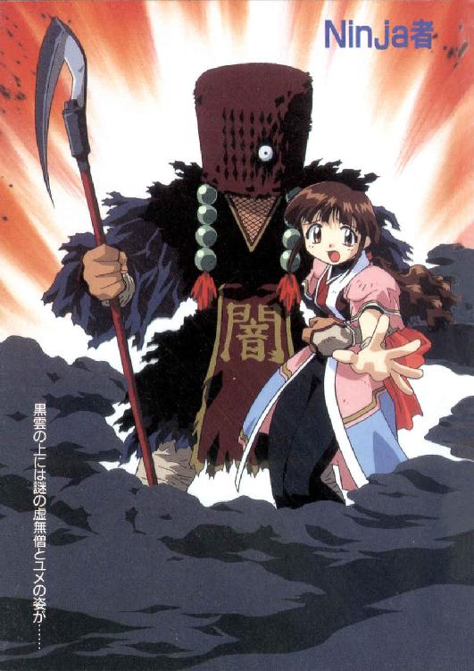
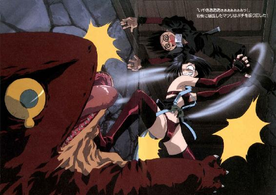

| Ninja者 (富士見ファンタジア文庫) | |
| 川口 大介 | |
| (2015) | |


Ninja者
著：川口大介
原案：菅沼栄治

富士見ファンタジア文庫
本作品の全部または一部を無断で複製、転載、配信、送信したり、ホームページ上に転載することを禁止します。また、本作品の内容を無断で改変、改ざん等を行うことも禁止します。
本作品購入時にご承諾いただいた規約により、有償・無償にかかわらず本作品を第三者に譲渡することはできません。
本作品を示すサムネイルなどのイメージ画像は、再ダウンロード時に予告なく変更される場合があります。
本作品は縦書きでレイアウトされています。
また、ご覧になるリーディングシステムにより、表示の差が認められることがあります。
口絵・本文イラスト 菅沼栄治
セルワークス ＡＩＣ
序章
天下が治まり、乱れ、国が興され、いつしか亡びる......治乱興亡は世の常、時の習いともいうべきもの。
だが、短き人の命、はかなき人の心には、それは重過ぎるものでもある。
──そして今ここに、また一つの国が亡ぼうとしている。
────────────────────
闇夜を全て焼き尽くすほどに炎上し、地獄のような悲鳴と怒号が響きわたる城内。血塗られた忍者刀を下げた若者と、その主君らしき男が向かい合っている。
既に若者はかなりの傷をおっており、肩で息をしていた。
「殿っ！ カブス軍の勢いすさまじく、敵がここまで到達するのも時間の問題です！ どうかここは落ち延び、再起を計って下さいっ！」
「ならぬ！ わしは誇りあるビャクロの王！ このまま終わるわけにはいかぬ！」
「し、しかし！」
「よく聞けユキノブ！ お前は姫を連れて逃げよ！」
「!? 姫君を......？」
「頼んだぞ！」
男は、迫り来る敵兵に向かい、炎の中を突っ切っていった。
「と、殿──っ！」
────────────────────
この夜、陥落するビャクロ城から一人の忍者が脱出した。
その胸に、まだ誕生日を迎えていない小さな女の子を抱いて......。
第一章 尋常ならざる訪問者
山奥の隠れ里。ひとつふたつ......と数えられるくらいの僅かな家屋が、ひっそりと点在している。美しい鳥の声がどこまでも響き、時間がゆっくりと流れる静かな空間。
そこからさらに山の奥へ入っていくと、鬱蒼と木々が茂る森の中に、静かにたたずむ屋敷が見えてくる。
その屋敷の中に、あの男がいた。
「............」
柔らかな日差しが差す質素な室内。ユキノブは、かつて自分の主君の城があった方角に向かって正座し、黙禱した。
あの戦いで右目と左腕を失ったユキノブは、合掌することができない。だからユキノブは、ただ、黙禱している。
『......殿......』
ビャクロ城がカブス軍によって陥落し、ビャクロの国が滅亡したあの戦いから、既にかなりの年月が流れていた。
その間、ユキノブはずっとお家再興の機会を伺っていた......が、未だに何もできないでいた。ただ山奥でひっそりと暮らしながら、こうしてまた〈あの日〉を迎えてしまったのだ。
ユキノブは、自分の不甲斐無さに身を切られる思いがした。
『......私にもっと力があれば......』
ユキノブにとって唯一の救いは、ビャクロの国の正統王位継承者である姫君が、今ここで生きていることをカブス軍に知られていないことだ。
カブス軍の中には、もうビャクロ王家の血筋は途絶えたと思っている者も多いと聞く。そういう連中は、もはやビャクロの国は完全に消滅した、と確信しているわけだ。
だが、今ユキノブの手元に姫君がいる以上、王家の再興は可能なのだ。
『殿、今しばらくのご辛抱を。このユキノブ、命に代えても必ずや......』
どっかあああああああああん！
壁をぶち破って、ユキノブの部屋に何かが飛び込んできた。
床に叩きつけられる寸前受け身をとって、転がりながら立ち上がったそれは、長い髪をひっつめにして忍者装束をまとった少女。
そしてその少女を追うように、今開いた壁の穴から、もう一人少女が出てきた。こちらもやはり忍者装束だがやたらと露出度が高く、先の少女より大人っぽい雰囲気がある。
「わたしの花鳥風月えびぞり大回転投げをくらって立ち上がるとは、さすがねサクラ！ でも、まだまだこんなもんじゃ許してあげないわよっ！」
「それはこっちのセリフよマツリっ！ たとえ世界中の方位磁石が効かなくなっても、おてんと様は必ず東から昇るっ！ それと同じように、正義の味方は必ず勝つことになってるのよ！」
「またわけのわかんないことを！ どうせまた紙芝居のまねっこでしょ！ ホント、お子様なんだから！」
「マツリこそ何よ！ 花鳥風月えびぞりなんとかって、メチャクチャかっこ悪いじゃない！」
「あんたに言われたくないわよっ！」
とっくみ合いを始める二人。いつものことなので動じずに正座しているユキノブの周りを転がり回りながら、サクラとマツリの熾烈な戦いが繰り広げられる。
「この断層的厚化粧女っ！」
「何よ水面的ペチャパイ女っ！」
「ふんっ！ いいこと教えてあげるわマツリ！ 今度体重を計る時念入りに顔を洗ったら、きっとすごーく軽くなるわよ！ 良かったわね！」
「はんっ！ こっちもお礼に教えてあげるわサクラっ！ その胸をぎゅーっと締め付けてるさらしをはずせば、少しは見られる体型になるわよ！......え？ さらし巻いてなかったの？ ちっとも気がつかなかったわ！ 今明かされた衝撃の事実っ！」
悪口雑言が大音響で交錯し、サクラの髪が乱れ、マツリの服も乱れる。もしこの二人に好きな男性がいたら、〈とても見せられない姿〉という状態だ。
そんな二人を見ようともせず、最初からじっと目を閉じているユキノブ。頃合を見計らって......
「やめいぃぃぃっ！」
一喝。組み合って、というより絡み合って転がっていたサクラとマツリが、止まる。
「全く、いつもいつも......原因は何なのだ？」
ため息混じりに問うユキノブ。
サクラとマツリは、びしっ！ と互いを指さし、
「マツリが、あたしのおまんじゅうを食べちゃったんです！」
「サクラが、わたしの団子を食べちゃったんです！」
「違うんです！ マツリが先にあたしのおまんじゅうを食べたから、あたしは.........」
「何言ってんのよ！ あんたが先にわたしの団子を食べたんでしょ！」
「あんたが先よ！」
「あんたが先よ！」
乱闘再開。
「この、露出狂のふしだら女っ！」
「言ったわね幼児体型のずん胴女っ！」
龍虎のごとく絡み合い、くんずほぐれつ転がり回る二人。......もうユキノブが何を言っても聞かないだろう。
「あの......」
静かに戸が開けられて、また一人の少女が入ってきた。
手に持ったお盆には湯気の立つ湯吞みがある。
「ユキノブ様、お茶をお持ちしまし......きゃっ！」
マツリに投げ飛ばされたサクラが、少女に激突した。お盆が飛び、湯吞みが落ち、割れる。
「あ、ごめんユメ！ 大丈夫？」
「......え、ええ......」
「そう、良かった。......こらサクラっ！ ちゃんと前見て投げられなさいっ！」
「投げたのはあんたでしょ！」
「ユメにぶつかったのはあんたよっ！」
サクラとマツリが三たび取っ組み合うそのすぐ側で、ユメは懐から手拭いを取り出し、床にこぼれた茶を丁寧に拭いた。
湯吞みのかけらを片付け、盆も拾ってからゆっくりと立ち上がって、
「新しいのを入れてきます」
ユキノブに一礼した。
「あ......ああ。すまん」
ユメは静かに退室し、戸を閉めた。
その直後、サクラとマツリが、
どっかあああああん！
と戸をぶち破り、さらに窓から飛び出し、森の中に入った。細い枝の上を飛び渡り、宙で何度も交錯し、激しくぶつかり合う。
ようやく忍者らしい戦いになってきたようだ。
「こんのおぉぉぉぉぉっ！」
がしっ！ 空中で組み合い、そのまま落下。だが二人は離れず、砂まみれになりながらもサクラが上になり、マツリが上になり、ごろごろ転がって......唐突に止まった。
何故止まったかというと、地面がなくなったからである。いかに忍者とはいえ、地面なくしては転がれない。
何故地面がないというと、ここが谷の上だからである。
「きゃあああぁぁ────っ！」
ざっぱあああああぁぁぁぁぁぁ............ん
二人が谷川に落下した水音は、ユメが入れ直してくれたお茶をすするユキノブの耳に、はっきりと聞こえた。
「はあっ......」
壁と戸に大きな穴が開いた部屋の中で、ユキノブは大きなため息をついた。
「父上、今の音はもしや......」
穴の開いた戸を律儀に開けて、一人の若者が部屋に入ってきた。
サクラたちよりも少し年長の、ユキノブに良く似た凜々しい若者である。やはり忍者装束で、背中に長短二本の刀を背負っている。
「カヲルか。言うまでもないが、この惨状はサクラとマツリだ」
「や、やはりそうですか。すると原因はまんじゅうがどうとか団子がどうとか？」
「......ああ」
サクラとマツリがケンカするのがいつものことなら、その原因もいつものこと。ユキノブの息子にしてユキノブの弟子たちを統率する立場にあるカヲルには、サクラやマツリのことなど、その場にいなくとも手に取るようにわかる。
「全く、困ったものだ。このままではいつの日か、屋敷を全壊しかねんな」
「......そうですね......」
二人とも、本当にそう思っているわけではない。半分くらいはちゃんと冗談だ。
「......カヲル、一応止めてきてくれ。あの二人もお前の言うことなら聞くだろう」
「はい」
カヲルが部屋を出ていくと、入れ違いにユメが入って来た。
「今、カヲル様が出ていかれましたが......？」
「ああ、サクラとマツリを止めに行ってもらったんだ。だがあの様子だと、カヲルもてこずるかも知れんな」
「ええっ!?」
冗談混じりのユキノブの言葉に、ユメが驚愕した。顔は青ざめ身は萎縮し、まるでこの世の終わりが来たかのような驚きようだ。
「......どうしよう......」
「ど、どうしたユメ？」
「......実は......」
「実は？」
身を乗り出すユキノブ。
「実は......今、お昼御飯ができたところなんです。カヲル様たちのお帰りが遅くなったら、冷めてしまう......」
ずべしゃああぁぁっ！
豪快にコケるユキノブ。
ユメはしばし考えて、
「ユキノブ様、わたしもカヲル様たちを迎えに行って来ます。ポチとハヤシも出かけたままですし......では、失礼します」
ユメはぱたぱたと上品な足音を立てて、出ていった。
後に残されたのは、コケた姿勢のままのユキノブ。
『......つ......疲れた......』
重い使命を抱え、そして問題児たちを抱えての毎日。心身ともに疲れきった彼が、一時の安らぎを求めたとて何の罪があろうか。
そう。今はまだ、あんな大騒動が起ころうなどとは、神ならぬ彼には予想できなかったのだから。
谷川の激しい流れに飲み込まれながら、それでもまだサクラとマツリは闘っていた。
「こ、このっ......！」
マツリは激流をうまくくぐってサクラの後ろに回り、渾身の力をこめて締め上げた。
「勝った！......さあサクラっ！ 参ったと言いなさい！ そうすれば命だけは助けてあげるわっ！」
勝利を確信、ざまあみなさいサクラっ！ と思ったその時、マツリの後ろから声が。
「ふふ～んだ。誰が勝ったんですって？」
「えっ？」
振り返って見れば、なんとマツリの後ろにサクラがいた！
「サ、サクラっ!? じゃあこれは......」
マツリが締め上げていたのは、丸太だった。
「............！」
マツリは、サクラの変わり身の術に引っかかってしまったのだ。ああ、なんたる不覚。
「勝負あったわね、マツリっ！ やっぱり正義の味方は勝つもの、悪は敗れるものと決まっているのよっ！」
「な、何よ！ こんなの卑怯よ！」
「変わり身を見抜けなかったんだから、あんたの負けよっ！」
「わたしは認めないわよっ！」
と、その時。
どっかあああああああぁぁぁぁぁぁん！
突然、水中で大っっ爆発！ 巨大な水柱が立ち、サクラとマツリが吹っ飛んだ。
「きゃあああああああぁぁぁぁぁぁっ！」
紙屑のように舞い上げられた二人。きりもみ回転がかかって体勢を整えることもできず、豪快に河原に向かって垂直落下、その勢いで上半身が土中にめり込む。
「うぐっ！」
「ぐえっ！」
その様子を、河原の大きな岩の上に座っている二人の少年が見つめていた。
「あ......！」
「ふむ......」
片方は驚いている。片方は落ち着いている。
「お、おいハヤシ......あ、あれひょっとして......」
黒髪の、背中に忍者刀を差した少年が、うわずった声で言った。
「ふ～む......」
ハヤシと呼ばれた少年の方は、いたって冷静。こちらは忍者刀を差していないが、代わりに短めの外套の裏に妖しげな薬品や爆弾等をいくつもくくりつけている。
「魚を気絶させて捕獲するための爆弾だったんだが、見ろポチ。河原に散らばっている魚は、どれもバラバラになってしまっている。まだまだ研究・改良しなくては......」
「言ってる場合かハヤシっ！ サクラ、思いっきり頭から落ちたぞっ！」
ポチは転がるように岩を飛び降りた。必死の表情で、サクラを助けに行こうとする。
「......待てポチ」
「何だよっ！ 早く助けないと！」
「今お前、『サクラ、思いっきり頭から落ちたぞっ！』と言ったが、落ちたのはサクラだけじゃないぞ」
「え......そ、そうだっけ？」
「落ちたのはサクラとマツリの二人、これは一目瞭然だ。にもかかわらずお前はサクラのことしか頭になかった。ということは、やはりお前はサクラのことが好......」
「わあああぁぁぁぁっ！」
ポチは一気に岩を駆け上がり、ハヤシの口を塞いだ。
「お、おれは、ただ、その、あの......」
ハヤシの口をしっかりと押さえたまま、真っ赤になって取り乱しているポチ。
と、その背後に二人分の足音。
「楽しそぉねポチ」
「と、ハヤシ」
「え？」
振り返って見ると、サクラとマツリがいた。激流と爆風（主に爆風）によるボロボロの姿で、二人を見上げている。
二人とも、かなり怒っている。まあ当然だろう。
「ハヤシっ！ 今の爆発、あんたの仕業ねっ！」
「どーゆーつもりよっ！」
ハヤシは、あたふたしているポチの手を引き剝がして、反論した。
「『どーゆーつもり』とは妙なことを言う。おれはただ魚捕獲用の爆弾の実験をしていただけだぞ。お前たち二人は今、屋敷で読書しているはずじゃなかったのか？ 何故ここにいる？」
鋭い指摘。ユキノブに言われた課題図書を放り出して、二人でつまみぐいしていたとは言えない。
そんなことがユキノブにバレたら、罰として風呂当番一週間だ。いや、ひょっとすると便所掃除二週間になるかも知れない。
「う......そ、それは......」
サクラが言葉に詰まっていると、マツリが癇癪を起こした。
「あ～もう！ 何悩んでんのよサクラっ！ とにかく、わたしたちが吹っ飛ばされたってのは事実なんだからねっ！......ハヤシっ！ サクラはともかく、このわたしの美貌を焦がした罪は重いわよっ！」
一触即発！ のこの時。
「こらこらっ！ ケンカはやめろケンカは！」
「カ、カヲル？」
カヲルが到着した。場の空気が、一気に引き締まる。
「前から言ってるだろう。忍者たる者、滅多なことで怒ったりしていてはダメだと。ましてや仲間割れなど言語道断だ。特にサクラとマツリ。食べ物のことなんかでいちいち争うな」
ぴしゃり、とカヲルに言われて、さすがの二人もしゅんとなった。
「はぁい......」
さっきまでの勢いはすっかり消えて、おとなしくなるサクラとマツリ。
「みんな────っ！ お昼御飯できたわよ────っ！」
丁度いいタイミングで、ユメが来た。
「あ、ユメだ！」
途端に全員が元気になる。
「昼飯か。よし、みんな帰るぞ」
「は──いっ！」
カヲルを先頭に、サクラ、マツリ、ポチ、ハヤシが駆け出した。
ユメも入れて、六人。ユキノブの元で修行を続けている、若き忍者たちである。
深夜。サクラたちがぐっすりと眠っている頃、奥の間でユキノブとカヲルが向かい合っていた。
何か、重大なことを話し合っている雰囲気だ。
「いいか、よく聞いてくれカヲル」
「はっ」
燭台の明りが、真剣な表情をした二人の男を照らしている。隙間風が吹くたびに炎が揺れ、ぼんやりとしたその明りも揺れる。
重々しい雰囲気の中、ユキノブは重々しく口を開いた。
「実はな。村会の慰安旅行で、明日からわしは一泊二日で温泉に行くこととなった。ついては留守中、子供たちを頼む。......どうしたカヲル。何故いきなり寝る？」
カヲルは寝ていた。かなり不自然な格好で。
「ひょっとして、それは最近流行りの新しい体操か何かか？ だったらわしにも教えてくれ。若者の流行に遅れたくはないからな」
流行に敏感な、あくてぃぶな年寄りユキノブ。
「ち、父上、これは体操などではなく、コケてるんです......何ですかその、慰安旅行ってのは！」
「慰安旅行といえば慰安旅行だろう。慰安のための旅行だ」
「いえ、あの、自分が言ってるのはそういう意味ではなく......」
「ふ、安心しろカヲル。温泉旅行というのは、世を忍ぶ仮の姿というやつだ」
「......は？」
何か裏があるようだ。カヲルは姿勢を正し、再び真面目な顔つきになってユキノブの話に耳を傾ける。
「実は、ここのところカブス軍の動きがまた活発になってきて、頻繁に遠征訓練などをしておるようなのだ。これはおそらく、近々どこかへ攻め込むつもりだとわしはにらんだ」
「はっ」
「そこでだ。わしはここらで一つ、カブス軍の中枢を探ってみようと思う。だがこんなことをサクラたちに話したら、いらぬ心配をかけることになるであろう？ だから温泉に行っているということにしておこうと思ってな」
「ということは......まさか父上、一人でカブス軍に潜入なさるおつもりなのですか？」
「そうだ」
「そ、そんな！ 危険過ぎます！」
「なに、村会の温泉旅行に合わせてのことだから、一泊二日だけだ。心配いらん」
「しかし......！」
ビャクロの国を滅ぼして以来、カブス軍は日に日に力をつけてきている。それこそ放っておけば、全世界を掌握しかねない勢いだ。
そのカブス軍に、単身潜入するなんて......！
「ビャクロの国を再興するためには、どのみちカブス軍は、いずれ戦わなくてはならぬ相手だ。情報は多いにこしたことはない」
ユキノブの言葉は、カヲルの不安と反論を先手を打って封じるように紡がれていく。
それでも、
「ではせめて、自分も御一緒に！」
カヲルは身を乗り出して必死に懇願する。が、ユキノブは聞き入れない。
「だめだ。お前にはわしの留守中、サクラたちの稽古を指導してもらわねばならん。それに......」
「それに？」
「わしに万一のことがあった場合、ビャクロを再興し殿の無念を晴らせるのは、カヲル、お前しかおらん」
「............！」
ずしり、と重いものがカヲルの肩にのしかかった。
あるいは炎のように熱いものが、カヲルの胸を貫いた。
あるいは怒濤のような力強いものが、カヲルの心を直撃した。
あるいは......
「ち、父上っ！」
カヲルは涙を流して、ユキノブの前にひれ伏した。
「申し訳ございませんっ！ 自分は父上の気高く尊いお心も知らずに、先ほど温泉旅行の話を聞いた時、てっきり父上が本気で温泉旅行に行くつもりかと思ってしまいました！」
床に頭をこすりつけ、心の底から自分の愚かさを恥じるカヲル。
ユキノブはというと......何故かやたらと落ち着きなく、そわそわしている。額には少なからず汗が流れ、表情も心なしか動揺しているような。
例えて言うなら、必死に考えた噓をあっさりと見透かされたような態度だ。
「いや、まあ、その......」
「父上がのんきに温泉旅行に行くなんて、そんなことは絶対に、絶対に有り得ないことなのに！ ああ、なんという愚かな！」
「あ......あ、あのなカヲル。そ、そんなことは、そんなに、気にしなくても、良い、ぞ」
などと言いつつ、湯吞みの茶を一気に飲もうとして舌を火傷する。
ユキノブがそんなことをしている間にも、カヲルの深刻な悔恨は続く。
「数日前村役場の前を通りかかった時、掲示板に貼り出されていた慰安旅行の告知の張紙を父上がじ────っと、物欲しそ────な目で見つめていた姿を目撃してしまったために、自分は、自分はっ......！」
肩を震わせ号泣し、感情が高ぶりまくっている。
で、ユキノブはというと。
「オ、オホン。いや、まあ、カヲルよ。つまり、その、過ちは誰にもあることであるからしてだな、はは、ははは」
と言いつつきゅうすから湯吞みに茶をつぐが、その手は小刻みに震え、きゅうすと湯吞みがカチカチと小さな音を立てている。
が、平伏しているカヲルはそれに気づかない。
「はっ！ もう二度と、父上を疑ったりはいたしません！ 留守中のことは一切自分にお任せ下さいっ！ サクラたちのこと、しっかりと統率してみせますっ！ 間違っても、屋敷を全壊させるようなことはさせませんっ！」
「あ、ああ。頼んだぞ。わしは明日の朝早く出るから、もう寝る」
「はは────っ！」
まだ感動冷めやらずひれ伏しているカヲルを残し、ユキノブはこそこそと自室に戻って、布団に潜り込んだ。
その枕元には、カバンが一つ置いてあった。一泊分の着替えと、手拭いと爪楊枝とヒゲ剃り用剃刀と、その他もろもろが入ったカバンが。
『ゆ、許せカヲル......』
「たあああぁぁっ！」
「えいっ！」
早朝の静かな山の中に、気合いに満ちた声が響きわたる。サクラたちが忍術の稽古をしているのだ。
今のところは何事もなく滞りなく、いつも通りの稽古が進行していっている。ユキノブは今朝早く、サクラたちが起床する前に出発したので、当然この場にはいない。
『父上、どうか留守中のことはご心配なく......！』
「？ カヲル、どうかしたの？」
意味もなく（はたから見ればそう見える）拳を握って熱血しているカヲルに、サクラが話しかけた。
「い、いやなんでもない。なんでもないぞ。いいか、父上は温泉旅行に行っているのだからな。温泉旅行に」
「それ、もう何度も聞いたよ。......ねえ、今日のカヲル、なんかおかしいよ？」
「そ、そうか？ まあとにかく、いつも通りにだな、いつも通りの稽古をするんだぞ」
「......うん」
実際、いつも通りじゃないのはカヲル一人だけで、あとは何もかもいつも通りだ。
ハヤシが意味もなく（趣味で）爆弾を使おうとしてみんなに取り押さえられるのも同じなら、サクラの変わり身に引っかかったマツリがヒステリーを起こすのも同じ。ポチがサクラとの組み手の時のみ、動きが鈍くなるのも同じ。
そして、ユメが一足先に館に帰って、昼食の準備をするというのもいつもと同じだ。
いつもと変わらない騒がしい日常。......のはずだったが、その日常は、一人の訪問者によってもろくも破られることとなる。
カヲルたちは山中でまだ稽古中のため、ユメだけがいるユキノブの屋敷に、一人の男がやってきた。
虚無僧姿の、見るからにうさん臭そーな雰囲気を背負った男である。
「......ついに......ついに見つけたぞユキノブ──っ！」
入口の戸を乱暴に蹴破って（丁寧に蹴破る奴もいないだろうが）、男は入って来た。そして、あらん限りの蛮声を張り上げてわめき散らす。
「よもやこのわしを忘れたわけではあるまい！ 出てこいユキノブっ！」
だが、男がいくら呼んでも、ユキノブは出てこない。
なぜなら今頃温泉だ。村会のみんなと一緒に温泉につかりつつ一杯やって、いい気持ちになって下手な歌を披露していることだろう。
「出てこいと言っておるだろ──がっ！ ユキノブっ！ 怖気づいたかあああぁっ！」
男の全身から、何かが溢れ出した。殺気や怒気ではなく、妖気に近いがそれとも違う、何か不気味な気配だ。
その気配は辺りの空気を震えさせ、屋敷全体を揺るがした。壺が割れ、書物が崩れ、井戸水が揺らぎ出す。
「............？」
ここまできてようやく、台所にいたユメが土間に来た。
「あ、お客様ですね」
にこやかに応対するユメ。周囲でふわふわしている草履や掛軸はどうでもいいらしい。
その、余りにも落ち着き払った様子に男は戸惑う......と思いきや動じない。男にとっても、ユメの反応などどうでもいいらしい。
それほどまでに、男の頭の中はユキノブのことで一杯なのだ。
「客などではないっ！ お前はユキノブの弟子かっ!?」
「はい」
ユメは素直に、丁寧に答える。
「では、ユキノブはどこだっ！」
「お師匠様でしたら、今朝から村会の慰安旅行で、一泊二日の温泉旅行に出かけられました。ですから明日の夕刻には帰ってこられますが......あの、どうして突然寝るのです？」
男は寝ていた。不自然な格好で。
「ご気分が悪くなられたのでしたら、お布団でも敷きましょうか？ こないだ取ってきた薬草もありますが......」
「うるさいっ！ わしはコケたのだっ！」
「そうでしたか。ご無事で何よりです」
「やかましいっ！ そんなことより、ユキノブは忍者なのだろうがっ！ 何故温泉旅行などに行くっ!?」
「そう言われましても......」
「まさか今頃温泉につかりつつ一杯やって、いい気持ちになって下手な歌を披露しているとか言うのではあるまいなっ！」
「あ、多分そうなっていると思います。お師匠様ったら、酔っぱらうとすぐに歌を歌うんですよ。大きな声では言えませんけど、あまりお上手ではなくて......あら？ また寝ちゃったのですか？」
男は、またしてもコケていた。
押し殺した涙声と一緒に。
「......う......うぅぅっ......」
......そして、キレた。鬼のようにキレた。これ以上ないってくらい思いっきりキレた。
「う......うがああああぁぁぁっ！ ユキノブの奴め、人の苦労も知らんと温泉につかっていい気分かっ！ ええいこうなったら！」
男の全身から、例の妖気もどきが一気に溢れ出した！
「きゃああぁぁぁぁ──っ！」
悲鳴が、カヲルたちのところまで響いた。
「今のは!?」
「ユ、ユメじゃない？」
「あの悲鳴、ただごとじゃない！ みんな、屋敷に戻るぞっ！」
「はいっ！」
カヲルたちが、風のように木々を跳んで屋敷に駆けつけてみると......そこには！
「な、なんだっ!?」
館の体積の数倍はある黒雲が、館の上に浮いていた。
しかし雲、にしては低空だ。煙、にしては全く揺らいでいない。仕方なく〈黒雲〉と表現するしかない、謎の物体が浮いている。
その上には虚無僧姿の男が立っており、そしてその腕の中にはユメがいた。
「カヲル様──っ！」
「ユ、ユメっ！」
カヲルたちが一歩踏み込んだところに、黒雲から猛烈な炎が吐き出された。
「うわっ！」
あわてて跳び退き、なんとかかわすカヲルたち。
反射的に黒雲に向かって手裏剣を投げつけるが、黒雲は炎の玉をいくつも吐き出して、ことごとく迎撃してしまう。
「くっ！ 当たらないっ！」
「でも、あれじゃあ当たっても傷つくかどうか......」
「ならばおれが、秘蔵の超特大爆弾でっ！」
ハヤシが、ハヤシ自身の長身と同じくらいの大きさの、巨大な爆弾を外套の裏から取り出した。
「......そんなものどうやって収納してたんだよ」
「細かいことは気にするなポチ！ とにかく、これなら相手が黒雲だろうと黒蜘蛛だろうと、一発で粉砕だ！ 何しろこの爆弾は、向こう三軒両隣を強烈無比な爆炎が包み込み」
「ユメを殺す気かバカっ！」
カヲルの強烈なツッコミが入り、倒れ伏すハヤシ。
「......なるほど、確かにこういう状況でこれを使えば、ユメを巻き込むことになる......しかし待てよ。それ以前に、これをあんな上空まで投げることが可能だろうか？ どう思うポチ？」
「おれに振るなおれにっ！」
「はっはっはっ！ お前たち、ユキノブの弟子どもだな！」
勝ち誇った笑みを浮かべ（といっても深編みがさの下だが）、男は高らかに名乗りを上げた。
「わしはユキノブに対する怨念を極限まで高めた結果、究極の力である〈闇の力〉を得た者！ 〈闇の虚無僧〉ヤコムソンだっ！」
「父上に対する怨念だと!?」
「いかにも！ だがビャクロの国が滅んで以来、憎きユキノブめは行方知れず！ 仕方なく諸国を放浪し、捜しに捜してようやくユキノブめの居所を突き止めてみれば、ふざけたことに一泊二日の温泉旅行に行っているという！」
すさまじい気迫でまくしたてるヤコムソン。このまま放っておけばユメだけでなく、サクラたちにも被害が及ぶかも知れない......と判断したカヲルは、とりあえずヤコムソンの怒りをこの場からそらさねば、と考えた。
「ま、待て！ なんのいわれがあるのかは知らないが、父上に恨みがあるのならば直接父上に言えば良かろう！ ユメは関係ない！」
「黙れうるさいやかましいっ！ このわしの長年に渡る艱難辛苦、それがようやく報われるかと思ったら温泉旅行によって裏切られた悔しさが、無念が、怒りが、悲しみが、どうしようもない虚脱感が、お前らにわかってたまるかああぁぁぁっ！」
ヤコムソンは、もはや何も聞く耳もたない。
まあ気持ちはわからんでもないが。
「あ～ムシャクシャするっ！ そういうワケでわしは、ユキノブの弟子であるお前らも我が復讐の標的と認定したっ！ その手始めにこの娘をさらったのだ！ わかったか！」
八つ当りのヤコムソン。これにはカヲルより早く、サクラが激しく抗議した。
「ちょっと！ それムチャクチャよ！ たとえ北風が南から吹くことになろうとも、あたしはあなたの行状を許さないっ！」
「......どうやれば北風が南から吹くのだ？」
「そんなこと知らないわよ！ とにかく、今すぐユメを放しなさいっ！ さもないと、あたしの必殺技が炸裂するわよっ！」
びしぃぃっ！ とキメるサクラ。いつも手に汗握って見てる紙芝居、〈正義の忍者黒影〉のマネだ。
「さあ、降参するなら今の内よっ！ でないと......」
ぼっ！
黒雲から炎が吹き出され、サクラに命中。
黒影の構えをとったまま、サクラは黒焦げ。
「......熱い......」
そのまま、ぱたりと倒れた。
すかさずポチが駆け寄り、抱き起こす。
「サ、サクラっ！ しっかり！」
「......あ、あたしは大丈夫よ。それより......」
「それより？」
「確か、ポチも一緒に見たわよね。こないだの〈正義の忍者黒影〉」
「う、うん」
「さっきの構えだけど、左足の角度はあれで良かったかな......？」
自身の怪我よりも構えの正誤を気にする少女、サクラ。
「だからお子様なのよ」
「あ！ マツリ、またバカにした！」
「お子様をお子様って言って何が悪いのよ！ 大体この非常時に紙芝居のまねっこするなんて、非常識よ！」
「い、いーじゃないこれくらい！」
「良くないっ！」
「いーじゃないっ！」
「良くないっ！」
「いーじゃないっ！」
「良くないっ！」
「えええええええいわしを無視するなああぁぁぁっ！」
頭上から降り注ぐ、ヤコムソンの大声。
「全く、この非常時に紙芝居のマネがいいだの良くないだのと、非常識な......仲間がさらわれておるというのに、どういうつもりだっ？」
「あんたが言わないでよあんたが！」
「そーよそーよ！ 悪役たる者は正義の味方に対して反論なんかしちゃいけないんだって、黒影も言ってたのよっ！」
「ええいうるさいっ！ とにかく！ ユキノブが帰ってくるまで、この娘は預かる！ わかったな！」
ヤコムソンとユメを乗せた黒雲は、ゆっくりと上昇していく。
「カヲル様────っ！」
ユメの悲鳴が響く。カヲルたちは追いかけ......たいが、さすがに空を飛ばれていては無理な話だ。
「ユメ────っ！」
「こらっ！ 降りてきなさいっ！ わたしの春夏秋冬三色混合横転蹴りをお見舞いしてやるわっ！」
「ポチ、やっぱりこれ投げよう。手伝ってくれ」
「やめんかっ！」
......と、ヤコムソンは一枚の紙切れを落とした。
「ユキノブの弟子ども！ この娘を返してほしくば、我が居城に来るがいい！ 来られればの話だがな！ はっはっはっはっはっ！」
ヤコムソンの高笑い。すると突然雲が風に流れ散り、中から巨大な龍がその姿を現した。
「な、何っ!?」
驚くカヲルたち。絵巻物でしか見たことのなかった龍が、今自分たちの頭上にいるのだ。
そしてその龍は、ヤコムソンとサクラを乗せて悠々と大空を舞い、去っていく。
「カヲル様ああああぁっ！」
「は────っはっはっ！ 待っているぞユキノブの弟子ども！」
......龍は、すぐに見えなくなってしまった。
呆然としているサクラ、啞然としているマツリ。
「ねえマツリ......あれ何だと思う......？」
「さ......さあ......」
「妖怪......かな？」
「幽霊じゃないわよね......」
どうしていいかわからず走り回るポチと、落ち着いているハヤシ。
「ハ、ハ、ハヤシっ！ ど、どうしようっ!?」
「ユメ、『カヲル様』しか言わなかったな」
「落ち着くなハヤシっ！」
「あれはきっと、『カヲル様が助けに来てくれると信じて待ってる』ってやつだな」
「落ち着くなってのに！」
そして、カヲル。ヤコムソンが落とした紙を拾って見てみると、確かに地図だ。行ったことのない場所だが、一応行き方はわかる。
地図の中央には印がつけられており、おそらくそこがヤコムソンの城なのだろう。
「......みんな！ 装備を整えろ！ ユメを助けに行くぞ！」
「は、はいっ！」
カヲルの号令一下、浮き足だっていた四人もてきぱきと動き始めた。
それから間もなく、カヲルたち五人は武器と防具と種々の道具を揃えて装備し、出発した。
並々ならぬ状況に、興奮気味のサクラたち。
「な、なんかスゴイことになっちゃったねポチ......」
「う、うん......」
だがサクラたちのまとめ役兼指導者であり、ユキノブの留守を守る責任のあるカヲルも、それに負けないくらい熱血していた。
『待ってろよユメ......おれたちが、必ず、必ず助けてやるからな......！』
目指すはヤコムソンの居城、捕らわれたユメを救うべく──。だがカヲルはともかく、サクラたち四人にとっては初めての、いきなりの〈実戦〉なのである。
相手は復讐に燃え、不気味な力を使う男、ヤコムソン。まだまだ未熟な新米忍者たちは、果たして無事にユメを救出できるであろうか......？
第二章 うじゃうじゃ出現闇軍団
暗く深い森の中、黒雲を背景にそびえ立つ城があった。城の外観そのものはいたって普通だが、それをとりまく周りの風景がそんな風だから、どうしても異様な雰囲気に見えてしまう。
が、別に気にすることはない。実際その城は異様なのだ。兵もいないし、召使いも一人もいない。いるのは異様な城の異様な主と、その部下が少しだけ。
主の名は、ヤコムソン。ユメをさらった、闇の虚無僧ヤコムソンである。
「そろそろユキノブの弟子たちが山を降りた頃か。町に出ればすぐに、腰を抜かすことになる......ふふふ」
天守閣の窓からずっと外を眺めていたヤコムソンが、部屋の中を振り返った。
そこには、後ろ手に縛られたユメがいる。
「まあ、おとなしくしていればお前は少し長生きできるぞ。一人ぐらいユキノブの目の前で殺してやらんと、わしの気が治まらんからな」
「............」
「どうだ。恐ろしかろう。恐れるがいい。わしはお前の恐怖を、お前の悲しみを、お前の怒りを纏って、闇の力をさらに強くするのだ......ふっふっふっふっ」
悪の美学に浸り、自分に酔うヤコムソン。
ユメはじっと黙ったままだ。
「しかし、お前の仲間たちは本当にお前を助けに来ると思うか？ お前を目の前で連れ去られて、何もできなかったあいつらが」
「......カヲル様は、きっと助けに来てくれる！」
ユメは、キッとヤコムソンをにらみつけて言い放った。確信に満ちた、強い口調で。
「あなたが何をしようと、カヲル様はきっと、いいえ必ず、全てを乗り越えてあたしを助けに来てくれるわ！」
「ほう。確か、あの場には全部で五人いたと思うがそいつらは？」
「カヲル様は必ず来てくれる！ あなたがどんなに極悪非道な罠を用意しようとも、どんなに残虐無比な妖怪を揃えようとも！」
「だから、他の四人は？」
「カヲル様は決して負けないっ！ ええ、負けませんとも！」
「他の四人......」
「カヲル様は伝説の勇者となって、あるいは白馬の王子様と化して、状況の都合上、魔王となったあなたを打ち倒すわ！」
「............」
「なんたってカヲル様なんですもの、あなたなんかに負けるはずがないわ！ そもそもカヲル様は......」
ほっとくときりがなさそうだ。
「わ、わかった。良くわかった。カヲル様は助けに来る。うん。信じよう」
「わかってくれればいいんです。あたしも、つい口調が激しくなってしまって」
「いや、別にそんなことは気にしなくても......って、なんでこうなるんだ！」
「あの、わたし何かお気に触ることでも言いましたか？ もしそうなら、どうもすみませんでした」
ペコリと頭を下げるユメ。
ついさっき、「おとなしくしてれば長生きできるぞ」と冷たく言ってやった相手に、なんと謝られてしまった。
「うぐぐぐ......あ、悪の美学がぁ......」
頭を抱えるヤコムソン。
そんなヤコムソンを、縛り上げられたユメが心配そうに見つめていた。
カヲルたち五人は山を降り、ふもとの町を歩いていた。ヤコムソンの残していった地図に従い、街道を歩いていく。
なにしろ相手は情け容赦なく正体不明なので、下手に山道を歩いたりするよりは見通しのいい広い道を歩いた方がいいだろう、ということでこうなった。
「みんな、よく聞いてくれ」
先頭を歩くカヲルが、後に続く四人に言った。
「このあたりはもちろん、カブスの領土ではない。だが、いつどこに誰がいるかわからないから、おれたちがビャクロの生き残りだということは知られないようにしろ」
引き締まった表情で、サクラたちがうなずく。やはり初の実戦で緊張しているのだろう。
しかも、ついさっきユメを助けようとして一応戦ったが、まるで歯が立たなかったという実績もあるのだ。
「で、でもまあ、あの龍だけが強くて、本人はまるっきり弱かったりするかも知れないし」
重々しい雰囲気を軽くしようと、ポチが言葉をひねりだす。
だが、悲しいくらい説得力がない。仮にそれが本当だとしても、どうせあの龍を倒さない限りヤコムソンとは戦えないだろうし、ヤコムソンの口ぶりからして、ああいう強力な配下をズラリと従えていそうだ。
──ということを（ポチも含めて）一同が同時に考える。同時に事態の深刻さを思い知り、同時に雰囲気が一層重くなる。
すると今度はサクラが、場の空気を明るくしようと試みた。
「ま、まあ多少の苦戦はするだろうけど、最終的にはあたしたちが勝つわよ。なんたって、ほら、相手は悪役なんだから。ね、みんな」
「で、あたしたちが正義の味方？」
醒めた目と醒めた声と醒めた態度でマツリが聞く。
「そうよ。マツリ、わかってるんじゃない」
「あ、あのねえ。あんたの言い方だと、相手が悪役なら必ず勝てるって言ってるみたいに聞こえるけど」
「当たり前じゃない。だってこないだ、黒影がそう言ってたもん」
何を今更、という顔でマツリを見るサクラ。
サクラにとっては黒影の言うことはなんでも正しく、黒影の言うことこそ森羅万象の大真理となる。
少女の一途な恋心は、理屈じゃないのだ。......この場合、ちょっと違うかも。
えっほ、えっほ、えっほ、えっほ......
後ろから籠屋が近づいてきているが、まあ関係ないだろう。カヲルたちは無視する。
「きっと、長生きできるわよサクラ」
「......マツリ、ひょっとしてまたあたしのことバカにしてない？」
えっほ、えっほ、えっほ、えっほ......
「あら、わかった？ 成長したのねあんたも」
「マツリっ！」
えっほ、えっほ、えっほ、えっほ......
籠屋がカヲルたちを追い抜いた。
「もう！ マツリはいつもいつもあたしのこと......あれ？ マツリ？」
マツリがいない。サクラと並んで歩いていたのに、いつの間にか消えてしまった。
普段なら首をひねればそれで済む（のか？）が、今は事態が事態だけにそうもしていられない。
「カ、カヲル、マツリが消えちゃった......」
「何？」
とカヲルが振り返って見ると、
「！ おいハヤシ！ ポチは？」
ハヤシの隣を歩いていたはずの、ポチもいなくなっている。
「おや。いつの間にどこへ？」
相変わらずハヤシだけは動じない。サクラとカヲルはあわてて辺りを見回す。
その時、前方から声が！
「カ──ヲ──ルっ！」
「おお────いっ！」
カヲルたちが前を向くと、マツリとポチがいた。
いた、といっても立っているわけでもないし走っているわけでもなかった。籠屋の籠の窓から、首だけ出して叫んでいるのだ。
その籠屋は相変わらず、
えっほ、えっほ、えっほ、えっほ......
と走り続けている。サクラたちは立ち止まっているので、必然的に距離が開いていく。ポチとマツリを乗せた籠が、どんどん小さくなっていく。
どうやら、さっき追い越された一瞬で、トンビが油揚げをさらうように、あっさりとかっさらわれてしまったらしい。
「......はっ！」
思わず一瞬見送ってしまったカヲル、あわててサクラとハヤシに指示を出す。
「いかん！ 追うぞっ！」
「う、うんっ！ カヲル、もしかしてあれはヤコムソンの手下かな？」
「多分そうだ！ マツリとポチが危ないっ！」
カヲルとサクラとハヤシが、籠屋を追って走りだした。
いつの間にかカヲルたちは、街道の中でも人通りの少ない地域に来ていた。それでも相変わらず道は広いし障害物もないので、非常に走り易い場所だ。
三人とも修練を積んだ忍者だから、その足の速さは常人を遥かに超越している。重い籠を担いだ籠屋など勝負にならない。すぐに追いつく。
......はずなのだが、
「な、何なんだあの籠屋は！」
全力疾走しながら、カヲルは思わず叫んでしまった。
籠屋が速いのだ。噓のように速い。カヲルたちがどんなに頑張っても追いつけず、それどころか少しずつ引き離されていっている。
籠を担いで、なお忍者よりも速い籠屋。
「う～む......」
ハヤシは思わず唸った。どうでもいいが走りながら唸るというのは、結構ワザだ。
「あの籠屋、ただ者ではない。さぞ名のある籠屋と見た」
「その、と────りだっ！」
前方から元気な声が聞こえてきた。
二人の若い男の声が、見事に重なっている。考えるまでもなく、前を走っている籠屋の二人だろう。
「我らはヤコムソン様の部下、〈闇の籠屋〉だっ！」
少しも速度を緩めず振り向きもしないで、二人は高らかに名乗りを上げた。
「や、闇の籠屋？」
そのあまりにも馬鹿馬鹿しい名前に、カヲルは我が耳を疑った。
......が、考えてみれば闇の虚無僧の部下が闇の籠屋だっていうのは、筋が通っている。
「って、そんなことはどうでもいいっ！ おい！ 闇の籠屋っ！ その二人を、一体どうするつもりだっ！」
カヲルは、相変わらず鬼のような速さで走り続ける闇の籠屋に向かって大声を上げた。
闇の籠屋は振り返らずに答える。
「ふ！ 知れたことよ！ 我々はこいつらを拉致したのだっ！」
「だから、それからどうするつもりだっ！」
「連れ去る！」
「それからどうする！」
「誘拐する！」
「それから！」
「えっとえっと、ん～、そうだ！ ムリヤリ連れていく！ どうだ！ 素朴ながらも単刀直入で、なかなかいいだろう！」
「............」
何が言いたいのかよくわからない。
質問を変えてみよう。
「その二人を籠から出した後、どうするつもりだっ！」
「籠から......出した後？」
闇の籠屋の言葉が、重ならなくなった。
何やら二人で相談し始めたようだ。（もちろん走り続けている）
「おい兄弟、籠から出した後どうするのかだってよ」
「そりゃお前、まずはこのままあいつらを振り切ってヤコムソン様のとこへ連れてってだな、籠から出したら殺すなり人質にするなり、そんなトコだろ？」
「そう言うが、俺たちヤコムソン様の居場所なんか知らねえぜ？」
「......そういやそうだ。こないだ道端でいきなり雇われて、ただこいつらを攻撃しろって言われて、それっきりだもんな」
「んじゃこれからどうすりゃいいんだ？」
「な、難題だな。そこまで深遠なことは考えてなかった......」
なかなかふざけた奴らである。
「う～む......よし、やはり俺たちゃ籠屋だ。このまま力尽きるまで走り続けるってのはどうだ？」
「おお！ そいつはいいぜ！ やはり籠屋たる者、籠を担いで走りながら死ねれば本望ってもんだ！」
「おうとも！ これこそ籠屋の心意気だ！」
意見がまとまった。再び声を重ならせて、闇の籠屋は高らかに言い放つ。
「というわけで、我らはこの命ある限り、走って走って走りまくることにした！」
「な、何っ!?」
「追いかけたければ追いかけるがいい！ だが我らは走ることしか能のない闇の籠屋、走ることにかけては意地がある！ そう簡単に追いつかれはせんぞ──っ！」
闇の籠屋の走る速度が、ますます上がった。その速さは獲物を見つけた隼か、うなりを上げる疾風か......とにかく、もはや到底人間が追いつけるようなモノではなくなり、カヲルたちはみるみる引き離されていく。
「く、くそっ！ サクラ、ハヤシ、何か手はないか!?」
カヲルは、すぐ後ろを走っている二人に聞いた。
「......策が......」
ハヤシが、ぽつりと呟いた。
「策が、ないわけじゃない。あいつらを止める策が」
「何？ あいつらを止める？ そんなことができるのか？」
ハヤシはうなずく。
「ただ、この策は少々危険を伴う。この策を実行した場合、下手をすれば命に関わることになるだろう。それでもいいか？」
「構わん！ こうなったのはおれの責任だ！」
責任感に燃え、熱血するカヲル。
と対照的に、あくまでも冷めてるハヤシ。
「命に関わる危険を伴うのはマツリたちの方なんだが......まあいいか。では早速」
ハヤシは走りながら、外套の裏から無数の爆弾を取り出した。両手に一杯、持ちきれないほどの爆弾を。
大きさも色も形も爆発力も様々の、無数の爆弾。この爆弾たちに共通しているのはただ一つ、ハヤシが自分の必殺技のために開発したもので、火をつけなくても軽い衝撃を与えてやれば爆発するということだ。
「いくぞ......！」
ハヤシは、爆弾を持った手を振り上げて......
籠に乗せられているポチとマツリ。籠はすこぶる頑丈だし振動は激しいし左右の小窓からは頭しか出せないしで、この二人にはどうすることもできない。
仕方なくマツリは、どこに連れていかれるのかと前方を見ていた。
ポチは後方の、追いかけてくれているカヲルたちを見ていた。
「！ マ、マツリっ！ あれ......！」
「え？ 何よ」
ポチのせっぱ詰まった叫びに、何事かと振り返るマツリ。
後方には、もうだいぶ小さくなったがカヲルがいた。サクラもいる。
そして、ハヤシがいた。両手に一杯の爆弾を持って、これからの展開に期待しまくっている顔のハヤシが。
「ハヤシのあの顔は......」
ポチとマツリは、同時に危機を感じた。
さすがは忍者、自己の生命の危機は敏感に察知できるらしい。いやあ大したものだ。
「お、おいハヤシ────っ！」
「ちょっと待ちなさい────いっ！」
二人の必死の叫びも、風にかき消されてしまう。そうでなくても、もうハヤシの耳には他人の言葉など入らないだろう。
「ハヤシ────っ！」
「必殺！ 無差別爆撃雨あられえぇぇっっ！」
ハヤシは（嬉々として）両手一杯に持った爆弾を、前方を走る闇の籠屋めがけて一斉に投げた。爆弾は大きく放物線を描き、重さや形の違いから空中で散りぢりになって......
ちゅどおおん！ どどどん！ どっかああん！
ばばばん！ どかどかどかん！ ずどおおおん！
闇の籠屋の周囲で、大小の爆弾が一斉に炸裂！
「ひええええぇぇぇぇっ！」
「きゃああああああぁぁぁぁっ！」
爆発の衝撃と爆風で、闇の籠屋は、まるで大地震と台風が同時に襲ってきた中を走っているようになる。しかも時々火の粉が降り掛かってきて大火事の要素も加わり、一言で言えば〈大惨事〉、常人なら走るどころか立ってもいられない状況だ。
しかし、しかししかし、そんなことでは闇の籠屋は負けない！
「兄弟！ なんかすっごくヤバイ状況だな！」
「ああ！ あの爆弾が一つでも命中したら、俺たちゃ間違いなくひとたまりもなく、豪快に木っ端微塵だな！」
この会話を聞いてポチとマツリが悲鳴を上げたようだったが、闇の籠屋は無視する。
「だが兄弟！ 俺たちに止まることは許されないぜ！」
「ったりまえよ！ こうなったら、俺たち闇の籠屋のド根性、見せてやろうぜ！」
「おうっ！」
闇の籠屋は、さらに意地と情熱を燃やして走り出した。
「うぬっ、ちょこざいな！」
最初の一団は一つも当たらなかった。ハヤシは即座に二団目を装塡（外套の裏から両手に一杯の爆弾を取り出す）した。
そしてまた、大きく振り被って......
「くらえええぇぇっ！」
と投げつける。
ひとしきりの連続的大爆発の後、煙の中を走る闇の籠屋の姿が見えた。
どうやらまたかわされたらしい。
「一度ならず二度までも！ もはや原形を留めた死体などという、甘い夢は捨ててもらうぞっ！」
ハヤシは、またまたさらに多くの爆弾を装塡し、投げる。すでにその目は、イッてしまった者の目だ。
「......ねえカヲル。これ、〈策〉って言うのかな」
ひたすら爆弾を投げまくるハヤシを見て、サクラはカヲルに尋ねた。
「さ、策とは言わんだろう」
「そうよね......」
二人ともあっけにとられてしまっている。
闇の籠屋はまっすぐ前を向いたまま、天性の勘だけで爆弾をかわそうとした。籠を担ぐ時は後ろを振り返らない、それが彼らの哲学だからだ。
事実最初の一団はそうやってかわせたが、二団目からはハヤシがムキになって爆弾の量を増やしたため、それだけではとてもとてもかわせなくなった。
が、彼らはかわし続けている。
協力者がいるからだ。
「つ、次は右に二つ！ ちょっと遅れて左に一つ！」
「ほら今度は左よ！ ぼさっとしてんじゃないの！」
ポチとマツリである。周囲で絶え間なく起こり続ける大爆発は大地をえぐり木々を薙ぎ倒し、本物の地震や台風に劣らない恐ろしさを見せつけている。
命中したらどうなるか。......命中されたくない。
というわけで、
「左に三つ！」
「右よ右！」
となっている。
......が、爆弾をかわすために蛇行していたため、闇の籠屋は少しずつ、カヲルたちに追いつかれていた。その分ハヤシの爆撃がやりやすくなっていたのだ。それにポチとマツリも、カメのように籠から首を出しているだけでは、やはり視界に限界があった。
そういった要因が生み出した、ほんの一発。ポチもマツリも闇の籠屋も気づかなかった一発が闇の籠屋の足元に着弾、爆発！
「うわっ！」
爆風に持ち上げられ、空中で大きく体勢を崩す闇の籠屋。
「な、なんのっ！」
だが闇の籠屋は、籠一筋にかける男の意地を見せた。籠をしっかりと担いだまま空中で二回転、体勢を立て直して見事に着地する。
しかし着地の瞬間のほんの一瞬、当然だが完全に停止してしまう。そこから始動・加速するには、いかに闇の籠屋といえども若干の時間がかかる。
そこを見逃すハヤシではないっ！
「もらったああああぁぁぁぁぁっ！」
ここを先途と、嵐のように爆弾を投げまくる！
「───────────────！」
ポチとマツリの、声にならない絶叫。そして......
ちゅどどどどどどずどどどどど──ん！
閃光は稲妻のごとく、炎は噴火のごとく、爆風は竜巻のごとく。もしこの場に歴史家がいたのなら、この光景を後世に伝えるため、こう記したであろう。
【そこには確かに、破壊の神がいた】
──と。
ついに、決まったのだ。
「ふっ......勝利は常に虚しい」
一人イッてるハヤシは置いといて、サクラとカヲルはようやく停止した闇の籠屋（の残骸）に駆け寄った。
「う......うわあ......」
思わずタメ息をもらすサクラ。
そこには、粉々になった籠のかけらが散らばり、コゲコゲになった四つの人体が転がっていた。
籠に守られていたおかげか、ポチとマツリはいくらか軽傷なようだ。だが闇の籠屋の方は、もう再起不能だろう。
「ふむ、我ながらなかなかの威力」
いつの間にか、ハヤシも来ていた。自分の爆弾の充分な破壊力の証明であるこの惨状に、深くうなずいて満足する......それを遮るように、闇の籠屋がうめき声を重ならせた。
「うぐぐぐ......」
「？ なんだ、まだ生きてたのか」
冷淡なハヤシ。
「こ、この場は我らの敗北だが......この先お前たちを、闇軍団が絶え間なく襲う......覚悟しているがいい......」
「何？ 闇軍団？」
カヲルは闇の籠屋（のどっちか）の襟首を摑んで、ムリヤリ立たせた。
「なんだそれは！ 答えろ！」
「ふ......ふふふ......」
闇の籠屋は、カヲルの問いには答えない。不敵な笑みだけを残し、がっくりと気絶した。
カヲルは仕方なく、闇の籠屋を下に下ろす。
「闇軍団、か......闇の虚無僧ヤコムソンの部下たちということなのだろうな」
「そうみたいね......」
この、闇の籠屋のような奴らがまだまだいるのだ。やはりヤコムソンは、城までの道のりに部下を配備し、カヲルたちを狙っているようだ。
緊張するサクラとカヲル。ヤコムソンの恐ろしさを、改めて痛感した。
と、そこに、地獄の底から響いてきているような声が。
「ハヤシっ！」
立ち上がった、ポチとマツリ。
コゲコゲだ。
「おお、二人とも無事に救出されて良かったな」
「どこが無事だああぁぁぁっ！」
ひとしきり、修羅場が展開された。
その後もカヲルたちの道中は、難航を極めた。闇の籠屋を倒したと思ったのも束の間、〈闇の飛脚〉や〈闇の牛車〉といったわけのわからない連中が次から次へと襲いかかって来たのだ。
苦戦しながらも、カヲルたちは何とかそれを撃破していった。......が、そうこうしている内に、日が落ちてしまった。
「妨害を予測しなかったわけじゃないが、それでも充分今日中にたどり着けるはずだったんだがな......」
計画が崩れて少し落ち込んでるカヲルに、元気づけるようにサクラが言った。
「仕方ないよカヲル。あのわけわかんない連中、意外と手強かったもん」
カヲルはサクラの方には向かず、答える。
「ああ、確かにそうだ。それだけに、これから先のことも気になる」
「もっと強い連中が待ちかまえているかも、てこと？」
「そうだ。......それからみんな、こちらの潜入を待ちかまえている敵の城に忍び込むのに、夜は危険だ。ユメには悪いが、どこかで夜を明かすぞ」
「......えっ？」
「忍び込むんだったら夜中の方がいいと思うけど？」
ポチとサクラが、カヲルに同じ質問した。
カヲルは丁寧に解説する。
「夜というのは、昼に比べて城内の警備が強化される。昼ならおれたちを迎撃するために城を出てる連中も、城に帰って来てるだろうしな。警備の配置はおろか城内の間取りもわかっていないおれたちには、それが一番危険なんだ」
「へえ......」
「なるほど」
納得する二人。
「とりあえず、その辺の宿屋に泊まることにしよう。明日に備えて、体を休めておかなくてはならん」
ここで、今度はマツリが質問。
「宿屋に泊まるの？ わたしは野宿の方がいいと思うわ。だって、その宿屋が〈闇の宿屋〉だったりしたら......」
またまたカヲルが解説。
「もちろんその危険性はあるから、交替で見張りくらいはする。だが本当にただの宿屋かも知れないし、野宿ではあまりにも不意打ちされ易い。宿屋に泊まった方が、少しは安全だろう」
「......言われてみればそうね」
納得するマツリ。
めでたく納得した一同、今度はその辺の宿屋に泊まることにした。
「いらっしゃいませ。五名様ですね？ こちらへどうぞ」
街道沿いの、ごく普通の宿屋に入ったカヲルたち。
番頭らしき男が出迎え、部屋へと案内してくれた。
「どうやら大丈夫そうね」
「そうね。他の客も沢山来てるみたいだし」
長い廊下を歩きながら、サクラたちは注意深く辺りを見回す。あちこちの部屋で宴会などをしているらしく、賑やかな声が右からも左からも聞こえてくる。
やがて、カヲルたちは二階の一番奥にある部屋にたどり着いた。
「ここでございます。ただ今この部屋しか空いておりませんので、申し訳ございませんが皆様ここにお泊まりになって下さい。ああ、もちろん部屋の中にはしきりがありますので......では、失礼します」
番頭はお辞儀をして去って行った。
部屋の入口、襖の上には〈畳の間〉と書かれた札が貼ってある。
「畳の間？」
「って、他の部屋は畳じゃないっての？」
「さあ......？」
まあ部屋の名前なんかどうでもいいが、と思ってカヲルたちは部屋に入った。
部屋の中はどうってことない普通の大部屋で、襖を隔てて子部屋が一つくっついている。
部屋の名前通り、畳敷きだ。見たところ危険はなさそうだが、油断は禁物。
「よしみんな、まずは調べるぞ」
「はいっ！」
カヲルたちは天井裏、畳の下、窓の外等を手分けして点検した。
「天井裏、罠なし！」
「畳の下、急襲用の抜け道なし！」
「窓及び窓の外、異常なし！」
押入れにも布団にもちゃぶ台にも変わったところはない。とりあえず、今のところは安全なようだ。
「どうやらここは〈闇の宿屋〉ではなさそうだな」
「でも、夜中にあの番頭さんたちが襲いかかってくるとか......」
不安そうなポチ。
「もちろんその危険はあるが、逆を言えばそれにさえ気をつければ安心して休める、ということだ」
明日はいよいよヤコムソンの城に潜入し、ヤコムソンと直接対決することになる。それに、そこまでの道中にもまた闇軍団が襲って来るかも知れない。
だから今夜は、充分に体を休めておく必要がある。こうして休める場所を確保できたことは、好運と思わねばならない。
「では、さっき言った通り、交替で番を......」
カヲルがそう言った時だった。部屋の外で、何か重い音がした。
かなり、ものすごくかなり重く大きい物が落下したような感じだ。微かに振動も感じられた。
「？」
不審に思ったカヲルが、襖を開けてみると......
「こ、これは！」
なんと、一面鉄板になっていた。即座に襖を外してみたが、入口はその全面が完全に鉄板で塞がれている。
鉄板を軽く拳で叩いてみると、音からして板と呼べるほど薄いものではなさそうだ。カヲルの剣でも、ハヤシの爆弾でも壊せそうにない。
ということは、閉じ込められた......？
「やっぱり！ ここは〈闇の宿屋〉だったんだわ！ わたしの予想してた通りね！ わたしたちをこの部屋に閉じ込めて、罠にはめようとしている！ いいえ、きっともう罠にはまってしまったんだわ！ ああ！ どうしようっ！」
自分の読みが当たったと喜び、その喜びも束の間今の自分の危機的状況を悟ってあわてるマツリ。忙しい。
「ちょっとは落ち着いてよマツリ」
「こ、これが落ち着いてられるっての!? 敵の手の内で、密室に閉じ込められているのよっ！ あんたは今の状況がわかってないのよ！」
「わかってないのはマツリの方よ。だって」
サクラはてくてくと歩いていく。
その先に何があるのかというと......星空が見える、開けっ放しの窓だ。
「そ、そういえば......」
赤くなるマツリ。動転するあまり、窓のことを忘れていた。ああ恥ずかしい。
「ほら、ここにちゃんと脱出できる場所があるじゃな......」
サクラが窓わくに手をかけようとしたその時、サクラの足元の畳が跳ね上がった！
「きゃっ！」
サクラの体は弾き飛ばされ、宙に舞う。なんとか着地の体勢を......とろうとしたが、その足元の畳がまた跳ね上がり、さくらの体を強烈に打ちつけた。
「うっ！」
「サクラっ！」
水平に飛ばされたサクラを、ポチがしっかりと受け止める。
「大丈夫？」
「う、うん。ありがとポチ」
ポチがサクラを受け止める間に、カヲル、マツリ、ハヤシが油断なく構えた。
いきなりの攻撃、敵襲なのは違いなかろうが......不可解だ。
この部屋の中はついさっき丹念に調べ上げたばかりで、畳の下には何もなかった。人が潜めるような空間もないし、妙なからくりもなかった。
なのにどうして、畳が跳ね上がる？
だがその疑問はいともあっさりと解決された。......当の本人たちによって。
「ふっふっふっふっふっ......」
こもった笑い声とともに、彼らは立ち上がった。
四角くて平面で、手も足も顔もない彼らが。
「我らは、〈闇の畳〉っ！」
高らかに名乗りを上げたのは、紛れもなく畳そのもの。カヲルたちがいる部屋の、窓際に敷かれていた畳たちである。
「や、闇の畳って......畳？」
「そうだ畳だっ！」
胸を張る闇の畳たち。ぼーぜんとするカヲルたち。
「......ふっ。驚いたか」
「......ふっ。所詮畳は畳」
「なんだと？」
闇の畳たちに不敵な笑みで対抗したのは、恐怖の爆弾魔王ハヤシ。ずいっと進み出て、マントの裏からまた爆弾らしき物を取り出した。
「畳ごとき、この強烈焼夷弾を使えばあっと言う間に燃え尽きる。なにしろこの焼夷弾は、畳はもちろん宿屋の一軒ぐらいなら簡単に」
「だから周りの被害を考えろと言ってるだろうがっ！」
カヲルに叩き伏せられるハヤシ。
と、いきなり窓に鉄格子がはまった。
「あ！ 出口が......」
「はっはっはっ！ この鉄格子もただの鉄格子ではなく、我らの部下である〈闇の鉄格子〉！ 壊すことは不可能だ！ ここから脱出したくば、我らを倒すことだな！」
「だったら倒すまでだっ！」
ポチが飛び出した。得意の剣術で畳たちを一刀両断だっ！ と威勢良く斬りかかる。
闇の畳たちは全く怯まず、真っ向からポチに向かって行く。
「来い小僧！」
「いくぞっ！ たあああぁぁっ！」
気合いも勇ましく、ポチの忍者刀が振り下ろされる。
が、あっさりとかわされてしまった。畳たちはポチの後ろに回り込み、あざ笑う。
「はっはっはっ。どこを見ている？」
「く、くそっ！」
間を置かず、次から次へと攻撃をしかけるポチ。だが、足のない闇の畳たちは意外に素早く動き回り、ポチの忍者刀をかすらせもしない。
「ははははは」
「未熟のよう」
「その程度で我らを倒そうとは」
「笑止千万旋盤碁盤」
闇の畳たちは、明らかに遊んでいる。数歩離れた場所にいるカヲルたちには目もくれず、ただひたすらにポチの周りをぐるぐる回っているだけなのだ。
が、その中からポチがサクラに目配せした。
『サクラ、今の内に窓側に回って！ 入口側と窓側とこことで、一斉攻撃だっ！』
『うんっ！ わかったわ！ ポチにしてはなかなか考えたわね！ 見直したわ！』
『ポチにしては、ってのは余計だよサクラぁ......』
『あはは、ごめんごめん』
『......目配せで会話してんじゃないわよ』
やはり目配せで突っ込みを入れたマツリは無視して、サクラが動いた。
カヲルとマツリとハヤシが入口側に立ち、サクラはポチ相手に遊んでいる闇の畳たちの外を通ってそ──っと窓側に......
「かかったなバカめっ！」
突然、闇の畳たちがポチから離れ、一斉にサクラに向かった！ もの凄い速さでサクラを取り囲み、そして......
ばちいいいいいん！
「サ、サクラっ！」
闇の畳たちは、四方八方から何重にもなって、サクラを挟み込んだ。全員が一丸となって全方位からサクラを圧迫、押し潰そうとする。
「ふははははどうだ！」
「これぞ我らが奥義、畳潰しの術！」
「これにかかって生き延びた者はいない！」
「さあ、命乞いなら今の内......ん？」
てっきりカヲルたちがサクラを救出に来ると読んでいた闇の畳たちだったが、カヲルたちは全く動こうとしない。
構えてはいるものの、こちらに来ないのだ。
「こ、こらっ！」
「仲間が殺されかかっているというのに、なんだお前ら、その落ち着きようは！」
誰かがサクラを助けに来たらそいつも取り込んで一緒に押し潰す、という綿密かつ大胆な作戦を練っていたのに、このままではそれができない。
闇の畳たち、困る。
「お前らには人情というものがないのか！」
「こら！ おい！ そこでにやけてるお前......な、なぬっ？」
そこにいたのは、サクラだ。確かに今、自分たちが押し潰さんとしているサクラが、今目の前でにこやかに立っている。
「ん？ あたしがどうかしたの？」
「ば、馬鹿な！ お前は今、確かにここで......！」
闇の畳たちが分かれてみると、
「こ、これは！」
そこにあったのは、一本の丸太。
サクラは変わり身の術を使って脱出していたのである。闇の畳たちにとって、尋常ならざる衝撃であった。
......なぜなら。
「おい、どうする」
「こんなことをやられたのでは、我らの奥義、畳潰しの術は無意味」
「奥義と言ったところで、我らにはあれしか芸がない」
「他はせいぜい、誰かが上を歩いた時に立ち上がってふっ飛ばすくらい。正体がバレた以上、それももうできぬ」
「まずいのう」
「うむ。こうなった以上、逃げるしかあるまい」
「それが道理であろう」
畳たちが寄り集まってぼそぼそ。外から見てるサクラたちにはマヌケこの上ない光景だ。
「ねーちょっとあんたたち？ 何してんのよさっきから？」
「カヲル、おれは今こそ好機と見たが」
「宿は燃やすな」
「ちっ」
などと言っていると、突然畳たちが叫んだ。
「開け！ 闇の鉄格子よ！」
その命令に応えて、窓の鉄格子が、さっと開いた。
「では、さらばだ」
と言い残し、闇の畳たちは窓から出て......
「行かせるかっっ！」
ポチの剣が闇の畳を斬り裂き、サクラの手裏剣が闇の畳を貫き、マツリの拳が闇の畳を打ち砕き、ハヤシの焼夷弾が宿屋ごと闇の畳たちを焼き尽くそうとしたところでカヲルがそれを止める。
あっと言う間に、闇の畳たちは全滅してしまった。
「な......なんか、偉そうなこと言ってた割にはあっけない連中ね」
拍子抜けするマツリ。
「まあ、ザコ敵ってのはこんなもんよ。本当に強いのは最後の敵のすぐ前に出て来る〈四天王〉とかいう奴ね。うんうん。そーでなきゃ」
「......あんたは......」
「でもカヲル、これからどうする？」
ポチの問いに、考え込むカヲル。
「う～ん......まさか畳までが闇軍団に入っていたとは......」
「でも、さすがにザコだけあって、全然強くなかったじゃない。あの程度なら平気よ」
と、サクラ。
「それはそうだが、無生物までが敵に回る可能性があるとなると、〈いつ誰が襲って来るかわからない〉どころか〈いつ何が襲って来るかわからない〉となるわけだからな......」
そうなると、今の闇の畳や闇の鉄格子みたいなものが、この宿屋中に無数にあるかも知れない。
闇の茶碗とか闇の拍子木とか闇の硯とか闇の下駄箱とか......
「......やはり、ここは出よう。窓から脱出するぞ」
カヲルたちは音を立てないように気をつけて二階から飛び降り、夜道を駆けて行った。
結局、その夜は野宿になった。
第三章 激闘！ 闇の四天王
「......あの、ずっとあたしを見張られてて疲れませんか？」
「疲れる。だがこれも、首領たる者の務めだからな」
「？」
「作戦のために誘拐した以上、その管理を人任せにするようでは真の首領とは言えぬ」
「ははあ。それで、部下の方の姿が見えないのですね」
「ああ。部下にはここの警備という仕事があるからな」
「なるほど......」
ヤコムソンの城、天守閣。相変わらずユメとヤコムソンの二人っきりだ。
わりとなごやかな雰囲気で。
「ところで、その......真に申し訳ありませんが......お腹がすいてしまったので、何か食べ物を頂きたいのですが」
「何？」
「考えてみればあたし、お昼御飯の用意をしている最中に貴方にさらわれてここに来たんです。ですからお昼御飯もまだですし、もう夜ですしその......」
恥ずかしそうにもじもじしながら言うユメ。
「ふむ。言われてみれば確かにわしも腹が減っている。よし、何か作ってやるから待っておれ」
と言って、ヤコムソンは隣室へと入って行った。
......しばらくして、野菜を刻む音や御飯を炊く音などが聞こえてきた。
「ヤ、ヤコムソンさん？ ひょっとしてお料理をなさってんですか？」
「なに、驚くほどのことではない。首領たる者、そうほいほいと階下に降りては格が落ちるからな。この最上階だけで生活ができるようにしてあるのだ」
「は、はあ......」
ヤコムソンは、首領ってことにこだわっている。首領としての美学にこだわっているのである。
だったら台所で料理するなよと言いたいが。
「ほら、できたぞ」
しばらくして、ヤコムソンが夕食を持って来た。御飯に味噌汁に焼き魚に漬物に......と、いたって一般的かつ平凡な献立だ。
ヤコムソンはそれらの乗ったお盆を、ユメの目の前に置いた。
「ほら、こっちがお前の分だ。いやなに、礼には及ばん。人質を手荒に扱うのは下等なチンピラ悪役のやることだ。高貴な〈首領〉たるわしはそんなことはせん」
「は、はあ......それは有難いんですが」
「？ どうした」
「このままでは食べられないんですけど......」
そう。ユメはまだ、手を後ろに回した状態で縛られたままだ。
「おお、そうだったな。しばし待て」
と、ヤコムソンはずかずかとユメに近づいてきた。
そして、両手を振り上げ......気合いとともに振り下ろす！
「でいやああぁぁぁ────っ！」
「きゃっ!?」
目をつぶるユメ。
しゅばばばばっ！
「ほら、これなら食べられるであろう？」
落ち着いたヤコムソンの声。
「え？......あ！ こ、これは？」
目を開けたユメが見たものは、いつの間にか前に回っている自分の両腕であった。前に回した状態で、両手首を縛られているのだ。
ついさっきまで、後ろ手に縛られているはずなのに。
「い、一体どうやったんです？」
何がなんだかわからないユメに、得意そうに答えるヤコムソン。
「ふ、さっきも言っただろう。人質の的確な管理は首領のたしなみ。今時首領をやるのに、これくらいの芸当ができなくては話にならんからな」
「は、はあ......」
今時首領をやるには、縄を使った手品の一つもできなくてどうする、とこう言いたいらしい。
......この部分だけ切り取って言うと、凄くヘンだ。まあヤコムソン本人は納得しているようだから、それでいいだろう。
「さ、食うがいい」
「ど......どうも。ではいただきます」
ユメはおずおずと、まず味噌汁を一口すすった。
『!? この味噌汁......』
ユメは、何かに気づいたような顔をして動きを止めた。
正確には気づいたというより、驚いたのである。
「？ どうかしたか？」
「あ、い、いえ。なんでもないんです」
ユメはそのまま、食事を続けた。
『この味噌汁って......』
日が登り、朝が来た。
街道を抜けたカヲルたちは、鬱蒼と茂った森の中を進んでいた。まぶしい朝日が大地を照らしているはずなのだが、この森の中はかなり暗い。すこぶる暗い。情け容赦なく暗い。
木々が日差しを遮っているとはいえ、それにしても暗過ぎる。ひょっとしてこの森全体が、〈闇の森〉だったりするのかも知れない。
などと考えつつ、カヲルたちは前進していく。地図によると、そろそろヤコムソンの城が見えてくるはずだが......
「あ！ あれじゃない!?」
マツリが指さした先、木々の間から城が見えた。
カヲルたちは立ち止まり、地図を確認する。
「うん。どうやら、あれに間違いないな」
「あれがヤコムソンの城......」
「ってことは、あれが最終決戦の場ってやつなのね！」
サクラは、びしっ！ と城を指さして
「さあみんな！ 捕らわれのお姫様はすぐそこよっ！」
そう！ これこそ、ず──っと憧れていたもの！ なぁんてかっこいい設定なのっ！ とひたすら熱血するサクラ。
「ここから先は、きっともんのすんごい強敵がぞろぞろ出てくるだろうけど、あたしたちは必ず大魔王を、じゃなかったヤコムソンをぶっ倒すのよ！」
「そうはさせんっ！」
「そう！ こんな感じで敵が出現して黒影がそれを倒して......えっ？」
突然、サクラの頭上から声がした。カヲルたちが一斉に仰ぎ見ると、そこには！
「よくぞここまで来た！ だが、ここで終わりだ！」
サクラたちの数倍はあろうかという巨大な鳩が、ゆっくりとはばたいて滞空していた。大きさを除けばどう見てもただの鳩なのだが、しっかりと喋っている。
カヲルたちは構え、攻撃に備えた。
「お前もヤコムソンの部下......ということは、〈闇の鳩〉か！」
「いかにも！ オレは闇軍団四天王が一人、〈闇の鳩〉アサクサだっ！」
「し、四天王っ」
目を輝かせて大はしゃぎするサクラ。
「ねえ、聞いた聞いた？ 四天王だって四天王！ 昨日あたしが言ってた通りでしょ？」
「はいはいわかったわよ。わかったから、ちゃんと構えなさい」
「うんっ！」
嬉しそうに構えるサクラ。
気勢をそがれたアサクサ、四天王の何がそんなに嬉しいんだ......？ と訝しがりながらも、気を取り直して職務に戻る。
「と、とにかく！ ヤコムソン様の命により、お前たちには死んでもらう！ 行くぞっ！」
アサクサは、鳩のくせに隼のように急降下......いや、本物の隼よりも遥かに速い。カヲルたちが今まで見てきた全ての生物を凌駕する速度でアサクサは風を切り風を越え、鋭いくちばしを突き出してカヲルたちに襲いかかる！
「死ぬいいぃぃぃっ！」
が、カヲルたちは素早くそれをかわした。アサクサはそのまままっすぐに飛んで上昇、旋回して再び襲ってきた。
「いくぞみんな！ 反撃だっ！」
「はいっ！」
カヲル、サクラ、ポチ、マツリ、ハヤシが一斉に手裏剣を投げた。矢のように飛ぶその手裏剣は、さっきのアサクサの攻撃に負けないくらいの速さと正確さでアサクサに向かっていった。
が、
「ははははは！ 甘いわっ！」
アサクサは無数に飛来した手裏剣を、急降下していきながら速度も落とさずに、軽々とかわしてしまった。
「その程度の腕でこのアサクサを倒そうなどとは、片腹痛くて胃腸薬が欲しくなるわ！ 特にそこの眉なし！ 隙だらけだぞっ！」
手裏剣に限らず飛び道具をなげたすぐ後は、どうしてもある程度隙ができてしまう。その隙が、ハヤシ一人だけ何故か大きかったのだ。そう、異様に隙が大きい。ざーとらしいほどに大きい。わざとやってんじゃねーかこのガキと言いたいくらいに大きい。
『わざ......と？』
アサクサの胸に疑念が起こる。もしかして、まさか、ひょっとして？
「かかったなバカ鳩め！」
アサクサの疑念は、当の本人であるハヤシが一瞬にして裏付けてくれた。
「このおれが、手裏剣などという低俗で単純でどうしようもなく下等な武器を使用したのは、わざと隙を見せてお前をおびき寄せるためだ！」
ハヤシはまた外套の裏から、怪しげな爆弾を取り出した。罠だったと気づいたアサクサはすぐさま減速、方向転換しようとしたが間に合わない！
「くらえアサクサ！ 〈鳥捕獲用兼その場で焼鳥用爆弾〉だっ！」
ハヤシはアサクサめがけ、爆弾を投げつけた。
「ポチ！ 頼むっ！」
「わかったっ！」
ハヤシの投げた爆弾を、ポチの投げた手裏剣が追いかける。
ハヤシが爆弾を投げ、それをポチが手裏剣で打ち抜いて爆発させる......以前から二人で練習していた攻撃方法だ。
爆弾がアサクサに迫る。青ざめるアサクサ、勝利を確信するハヤシ、アサクサの目の前で、ハヤシの爆弾に突き刺さるポチの手裏剣......！
ドオオオォォン！
低い、こもったような爆発音とともに、真っ赤な爆炎がアサクサの全身を包み込んだ。
「やった！」
「すごーい！」
「へえ！ ハヤシの爆弾も、たまには役に立つのね！」
やんややんやと騒ぐサクラたち。
アサクサのいた辺りの空は、アサクサの羽根が焼け焦げた煙で一面覆われ、爆発のすさまじさを物語っている。
ハヤシはちょっと渋い顔。
「う～む。まだ落ちてこないところを見ると、どうやら跡形もなく吹っ飛ばされてしまったらしいな。ほどよく食べごろの焼鳥にするはずだったんだが、火力が強過ぎたか」
もうもうと立ちこめている煙を見つめ、反省するハヤシ。
「何ブツブツ言ってんのよハヤシ。さっさと行くわよ」
「ああ。しかしやはり、爆弾の道は奥が深い......」
マツリに促されて、思案しながら歩き出すハヤシ。
サクラとポチも後に続く。
「さっきのポチ、かっこ良かったよ」
「そ、そう？」
「うん。まるで黒影が連れてる、忍犬牙影丸みたいにかっこ良かった。......あれ？ どうかしたのポチ？ いきなり寝ちゃって」
「......い、いやなんでもないよははは......」
サクラにとっては、充分な褒め言葉なんだ......と自らに言い聞かせるポチであった。
と、先頭を歩いていたマツリが振り返った。
「カヲル？ どうしたの？」
サクラたちも振り返る。
見ると、カヲルだけがさっきの場所でじっとしていた。
「カヲル？ ねえカヲルってば！」
何故か先に行こうとしないカヲルに、サクラが駆け寄った。
カヲルはじっと、まだもうもうと空に漂っている煙を見上げている。
『......妙だ、この感覚......だが確かに奴は......』
「ねえカヲル、一体どうし」
「！ 危ないっ！」
カヲルが突然、サクラを突き飛ばした。
「きゃっ！」
しりもちをつくサクラ。それとほぼ同時に、煙の中から大きな影が飛び出し、一瞬前までサクラの立っていた場所をもの凄い速度で通過した！
「っ!?」
サクラは今の一瞬、何か鋭いものがギラついたのを見た。もしカヲルに突き飛ばされてなかったら、貫かれていただろう。
「チッ！」
サクラをしとめ損なった〈影〉は舌打ちして、空中で静止。
振り返るその姿は......立ち上がったサクラには、いや、その場にいた全員に、信じられないものだった！
「......ま、まさか......」
「ア、アサクサっ!?」
そう、アサクサだ。ハヤシの〈鳥捕獲用兼以下略〉を真っ正面かつ至近距離から豪快に食らったはずなのに、元気に滞空している。
その体を覆う羽根も、何事もなかったかのように綺麗だ。
「ば、馬鹿な！ おれの爆弾が効かなかったというのか!?......よっと！」
「やっぱりハヤシの爆弾はアテにならないってことね！......っと！」
アサクサが攻撃を再開した。ハヤシにもマツリにも考える暇を与えてくれない、相変わらずとてつもない速さの連続攻撃......やはり外見通り、アサクサは全く何の怪我もしていないらしい。
「違うぞハヤシ、マツリ！」
カヲルは、額に一筋の汗を流しながら言った。
「あの煙の色と量、あれは確かに奴の羽根が完全に焼け焦げたものだ。おれもさっき、『仮に生きていたとしても、もう飛べないはず』と煙から判断したんだ」
「だ、だがカヲル、あの通り奴の羽根は全然燃えていない」
「いや、奴の羽根は確かに燃えた。燃えたはずなんだ」
「でも現にこんなに......っと！」
ハヤシが言うまでもなく、アサクサは自分の無事ぶりを誇示するかのように攻撃してくる。
その時カヲルの頭に、恐ろしい考えが浮かんだ。
「......！ ま、まさかあいつは......」
「え？ 何？ どうし......わっと！」
「なんなのよカヲ......るっ！」
サクラたちには、何がなんだかわからない。わかっているのはアサクサが必要以上に元気だということだけ......
「ははははっ！ どうやらその男だけは気づいたようだな！」
その疑問には、さっきの礼とばかりにアサクサが上空から答えてくれた。
「この闇の鳩・アサクサの羽根に再生能力があることを！」
得意気にサクラたちを見おろし、ふんぞりかえるアサクサ。
「さ、再生能力？」
「そうだ！ オレのこの美しい羽根は、どんなにむしられようとも燃やされようとも、とにかく傷つき次第自動的に無限に、しかも瞬時に生え変わる！ 従って、このオレの超人的、いや超鳥的機動力は何人たりとも奪えはせんのだ！ オレの強さは完全無欠！ ははははははっ！」
笑うアサクサ。
「......その割には」
マツリがぼそっと言った。
「さっき爆弾が迫った時、みょ～に青ざめてたわね」
「あ、そういえば」
ぎくり。
「ひょっとして、そこに何かヒミツがあるんじゃない？」
「でも、完全無欠とか言ってたよ」
「ハッタリよハッタリ。ああいう奴に限って、実は結構バカバカしい弱点があったりするもんなのよ。完全無欠なんて、笑わせるわね」
ぼそぼそぼそ、のサクラたち。
上空からそれを聞いていたアサクサ、怒る！
「えええい黙れ黙れ黙れっっ！ そこまで言うなら説明してやるから、耳の穴かっさばいて聞けっ！」
「かっぽじって、の間違いね」
「うるさいっ！ いいか、オレに備わっているのは羽根の自動再生能力だけなのだっ！」
「で？」
「つ、つまりだな、羽根が焼け焦げたってすぐに再生することはするが、しかし羽根が焼けるとなると......痛いのだっ！」
涙声で叫ぶアサクサ。
「そうだよ！ 痛かったんだよさっきの一発は！ ものすごく、思いっきり、とおおぉぉっても、ものごっつう痛かったんだよっっ！」
なんかだんだん、威厳がなくなってきた。もともとなかったという気もするが。
......ということをサクラたちの表情から読み取ってしまったアサクサ。
「そ、それから！」
照れ隠しっぽく、アサクサはまくしたてる。
「すぐに生え変わるとはいえ、このオレの上品で華麗で紳士的で魅力的で麗しくてその他もろもろな羽根を焦がした罪は重いぞっ！ あっさり殺してやるつもりだったが、このアサクサの最高奥義でもってなぶり殺しにしてくれるっ！」
アサクサは、上空に上がって左右の羽根を大きく振り上げた。
そして、それを交差させるように、一気に振り下ろす！
「くらえっ！ アサクサ大竜巻────っ！」
アサクサの羽根から、ちょっとした家くらいの面積はある巨大な竜巻が繰り出された。空中で生み出されたとはいえ竜巻は竜巻であるからすぐに着地し、そこで激しく渦巻く。全く移動せず、一箇所にとどまってただひたすらに渦巻く。
その中にいるのは、カヲルたちだ。
「うわあああぁぁぁっ！」
「な、何これっ？」
アサクサの放った竜巻は、カヲルたち全員をすっぽりと飲み込んだ。その猛烈な勢いは立っているのがやっとで、ろくに身動きもとれない。常にしっかりとふんばっていないと、たちまち吹っ飛ばされそうだ。
息をするのも苦しい竜巻の中、カヲルたちには何もできない。
攻撃することも、防御することも。
「ははははは！ どうだ動けまい！ だが、それはお前たちのみ！ このオレには、アサクサ大竜巻はなんの障害にもならんのだっ！」
「な、なんだと......？」
「見ているがいい！ 行くぞっ！」
アサクサは、さっきと同じように急降下してきた。
当然竜巻に突っ込んだわけだが、しかし全く速度は落ちない。それどころか、わざわざ見せつけるように竜巻の中を無意味に飛び回る。
「はははははっ！ この通りだ！ お前らはこのアサクサ大竜巻により、全く身動きがとれん！ だがこのオレは、一切なんの制約もなく飛べる！ 覚悟しろおおおぉぉっ！」
アサクサが、来る！
「そうりゃああああっ！」
「きゃっ......？」
柔らかい羽に包まれた、アサクサの拳の攻撃。
サクラとマツリに、ほよよんとした感触。
「うおりゃああああっ！」
「うわっ......？」
ふわふわした羽毛に包まれた、アサクサの頭突きが命中。
ポチとハヤシとカヲルに、ほわわんとした感触。
「どうだ！ このアサクサの恐ろしさ、思い知ったか......な～んてなっ！ うははははははっ！」
けたたましく笑うアサクサ。
アサクサは、その鋭いくちばしをわざと使わずに、身動きのできないカヲルたちをぼてくり回しているのだ。やろうと思えば簡単にカヲルたちを殺せるはずなのに、やらない。
ということは。
「あ、あいつ、ひょっとしてわたしたちで遊んでない？」
「......だろうな。うん。間違いない」
「落ち着いて言わないでよ！」
だがいくらマツリが癇癪を起こしても、この竜巻の中ではどうしようもない。動けないのだから。
「ははははっ！ いいザマだなっ！」
意味のない攻撃を繰り返しつつ、高笑いするアサクサ。やはり遊んでいるとしか思えない。
「く、くそっ！」
少しずつ竜巻が治まってきたので、カヲルは刀を抜こうとした。
が、当然その時にはアサクサは遥か上空に退避していた。
「ふふん！ 無駄だ無駄だ！ 天空の覇者にして風の使い手であるこの闇の鳩・アサクサに敵はいないっ！」
鳩の分際で天空の覇者だの風の使い手だのとえらく大風呂敷だが、事実カヲルたちには手が出せない。もともと充分過ぎるほどの飛行速度を誇るアサクサが、アサクサ大竜巻によってカヲルたちの動きを封じて攻撃して来るのだ。
それら全てを支えているのは羽根で、その羽根は傷つき次第無限かつ瞬時に自動的に再生するときてる。
一体、どうすればいいのだろうか？
「ははははっ！ どうだどうだどうだっ！ どうしようもあるまいっ！ では、もう一度いくぞっ！ アサクサ大竜巻────っっ！」
再び、巨大竜巻がカヲルたちを包み込んだ。
「うああぁっ！」
すさまじい風圧に捕らわれ、カヲルたちは再び身動きできなくなる。剣も抜けないし手裏剣も投げられない（投げたところでどこへ飛んでいくかわからない）。
だが、アサクサだけは元気に突っ込んでくる。
「ははははは！ そろそろトドメを刺してやろう！ まずは......お前からだっ！」
アサクサはサクラに狙いを定め、くちばしを突き出して一直線に急降下してきた。
このままでは、間違いなくサクラがやられる。
カヲルは叫んだ！
「サクラ！ 完全に力を抜けっ！」
「えっ!?」
「早くしろぉっ！」
「死ねえええぇぇぇっ！」
アサクサの鋭いくちばしが、サクラを貫こうとした正にその時。
サクラは、目にも止まらぬ素早い動きで、アサクサのくちばしをかわした。
「な、何っ!? 馬鹿な！ そんな身軽に動けるはずが......」
「きゃあああぁぁぁっ！」
サクラの悲鳴。竜巻に飛ばされて、きりもみ回転しながら飛ばされていく。
要するにサクラはアサクサのくちばしをかわしたのではなく、カヲルに言われた通り、ふんばっていた力を抜いて竜巻に飛ばされただけなのだ。それが結果的に、今はアサクサのくちばしをかわすことになった。
が、竜巻に飛ばされたサクラは、大木の幹に思いっきり激突！
「あうっ！」
まだそこは竜巻の中なので、また飛ばされそうになる。サクラは懐から苦無を取り出し、素早く幹に突き刺した。
これでなんとか飛ばされずに済む。が、さっきまでと同じく身動きがとれない。
「ふん、こざかしいことを。死ぬのがほんの少し、延びただけではないか」
余裕のアサクサ。二発目のアサクサ大竜巻は少し強めにしておいたから、まだ消えまい。消えない間はこいつらは何もできまい。......という目算があっての余裕だ。
だがこの時、カヲルは根性で少しずつ進んでいた。飛ばされないようにしっかりとふんばりながら、ずずっずずっと擦り足で移動していく。
目指しているのは、さっきまでサクラがいた場所。今、カヲルはある策を試そうとしているのだ。
サクラが竜巻に飛ばされて大木に激突した時、閃いた策を。
『......もう少し待っていてくれよアサクサ......』
少しずつ少しずつ進み、やっとのことでカヲルは目的の地点にたどり着いた。
さっきまでサクラが立っていた場所。竜巻に飛ばされまいとふんばっていたサクラの足跡が、はっきりと残っている。
だがこの時！
「死ねえええぇぇぇっ！」
アサクサが飛んだ。サクラに向かって、くちばしを突き出して一直線に！
「はっ！」
カヲルは、手裏剣を投げた。何の変哲もない、ごく普通の手裏剣を。
「............!?」
ポチもマツリもハヤシもサクラも、カヲルが何をしたのかわからなかった。立っているのがやっとのこの荒れ狂う竜巻の中、何をどんな風に投げたって無駄なのに。
だが、その時信じられないことが起こった。カヲルが投げた手裏剣は風に乗って弧を描きつつ飛んで飛んで、正確にアサクサの背中に突き刺さった！
「ぐおおぉぉぉっ!?」
アサクサの血しぶきが、竜巻の中に飛ぶ。完全に油断しきっていたところに背後から攻撃されたのだから、アサクサにとっては肉体の傷以上に精神的な衝撃がかなり大きい。
とにもかくにもとるものもとりあえず、アサクサはサクラへの攻撃をやめて急上昇した。
「サクラ！ 無事かっ!?」
「う、うん！」
アサクサは、徐々に収まっていく竜巻の中を上昇していきながら、サクラとカヲルの位置関係を見て、今何が起こったのかを理解した。
「そ、そうか！ おのれっ......」
サクラが力を抜いて飛ばされたのを見て、カヲルは風の流れを把握したのだ。
同じ場所で正確に回転し続ける竜巻の中なら、同じ地点から風に流した物は、風に乗って同じ軌道を通る。カヲルはそれを利用して、〈サクラが飛ばされた軌道〉に乗せて手裏剣を投げたのだ。
そのため手裏剣は、サクラめがけて一直線に飛んでいたアサクサの背に見事命中した。しかも風に乗って加速して、である。
「くっ、オレとしたことが......」
竜巻が治まり、アサクサが上空に静止したその時。
「今だ！ ハヤシ、頼むっ！」
ポチが、何かを投げた。
「わ、わかった！」
続いてハヤシが、手裏剣を投げた。
今度はさっきの爆弾攻撃とは逆に、ポチに投げたものをハヤシが手裏剣で貫くらしい。だがポチの投げたものは、爆弾ではない。
「な、何だっ!?」
突然の展開に戸惑い、状況が把握できないアサクサ。
その時アサクサの頭上には、竜巻が治まったと同時にポチが投げたもの......小さな壺があった。
「あ！ あの壺は！」
サクラの叫びと同時に、ハヤシの手裏剣が壺を打ち抜く。
ガシャアアアン！
壺は、アサクサの頭上で割れた。
すると壺の中に詰まっていた液体が、アサクサの全身に降り注いだ。
と、アサクサの羽根がその液体で濡れ、高度が徐々に落ちていく。どんどん落ちていく。
「うぬっ!?な、何をしたのかは知らんが、こんな物は無限瞬間再生のこのオレの羽根にとっては、何でもないぞっ！」
アサクサはわめき散らしながら懸命に羽ばたく。が、全ては無効。無意味。事態は改善されない。
アサクサの高度は下がり続ける。
「な、な、なんだこれはっ!?」
あせるアサクサ。あの壺の中に入っていた液体は、やたらと羽根にベタつき、そのせいで羽根が重くなってしまい、どんなに羽ばたいても飛べないのだ。
羽根は傷ついたわけではないから、〈自動再生能力〉は機能せず、生え変わってくれない。自分の意志でムリヤリ再生しようとしても、抜けた羽根がべったりと張り付いているため、新しい羽根が出て来れない。
「く、く、く、くそおおぉぉぉっ！」
アサクサがどんなに頑張って羽ばたいても、濡れた羽根では上昇できない。
「よくやった！ ポチ！ ハヤシ！」
カヲルが、背中に背負った二本の忍者刀を同時に抜きながら、近くの木の枝に向かって跳んだ。そしてその上に乗り、反動をつけてさらに高く、高く跳躍！ 悪戦苦闘するアサクサと並ぶ高度まで、一気に上がった！
「覚悟！ は────っ！」
「う、うおおおおおっ！」
アサクサの必死のくちばしとカヲルの忍者刀が交錯！......アサクサの首が飛んだ。
カヲルはまた木を蹴って、無事着地。
「ふうっ」
見渡してみれば、全員なんとか無事だ。
「やったああああぁぁぁっ！」
飛び上がって喜ぶマツリとサクラ。一応喜んでるハヤシ。
だが、ポチだけが、「サクラが無事だったのは良かったけど......」という表情。
「ポチ......」
サクラが、ポチに歩み寄る。
「あの壺......」
「サクラあぁぁっ」
サクラに泣きつくポチ。
「ありがとうポチ。あたしを助けるためにあんな大切なものを......」
涙ぐむサクラ。
その横から、マツリが口を出した。
「ちょっとサクラ、『あんな大切なもの』って、一体何よ？」
「......ポチが投げたあの壺にはね、紙芝居のおじさんがたま～に持って来る、特製みかん味水飴が入っていたのよ。普通の水飴と違っていつも持って来てくれるものじゃないから、あたしもポチも滅多に食べないで大切に壺に入れておくの。それをポチは......どしたのマツリ？」
マツリは、コケていた。寝ているのではなく。
「み、み、水飴？」
「そうよ。......ポチ、帰ったらあたしのみかん味水飴半分あげるから。ね？」
「あ......ありがとうサクラ......」
「あ、あんたたちねえ......」
何はともあれ勝てた。カヲルは、ほっとため息をつく。
『手強かった......〈四天王〉ということは、こんなのがまだあと三匹もいるということなのか。ユメをさらった、あの龍を除いても二匹......』
そしてその頂点に立つのがヤコムソンということだ。カヲルは、あらためてヤコムソンの恐ろしさを身に染みて感じ、気を引き締めた。
カヲルに首を落とされたアサクサの体は、さすがにピクリとも動かない。羽根は再生できても、首までは再生できないらしい。
が、体は動かないが、斬り落とされた首の方が動いた。少しずつ角度を上げていき、やがて完全に直立する。
「......おのれ......！」
その異様な気配にカヲルが気づき、振り向いた時にはもう遅かった！
「くらえっ！ 闇の鳩・アサクサの命を賭けた最後の奥義、超特大アサクサ大竜巻────っ！」
アサクサの口から、アサクサ大竜巻を遥かに越える竜巻が吐き出された。
「みんな！ その辺につかまれっっっ！」
カヲルのその声も、ほとんどかき消された。サクラたちが悲鳴を上げる間もなく、天変地異級の竜巻が一瞬、ほんの一瞬だけカヲルたちを襲った。
ゴオオオオオオオオオォォォォォォォォッ！
「............！」
一瞬のすさまじい衝撃をなんとか耐えきったカヲルは、目を開けてみて驚いた。
辺りに生い茂っていた木々が、ほとんど薙ぎ倒されていたのだ。カヲルたちの立っているところは、もうほとんど〈広場〉と化している。
「な、なんて威力だ......みんな、無事かっ!?」
サクラとハヤシがいる。
ポチとマツリがいない。
「？ ポチとマツリは......」
「カヲル！ あれ見て！」
サクラが指さしたのは、遥か彼方の上空。見てみると......そこにポチとマツリがいた。どういうわけか、鳥のように空を舞っている。
「な、なんだっ!?どうなったんだ？」
「どうなったもこうなったも」
ハヤシが淡々と言う。
「考えられることは一つ、今の竜巻に飛ばされたってことだろ？」
「飛ばされた？」
そう思ってよく見ると、確かに飛んでいるような感じではない。
大きく弧を描いて、やがて落下していき、そして城の向こう側に姿を消した。
その様子を見て、ハヤシが一言。
「しかしあの二人、昨日は籠にさらわれて今日は鳩の生首に飛ばされる、か。なかなか重厚な人生を歩んでいるな」
そんなハヤシと違って、サクラは真剣に心配そうな表情。
「ね、ねえカヲル......ポチとマツリ、大丈夫かな」
「まあ......あれくらいのことでどうなることもないだろうが、確認はしなくてはならんな」
カヲルは懐から小さな笛を取り出し、不規則なリズムで吹いた。
その笛の音は、それほど大きな音ではないのだが高く澄んだ良く通る音で、城を取り巻く広大な森の中全域に響きわたった。
この笛はカヲルたちの連絡用の笛で、吹き方で一字一字を表現でき、文章を伝えることができるのだ。
......しばらくして、カヲルが吹いたのと同じ笛の音が、城の向こう側から返ってきた。
「無事のようだな」
「そうみたいね。良かった......」
「しかし、今から合流するのは時間がかかり過ぎる。この際、二手に分かれて潜入することにしよう」
カヲルはまた笛を吹き、ポチとマツリに二人で行動し、城に潜入するように伝えた。
すぐに〈了解〉の笛の音が返ってくる。
「よし。行くぞサクラ、ハヤシ」
「はいっ！」
「わかった」
カヲルとサクラとハヤシが、城に向かって駆けだした。
「と、いうワケね」
笛をしまいながら、マツリはポチに言った。
ポチはちょっと怖気づいている様子。
「二人でか......不安だなぁ」
「しょうがないでしょ。こうなっちゃったんだから」
「うん......」
ポチとマツリ。二人ともお互いをじいいぃっ......と見つめながら、似たようなことを考えていた。
『せめてサクラだったら......』
『せめてカヲルだったら......』
もちろん口に出しては言わないが。
「さ、行くわよ」
「うん」
じっとしてても仕方がない。ポチとマツリは、城に向かって駆けた。
アサクサに飛ばされて二人が落下したのは、もといた場所から見て城を挟んで反対側、しかも幸運なことに城のすぐ側だった。一応城に近づいた訳だから経過はどうあれ前進できたと言えるだろう。
それにここは正門の反対側だから城の裏側で、潜入するには都合がいい。
「さて、と」
ポチとマツリは、城のすぐ側まで来た。堀もなく、裏口はあるが門番はおらず、城としては驚くほど不用心な造りになっている。森以外、〈城に来る相手を阻む物〉が全然ないのだ。
もっともこんな城を攻める軍隊もいないだろうから、これでいいのかも知れない。一応注意深く辺りを窺いながら、ポチとマツリは裏口から城に入って行った。
「──それにしても、外だけかと思ったら中までなんにもないのね」
「本当だ......」
城に忍び込んだポチとマツリは、順調に廊下を進み、順調に階段を上がって、順調に奥へと向かっていた。とりあえずこういう場合の定石としてはヤコムソンとユメは天守閣にいるだろう、というポチの主張で天守閣を目指しているわけだが、あまりにも何もない。
造りといい広さといいごく普通の城なのだが、声も音もなくがら──んとしている。
「なんか、拍子抜けしちゃうわね。ここまでなんにもないと」
「そんな......何事もなけりゃ、それに越したことはないよ」
「それはそうだけど、やっぱりこう張り合いってもんが」
ばかっ
ポチとマツリの立っていた床が、開いた。
下に向かって開いた。つまり、落し穴だ。
前後左右に大きく穴が広がっているので、縁につかまるというのも不可能。
「......前言撤回。やっぱり人生、平和が一番よ」
「わかってくれて嬉しいよ」
ポチとマツリは、落ちた。
「きゃああああああぁぁぁぁっ......」
「わあああああぁぁぁぁっ......」
どこまでもどこまでもどこまでも落ちていく。確かに何度か階段は上がったが、それにしても落下距離が長過ぎる。おそらく、かなり深く掘り下げた穴につながっているのだろう。
落し穴にかかって、深い深い地下に落ちていく。その先が、ポチとマツリにとって喜ばしい環境であるはずがない。
おそらくヤコムソンの知力を結集した、陰険な罠が待ちかまえているのだろう。
「ねえ！ ポチっ！ なんか昨日から、わたしたちばっかりヒドイ目に合ってないっ!?」
「おれもそう思うっ！」
どし......ん！
ポチとマツリは、思いっきり石畳に叩きつけられた。
「あいたたた......マツリ、大丈夫？」
「な、なんとかね」
立ち上がって辺りを見回してみると、やはり地下のようだ。かなり広い部屋らしく、どこを向いても壁は見えない。ただ、暗闇があるだけだ。
床は一面が石畳になっており、少し濡れている。暗さといいひんやりとした湿った空気といい、深い洞窟の中を思わせる。
見上げてみれば闇だけがある。落し穴の口は閉められてしまったらしく、光は見えないし天井も見えない。
しかし、それだけだ。どんな恐ろしい罠が待ち受けているのかと緊張していたのに、何もない。
「な、な～んか薄気味悪いところね。夏場は涼しくて良さそうだけど」
緊張が解けて、呟くマツリ。
が、そんなのんきなことを言っていられる場合でもない。今はまだ何もないものの、ひょっとしたらこの部屋のどこかに罠があるかも知れないし、どんな仕掛けがあるか知れない。何も仕掛けがないならないで、〈隙間無しの石壁〉だった場合はこの部屋からの脱出が不可能ということになる。
もちろん、そんなことはマツリもポチもわかっている。二人ははぐれないように気をつけながら、壁を求めて歩くことにした。
「さすがに広いわね......」
「うん」
「......あ！ 見えたわよポチ！」
かなりの距離を歩いて、やっと壁が見えてきた。近くまで行ってみると......それは絶望の象徴、よじ登ることもできない〈隙間無しの石壁〉だった。
「............」
「............」
絶句するマツリとポチ。
「......ま、まあ他のところに行けば何かあるかも知れないわよ」
「う、うん......」
マツリはとりあえず苦無を取り出して壁を引っかいて印を付け、そこを起点に壁に沿って歩き出した。
壁はまっすぐに長く長く伸びており、さっきのようにかなりの距離を歩いていたところで垂直に折れ、またどこまでもどこまでもまっすぐに進んで行くと垂直に折れ、......とてつもなく広い部屋だなと思いつつ歩いている内に......元の場所に戻ってきてしまった。
どうやらこの部屋は正方形になっているようだが、この際部屋の形などどうでもいい。
「罠は......なかったね」
「そうね」
「本当に何もなかったね」
「そうね」
本当に、タネも仕掛けもない、純粋な石壁だった。
つまり壊せない。手が出せない。細工のしようもない。
「ってことは......ここから出られない......出られないよ！ ど、どうしようマツリっ！」
「そ、そ、そんなこと、あ、あたしにわかるわけないでしょ！」
「あああっ！ せめてここにいるのがサクラだったらああぁぁっ！」
「サクラに何ができるのよこの状況で！」
「おれの心に希望がわくっ！」
「あ～そう良かったわね！ 勝手に希望でもお湯でもわかしてなさい！ こういう時頼りになるのはやっぱりカヲルよっ！」
「サクラだよっ！」
「カヲルなのっ！」
──人間、極限状態に陥ると正常な判断力を失う。そしてそれにより、当面の問題から目を逸らしたくなるものである。
二人をせめてはいけない。
「サクラ──っ！ 助けて──っっ！」
「カヲル──っ！ あたしはここよ──っっ！」
ポチとマツリが咆哮していた頃。
「はっくしょん！」
「？ ハヤシ、風邪でもひいたの？」
「いや。誰かがおれのウワサしてんだろ」
一人だけウワサされてない男、ハヤシがくしゃみをしていた。
「はあ、はあ......カ、カヲ......」
「も......もうやめようよマツリ」
「......そうね......」
ひとしきり大騒ぎして、息を切らして汗かいたらちょっと落ち着いたポチとマツリ。落ち着いてもう一度、自分たちの置かれた状況を分析してみることにした。
辺り一面、なんの罠もないただの石壁があるだけ......しかし単純に〈脱出不可能〉、これ以上恐ろしい罠があろうか。
なんとかすれば床を掘れるかも知れない、どうにかすれば壁を壊せるかも知れない、とかなわぬ努力をしまくった末に確実に訪れる確実な死。
ここに落ちてきた者を放っておけば確実にそうなるのだから、隠し扉などを作る必要もない。従って隠し扉などないだろう。
ということは完全に......
「絶望したか？ ふふふふふ......」
闇の中から、低い声が聞こえてきた。
「だ、誰っ!?」
マツリとポチは、反射的に声のした方を振り向いた。
さっき壁づたいに歩いていた時には気にしていなかった、部屋の中央部。声はそこから聞こえて来る。
「俺はここに落ちてきた者が脱出不可能を悟って絶望したところで、さらに深い絶望に叩き込んでやるのが好きでな......ふふふふ」
ぺたり、ぺたりと足音が迫って来た。やたらと面積の大きい、濡れた足で歩いているようだ。
「言っておくが、俺には落し穴の口まで上がれる跳躍力がある。だから隠し扉などはないぞ。ふふふふ......」
ぺたり。止まった。だいぶ近くまで来たようだが、まだマツリとポチにはその姿は見えない。
そういえば、ここに落ちてからだいぶ時間がたっているのに、何故か一向に目が慣れない。ポチもマツリも夜目がきくように訓練しているのだから、そろそろ部屋中が見渡せるようになってもいいはずなのに、相変わらずすぐ側しか見えない。
これはどういうことなのだろう......？ と思っていると、
「俺の名は闇軍団四天王の一人、〈闇のガマガエル〉ツクバだっ！」
ぺたり！ 踏み込んでキメたようだったが、でもマツリとポチには見えない。
見えないがしかし、その名はマツリに衝撃を与えるには充分な要素があった。
「......ガマ......ガエル......？」
マツリは、カエルが嫌いなのだ。大っっっ嫌いなのだ。どれくらい嫌いなのかと言うと......言葉では言い表せないくらい嫌いだ。〈闇の鳩〉アサクサが巨大な鳩だったことから考えると、ツクバも多分巨大な蛙だろう。
今はまだ闇に紛れて見えないからいいが、もしマツリがその姿を見たら......気絶するか気を失うか卒倒するか。
「マ、マツリ、大丈夫？」
「見えてないから......なんとかね」
「ふふふふふ。何をブツブツ言っている。お前たちはこれから、確実に死ぬのだ。放っておいても死ぬが、俺が手を下すから迅速確実絶対安全に死ぬ。だから冥土の土産に、いいものを見せてやろう」
と言って、何かごそごそするツクバ。
どうせポチとマツリには見えないが。
「見ろっ！ これが〈闇〉にしか生息しない珍種中の珍種、〈毒のない毒ガエル〉だっ！」
でもポチとマツリには見えない。
「で、これが〈爪のないツメガエル〉、こっちが〈角のないツノガエル〉だっ！ どうだ！ 驚きのあまり声も出まい！」
一人ではしゃぐツクバ。はっきり言ってマヌケだが、本人はどうやら満足したらしい。またごそごそごそ、と（多分蛙たちをどこかに収納したのだろう）して、
「ではゆくぞ。......お前たちがここに来たということは、アサクサを倒したということなのだろう。だが、この俺を奴と一緒にせん方がいい。俺には奴のような派手な芸はないが、その代わりに......」
「マツリ、今だっ！」
「う、うん！」
ツクバがなにやら自分の能力の自慢をしようとしたところに、ポチとマツリが先制で手裏剣の雨を降らせた。姿は見えないものの声が響くような場所ではないので、声のした地点に向かって攻撃すれば確実に命中するはず。
だが。
ぬるんぬるんぬるんぬるるるるるるるん！
異様な音がして、その直後金属質の物体が立て続けに床に落ちた音がした。
「ふふふふ......」
「!?」
さっきと全く同じ地点から、ツクバの笑い声が聞こえる。もっとも声を聞くまでもなく、ツクバのあの特徴的な足音が金然聞こえなかったのだから、ツクバは一歩も動いていないはずだ。
にもかかわらず、どうやらポチとマツリの投げた手裏剣は一発も命中しなかったようだ。全部床に落ちたらしい。
一体、何が起こったのか。そして今の音は......？
「さあ、どうした？ それで終わりか？」
「......くっ！」
ポチは懐から爆弾を取り出した。これはここ数日ハヤシが実験していた〈魚捕獲用爆弾〉で、その威力はサクラとマツリを軽く吹っ飛ばしたことで証明されている。
ツクバには、手裏剣が通用しなかった。だがこの爆弾を間近で爆発させれば、殺せないまでもいくらか火傷を負わせることくらいはできるはずだ。
ポチは火打ち石を使って導火線に点火、ツクバに向かって投げつけた。
「マツリ！ 走って！」
ポチとマツリは、ツクバに背を向けて思いきり走った。
爆弾は地面を転がって、ツクバの方へと......
「ほう、今度は爆弾か」
ツクバの足元に爆弾が転がってきたが、それでもツクバは、一歩も動こうとしない。
「伏せてっ！」
ポチが叫び、マツリと一緒に伏せたその時！
どかああああああんっ！
ぬるるるるるるるんっ！
また、爆発音と一緒に奇妙な音がした。
が、とりあえず爆風は無事（？）に伏せたポチとマツリの上を吹き抜けて行った。
その勢いは、充分に強烈だった。あれを至近距離からまともに食らえば、いくらなんでも無事では済むまい。
と思いながら、立ち上がって振り返るポチとマツリ。
「......やったの？」
「多分......」
ポチとマツリは、さっきの場所までそろそろと歩いていく。相変わらずの暗闇なので普通の人間なら方向感覚がなくなるところだが、そこは忍者。さっき走った道のりを正確に辿って、元の場所へと戻っていく。
すると。
「ふふふふふふ......」
「！」
立ち止まるポチとマツリ。
ツクバは無事らしい......ど、どうして!?
「ふふふふふ。手裏剣といい爆弾といい、何故俺にはお前たちの攻撃が通用しないのか、疑問に思っているだろう？ そうだろうそうだろう。うんうん。よおし！ では冥土の土産のおまけとして、その秘密を教えてやろう！」
ポチやマツリの返答を待たず、一気に言ってしまうツクバ。
「......ねえポチ。ひょっとしてこいつ、ただの自慢したがりぃなんじゃない？」
「だろうけど、とりあえずおとなしく聞こうよ。何か手がかりになるかも知れないし」
「......そうね」
ひそひそとこんな会話をしているポチとマツリ。
だが、自慢したがりぃのツクバはどっぷりと悦に入っているので、気付かない。
「ふふふふ。俺がただの〈闇の蛙〉ではなく〈闇のガマガエル〉なのはダテではないぞ。俺の全身は、俺の体から分泌される〈闇のガマの油〉が覆っているのだ。これはただの油と違って、俺の持つ闇の力に反応してあらゆる攻撃を滑らせる効果があるのだ！ 手裏剣はもちろん、爆炎、爆風までもなっ！」
ふんぞり蛙、じゃなくてふんぞり返るツクバ。
「だから、お前たちがどんな攻撃を仕掛けてこようとも、この俺を越える闇の力がなくては、掠り傷一つ負わせることはできんのだ！ 見ろ、この美しい光沢を！ これこそ〈闇のガマの油〉の無敵の証明だ！」
「いや、だから」
ポチが言う。
「そう言われても、全然見えないんだけど」
「何？ 見えないだと？」
「うん」
「見え......ない......？」
ツクバは、考え込んだ。考える蛙。
「......おお、そうか。そういえば万一の用心のために、この穴の中に〈闇の闇〉を充満させていたのだった。すっかり忘れておったわ」
ツクバがぺちん、と指を鳴らす。すると、まるで霧が晴れていくように、さぁっ......と闇が薄れていった。
「あ......」
まだ暗闇には違いないが、かなり遠くにある前後左右の壁がはっきりと見えるようになった。
そしてもちろん、結構間近にいたツクバの姿も見える。
高さでポチの一・五倍、体積なら七～八倍はあろうかという大きさ。全く予想通りの巨大なガマガエルだ。両生類らしい、ぬめっとした滑らかな皮膚が印象的。
「さあどうだこれで見えるだろう！ この美しい輝き、これこそ」
「いやあああああぁぁぁぁぁぁっっ！」
マツリの絶叫、目を剝くツクバ、そして吹っ飛ぶツクバ。
いきなり突然、とてつもない衝撃がツクバの顔面を襲い、豪快にぶち飛ばした。ツクバは一直線に飛んで飛んで遥か彼方の壁に叩きつけられ埋め込まれ、危うく潰れかける。
「ぐふっ！ な、な、なんだとおっ......!?」
信じられない、といった顔で壁から出て来るツクバ。闇のガマの油がある限り、あいつらの攻撃など一切効かないはずなのに......
と考えている間に、マツリが全力疾走で向かって来た。
「カ──エ──ル──っっっ！」
その手に、長く大きな金槌のような武器を持っている。
「いやああああああぁぁぁぁぁぁぁぁっ！」
その金槌の柄にあたる部分にはポチの足があり、金槌の頭にあたる部分にはポチの頭がある。
早い話がポチ本人だ。マツリはポチの足首をひっ摑んでぶん回し、人間技とは思えぬ強力でツクバをどつき回す！
「いやああああああぁぁぁぁぁぁぁぁっ！」
「ちょ、ちょっと待って！ マツリ！ おれだよ！ おれっ！」
ポチの声など、狂乱したマツリには届かない。マツリはただひたすらにポチを振り回し、ツクバをめった打ちにする！
「カエル！ カエル！ カエルううぅぅぅっ！」
「うがっ！ ぐえっ！ ぐおおっ！ な、何故こんな攻撃が俺に通じるというのだっ！」
あまりにもマツリの連続攻撃がすさまじいので、ツクバは逃げようにも逃げられない。
だがこのままでは、遅かれ早かれ間違いなく、どつき殺される......！
「ぬぬっ！」
ツクバは、闇の力を使ってマツリを分析した。〈闇のガマの油〉の効力を打ち消せる特別な何かが、この娘にあるはず。それを見つければなんとか......と思ったのだ。
だが。
「な、な、な、なにいいいぃぃっ!?」
分析結果は、〈何もない〉。ただ単純にツクバを上回る闇の力が、マツリにあるということだ。
馬鹿な、こんな小娘が......とツクバは思ったが、その疑問はすぐに解けた。
『そうか！ 闇の力......！』
闇の力とは、ヤコムソンがユメに言っていた通り、負の感情を源とするものだ。
負の感情とは、怒り、悲しみ、苦しみ、そして......恐怖。今、マツリが全世界恐怖選手権大会で優勝が狙えるくらいむき出しにしている感情だ。
マツリの、カエルに対する、つまりツクバに対するあまりにも強大な恐怖の前には、ツクバの操る闇の力など虫ケラのようなもの。そういうことなのだ。
『ま、負けたっ......！』
「カエルはいやあああああぁぁぁぁぁっっ！」
どばこおおおぉぉぉぉぉぉんっ！
トドメの一撃が、ツクバの横っ面に炸裂した。
「ぐげぶええぇぇっ......！」
ツクバは力尽きた。その巨体がゆっくりと傾いていき......重々しい地響きとともに、地に倒れる。
マツリによってボコボコにされた全身は無惨のひとこと、マツリの狂乱ぶりのすさまじさがよくわかる。
それと同じくらいボコボコになったポチを見てもわかる。
「いてててて......お、終わったぁぁ......」
ほっと息をつくポチ。
だが、まだ終わらなかった。自らボコボコにしたツクバを見たマツリは、再び暴走！
「いやああああああああぁぁぁぁぁぁっっ！」
「え？ えっ？」
今度はポチを鎖分銅のように振り回して、マツリはただひたすらに走る走る。
その先にある物は、たった一つ。石壁だ。
マツリはポチを振り上げ、石壁に向かう！
「わああああっ！ マツリ！ しっかりして！」
「いやああああああぁぁぁぁぁぁぁぁっっ！」
間合いに入った！ マツリは、ポチを思いっきり振り下ろす！
「ひええええええっ！ おれが悪かったよおおおぉっ！ 助けてえええぇっ！ サクラあぁ──っっ！」
ポチの泣きわめく声と、石壁が砕けた轟音とが重なった──
「......はっ！」
マツリが正気に返ったのは、天守閣までもうすぐという階まで駆け上がってからであった。
「あれ......？ わたし、いつの間にこんなとこまで上がって来たのかしら？ 確か、地下室で閉じこめられてたはずなのに？」
窓の外を見れば、確かにここはかなりの高さ。ということは階段を上がって来たということなのだろう。
振り返ってその階段や廊下を見てみると、何故かはわからないが床や壁がメチャクチャに破壊されており、そこに仕掛けられていたらしい罠も、ことごとく粉砕されている。
まるで何かを振り回して、情け容赦なく悪鬼羅刹の如くそこら中にぶつけまくったかのように。
「？？」
事情がさっぱり飲み込めないマツリ。
「そういえばポチはどこに......」
ポチは、マツリの足下に倒れ伏していた。見るも無惨語るも無惨な姿で。
「ああっ！ ポチ！ しっかりして！ その地獄のような重傷は一体誰にやられたのっ!?」
ポチは、答えなかった。
答えられなかった。
「......そういえばわたしたち、どうやってあの地下室から脱出できたのかしら？ あんな頑丈そうな壁、鬼か天狗でもないと壊せないと思うけど......いや、それでも駄目だわ。閻魔大王とヤマタノオロチが一緒になって大暴れでもしない限りムリよね......ねえちょっと、ポチってば！」
距離に差があったので、マツリたちからだいぶ遅れて──カヲル、サクラ、ハヤシが城にたどり着いた。
こちらは真っ正面なのだが、裏手と同じく誰もいない。門もあるし門番の詰所まであるのに、だ～れもいない。
どうやらヤコムソン、標準的な城を建てたくて建てたはいいが、人員までは配置していないらしい。そこまで考えが及ばなかったのか、予算がなかったのか、求人募集に誰も応募して来なかったのか。
......どれも信憑性のある推測だ。まあ、こんなことを推測しても意味はないのだが。
「う......む」
城の入口の辺り一帯を見渡せる木の上で、悩むカヲル。
ここまで不用心だと、常識人であるカヲルには不気味に見える。何かとんでもない罠があるんじゃないか、と思えるのだ。
門番が沢山いればそいつらの裏をかくようなことをすればいいし、城内に入ってしまえば落し穴等の罠に気を配り、回避することもできる。しかし入口からいきなりこれではどう対処していいのやら......。
「どう思う？」
カヲルは、振り返ってサクラとハヤシに聞いてみた。
サクラも首を捻って、
「う～ん。最後の敵の居城なんだから、やっぱり次から次へと強敵や罠が襲ってくるはずよ。なのになんにもないってことは......」
「いうことは？」
「ヤコムソンって、バカなのかな」
............。
その可能性は濃厚だが、それで片付く問題でもない。バカならバカなりに、バカバカしい罠を仕掛けてるって可能性もある。
「サクラ、それは楽天的というものだぞ」
と突っ込んだのはハヤシ。
「あれだけ自信たっぷりにおれたちを招いたんだ。対おれたち用の準備をしていないはずがない。実際おれたち、闇軍団に待ち伏せ食らってただろう？」
「それは......そ、そうよ！ きっとあたしたちを心底ナメてるのよ！ ホラ、現にあたしたち、昨日あの龍に全然歯が立たなかったんだし、それに黒影の敵も『まさか、お前如きがここまでたどり着けるとはな......』ってよく言うもん。ね？」
黒影の敵理論を並べたてるサクラだが、ハヤシは首を振った。
「昨日おれたちを襲った連中が、『ユキノブの弟子たちを殺した』っていう報告を今日になってもしてこないということは、全員返り討ちにあったということか──とヤコムソンは考えているだろう。そんな相手をナメてかかるはずはない」
鋭い指摘だ。サクラは口ごもり、カヲルは感心する。
だが別に調子に乗ったような様子は見せず、ハヤシは続けた。
「ということは、だ。あの不用心さも罠に違いない。それならば」
「それならば？」
次の言葉を期待するカヲル。
「......景気よく爆破しよう」
ハヤシはいつものように、外套の裏から爆弾を取り出した。かなりでかい。
カヲルはコケる。だがそんなことは一切意に介さず、ハヤシは続けた。
「どんな罠も、爆破さえしてしまえば機能しなくなる。違うかサクラ？」
「そ、そりゃそうだけど」
「だろ？ やっぱり爆破だよ爆破。爆破で全ての悩みは解決、爆破さえありゃこの世の天国。爆破のない人生なんて米のないおにぎりみたいなもので」
ばきっ！
カヲルにどつき倒されるハヤシ。
「......やめんか。忍び込もうっていうのに、城中に宣伝してどうする」
「む、それも道理」
「全く......」
ため息をつくカヲル。期待したおれがバカだったか、と。
「でも、それじゃどうするのカヲル？ もうマツリとポチは城内に潜入してるかも知れないよ？」
心配そうなサクラ。もしそうなってて、マツリとポチがヤコムソンを倒してしまったりしたら、一番盛り上がるところを取られてしまう。
『──そんなのイヤ。ここまで苦労してきたのに、最後の戦いに参戦できないなんて絶対イヤ。黒影だって、いつも一番かっこいいのは最後の強敵との息詰まる死闘における血湧き肉躍る激闘のさなかに見え隠れする緻密な駆け引きが......』
と、サクラが黒影かっこいい学の考察をしていると、
「えい！ ここで議論していても仕方ない！」
考え込んでいても結論の出ないカヲルは、強引な結論に出た。
「罠がなければそれでいいし、あるならあるで突破すれば済む！ どうせ相手は常識の通用しない相手だ！ 行くぞ二人とも！」
カヲルは木から飛び降り、真正面から入口に向かった。
あわてて後を追うサクラとハヤシ。
「い、いいのかな」
「さあな。でも、カヲルが今言ったことは正しいぞ。どんな罠も、突破してしまえば無意味だ。うむ。さすがはカヲル」
「............」
それはそうだけど、のサクラ。
結局三人揃って、堂々と正面入口から入って行った──。
城の中を歩くカヲル、サクラ、ハヤシ。
城内に潜入（と言っていいのか？）したカヲルたちは、快調に廊下を進み、快調に階段を上がり、快調に奥へと向かっていた。こういう場合、最後の敵は捕らわれのお姫様と一緒に最上階にいるものよ、というサクラの主張により、三人は最上階を目指している。
何度か階段を上がると、一本道になっている長い廊下があった。
突き当たりまで行ってみると何も置かれていないがら～んとした大広間があり、その奥の壁に扉が見える。
先に行くには、この部屋を通り抜けるしかなさそうだ。
「わ、罠臭いわね。かなり」
「......爆破できる対象物がない。つまらん部屋だ」
「行くぞ、二人とも」
カヲルは、部屋のど真ん中をまっすぐに歩いていく。
「ちょ、ちょっとカヲル！ そんな堂々と......」
「待てサクラ」
カヲルを止めようとしたサクラを、ハヤシが止める。
「真ん中がだめならどこを歩く気だ？」
「ふ、普通こういう時は端っこ歩かない？」
「相手がそれを読んで、端に罠を仕掛けてたらどうする？」
「え......」
言われて詰まるサクラ。
「だからこういう場合は、どこにでも退避できるように真ん中を歩いた方がいいってわけだ。行くぞ」
「う、うん」
ハヤシと一緒に、カヲルを追うサクラ。
『そうか、罠があるかもしれないのよね......』
警戒しながら歩く一行。
......だが、何も起こらない。とにかくこの部屋はバカ広いので奥の壁まではまだまだ距離があるが、この調子では何もなさそうだ。
考えてみれば、城の入口と同じく、城の中にも警備兵は一人もいなかった。罠もほとんどなかった。
何度か落し穴や弓矢が飛んでくる仕掛けがあったが、いずれも非常にチャチなものだったので、かかるまでもなくカヲルたちは回避できた。
だからカヲルもサクラもハヤシも、掠り傷一つ負っていない。それはいいのだが、
「............」
カヲルが、ちょっと落ち込んでいる。折角〈城内の警備が厳しくなるから〉という理由で夜を避けたのに、これでは全く無意味ではないか。入口のことにしても、サクラの言ってた「ヤコムソンって、バカなのかな」ってのが結局正しかったわけだし。
『おれって一体......』
あれこれ考えて先読みして深読みして、結局スカってた自分が、なんだかアホらしく思えてきてしまうカヲル。
「それにしても......ねえハヤシ」
辺りを見回しながら、サクラが言った。
「さっきハヤシが言ってたこと、正論よね。この期に及んで、ヤコムソンがあたしたちのことナメるはずないわ」
だからバカなんだろ、と若干投げやりになったカヲルが心の中で呟く。
「なのにこんなになんにもないなんて、やっぱりバカなのかな......がっかり」
落胆するサクラに、ハヤシが問う。
「何故、あいつがバカだからってがっかりするんだ？ どうでもいいことだろ？」
「だって、やっぱり最後の敵だもん。ある程度の風格が欲しいわよ」
「〈闇の虚無僧ヤコムソン〉という名に風格があるか？」
「それは固有名詞なんだから仕方ないとして、よ。あたしはまだ、あの深編みがさの下には暗くて邪悪で氷のように美しい素顔があると信じているもん」
サクラなりの美学らしい。
「ま、信じることは勝手だが」
「でね、そうなるとやっぱりこう......ね。ある程度冷酷で冷徹で狡猾な、頭のいい人でないとその、なんというか......」
要するにサクラは、悪役は悪役でも最後の敵たる者は強く美しく賢くなくてはならない、と言いたいらしい。
黒影の宿敵にも、黒影におとらぬ美形が大勢いるからだ。
「やっぱりほら、いくらやられ役とはいえ、それはそれでかっこ良くなくちゃ、黒影も引き立たないものなのよ。うん」
「......まあ、そうだろうな」
「でしょ？ なのに、折角期待してたのにバカだったなんて......バカだったなんて......バカだったなんてっっっ！」
「バカバカ言うなっ！」
「だってバカなんだもん！......え？」
今の声は？
「ハヤシ？」
ハヤシは首を振る。
「カヲ......ルのわけないわよね」
カヲルはすでに構えていた。
今の声はサクラでもハヤシでもカヲルでもない、となればどこかに敵がいる。
サクラとハヤシも構え、三人で背中を合わせた。
ここは大広間のほぼ中央にあたる場所なので前後左右に充分見通しがきき、身を隠せるような場所もない。だが人影は見えず、気配も感じられない。
不気味な謎の声に、カヲルもサクラもハヤシも緊張を覚える。わかっているのはまた闇軍団の、おそらく四天王だろうということ。
つまりアサクサ並の実力を持った奴が、すぐ側にいるのだ。
『どこだ......どこから来る？』
カヲルは、忍者刀と手裏剣のどちらにもすぐ手をかけられるように構えた。
そして、どこかに潜んでいる敵に向かって叫ぶ。
「どこだ！ 姿を現せ！」
すぐに、どこからか返答が来た。
「もとよりそのつもりだが、その前にそこの小娘」
「あ、あたし？」
自分の鼻先を指さすサクラ。
「そうだ、お前だ！ いいか、ヤコムソン様はバカではない！」
「え～？ バカよぉ」
「バカではないっ！」
ムキになって否定する謎の声。
だがサクラも負けない。
「だってだって、ここ、〈最後の敵の城〉なのよ？ しかもあたしたち、結構強いと評価されてるはずなのよ？ なのに罠はほとんどないし警備兵もいないし......」
「最後の敵の城云々というのはともかく、その後のことなら説明してやろう。お前たちが強かろうと弱かろうと、厳重な罠など必要ないし警備兵も必要ない。ヤコムソン様はそれがわかっているから、ものものしい警備体勢をとっておられない、ということだ」
「必要ないって、どういうことよ」
「......くっくっくっ。よく聞いてくれた。それはな......」
「！ 散れっ！」
カヲルが叫び、三人が床を蹴って三方に散ったと同時に、カヲルたちが立っていた床板が下から突き上げられ、割れ弾けた！
ばきばきばきばき──んっ！
「罠と警備兵が不要なのは、拙者がいるからなのだ──っ！」
と言って出てきたのは、例によって巨大な......
「拙者の名は闇軍団四天王の一角、〈闇の海老〉イセだっ！」
見事に赤くてきれいでおいしそうな、見上げんばかりの巨大な海老。
これはこれで充分不気味なのだが、ここまで散々闇軍団と戦ってきて常識がマヒしているサクラたちには、これくらいのものはもはや驚くに値しない。その代わり、
「今度は海老なの？ まだ鳩の方がかっこいいわね」
「......だがサクラ、本当の海老はもっと黒っぽい色をしているぞ」
「あ、そういえばそうよね。それじゃあいつ、わざわざ茹でられて来たのかな」
「多分そうだな。準備のいい奴」
のんきな二人。
それを叱りつけるように、カヲルが飛び出す！
「ゆくぞっ！」
カヲルは二本の忍者刀を抜き、イセに挑みかかった。
「来るか！ 斬り刻んでくれるっ！」
イセは小さなハサミのついた無数の足を振り上げて突進、上下左右から嵐のようにカヲルを攻撃した。
だがカヲルは、その全てを巧みな剣さばきで見事に受け流していく。
「ぬっ！ やるな！」
「この程度の技、おれには通じん！」
間合いに入ったカヲルは大きく跳躍し、さらに天井を蹴って急降下、加速をつけて体重を乗せて、忍者刀をイセの頭上に振り降ろす！
この一連の素早い動きに、イセは反応しきれていない。自分の体勢も間合いも、これ以上ないくらい最高の状態だ。
いける！
ガッキイイイィィィィィィン！
いけなかった。
カヲルの忍者刀は、ものの見事にイセの甲羅に弾かれてしまった。
「くっ！」
反動で吹っ飛ぶカヲル。根性で刀は放さなかったものの、手がじいぃぃんと痺れてしまう。
なんとか着地し、見てみると......イセの甲羅には、傷一つついていない。相変わらず見事な色つやだ。
「くっくっくっ。どうだ？ 拙者のこの甲羅は、いかなる攻撃も受け付けん。お前も相当な使い手のようだが、この甲羅を斬ることは不可能だ」
「何......ならば不可能かどうか、試してやるっ！」
再び挑みかかるカヲル。今度はイセは攻撃してこない。ただじっと、カヲルの剣の到達を待っている。
「おおおおぉぉぉっ！」
カヲルは全身全霊を込めて、ここと思えるところを打ちまくった。目、口、触覚、間接部......だが、見た目は柔らかそうに見えたこれらの場所も、実はどこもかしこも全て甲羅で覆われており、やはり傷一つつけることもできない。
息を切らし、一旦下がるカヲル。イセは全然、平気だ。
「はあっ......はあっ......」
「くっくっくっ。気が済んだか？ お前の攻撃など、拙者には一切通用せんのだ」
「め、目や口はともかくとして、関節部が甲羅になっててどうして動けるんだっ？」
「そんなこと、拙者は知らぬわ。......わかっていることはただ一つ。お前に拙者を倒すことはできんということだ」
「......くっ......！」
それに、ずいっ、とサクラが進み出た。
「まあまあ。落ち着いてカヲル」
妙に落ち着いているサクラ。確固たる勝算でもあるのか、涼しい顔をしている。
「あの手の偏った能力の持ち主には、やられ方に定石ってもんがあるのよ」
「定石？」
「そ。まあ見ててよ。ハヤシ、援護お願いね」
「わかった」
カヲルにかわって、今度はサクラがイセに向かった。忍者刀を抜き、駆ける！
「覚悟しなさいっ！ 〈四天王〉ってのは雑魚よりはだいぶ強いけど、結局は正義の味方にやられる運命なのよっ！ 黒影や、その仲間たちにね！」
「ふん！ 仮にそうだとしても、その際その仲間たちの内の何人かが死んだりするであろうが！」
「あ、あんたもなかなか通ね！」
イセの鋭い指摘に、ちょっと怯むサクラ。
だがサクラは、止まりはしない。走って走って、イセの攻撃の間合いに入った。イセが無数の腕を振り上げ......
ずどどどどどどん
「うぬっ！」
振り上げたイセの腕一本一本に、ハヤシの投げつけた爆弾が命中、爆発した。だがやはりその甲羅には傷一つつけることもできない。
虚しく頭上にただよう爆煙を見上げ、せせら笑うイセ。
「馬鹿めが。こんな攻撃が通用するとでも思ったか！」
「思ってないわよっ！」
すぐ目の前から、サクラの声。イセが正面に向き直って見ると、そこにはもうサクラはいない。
「ぬっ!?」
サクラは、滑り込んでいたのだ。イセの腹の下に。
「あんたみたいに〈甲羅が固い〉系の奴はね、ここが弱点なのよっ！」
イセの腹の下に潜り込んだサクラは、忍者刀を思いっきり突き上げた！
ガキイイィィィィィン！
「!? そ、そんな！」
思惑大はずれ。イセは、背中から腹までその全面が完璧に甲羅で覆われていた。
「こんなの反則よっ！ 蟹とか海老とか亀とかそういう連中の弱点は、腹の下だって決まってるのに！ こないだだって怪奇蟹男が黒影にこうやって倒されて......」
「ふっ！ 拙者は例外なのだバカめ！」
イセは腹の下に手を回した。がしっ、とサクラの襟首を摑み、引きずり出して頭上に掲げる。
宙づりにされてしまったサクラ。
「は、離しなさいよっ！」
「そうはいかん。ついつい甲羅の自慢などしてしまったが、拙者の使命はお前たちを殺すことなのでな。......死ねっ！」
イセの無数の腕が身動きできないサクラに左右から襲いかかった。
その先端には、小さいが鋭いハサミがついている！
「か、か、変わり身の術っ！」
ズバッ！
イセのハサミは、左右から歯車のようにかみ合って、いとも簡単に丸太をみじん切りにしてしまった。
ギリギリのところで変わり身の術を使って逃れたサクラは、丸太から少し離れた宙に出現した。あの丸太が自分だったら......と思うとぞっとする。
しかしイセは素早かった。サクラの「ぞっ」とほぼ同時に丸太を捨てて踏み込み、まだ宙にいたサクラに手を伸ばした！
「っ！」
悲鳴を上げる間もなく、サクラはまた捕まってしまった。
だが同じ過ちを繰り返すほど、イセは馬鹿ではない。サクラの襟首を摑んだその手を、大きく後ろに振り被って......
「こざかしい術を使うようだが、切るのが駄目ならこういう手があるっ！」
小石のように軽がると手裏剣のように思いっきりゴミのように容赦なく、サクラを投げた！
「きゃああああぁぁぁぁぁぁっ！」
そのあまりの勢いに、サクラは術どころか体勢を立て直すこともできない。
「サクラっ！」
カヲルとハヤシが叫んだ時にはもう、
ゴッ......！
サクラは、豪快に柱に頭をぶつけた。ぶつけた、と言っても転んだり階段から落ちたりした場合のそれとは衝撃のケタが違う。
サクラの走る速度、サクラの跳躍する速度、サクラが高いところから飛び降りる速度、そのどれよりも遥かに速い速度で頭からぶつかったのである。
「......う......っ......」
サクラはそのまま意識を失い、倒れた。
「サ、サクラっっ！」
カヲルとハヤシがあわてて駆け寄り、サクラを抱き起こす。
だが、サクラは目を開かない。
「どうだカヲル？」
「......大丈夫だ、息はある。だが......」
振り返って見れば、そこにはイセがいる。
無傷で元気なイセが。
「くっくっくっ。どうだ恐れ入ったか。お前たちがどうあがこうとも、拙者を倒すことはもちろん、拙者に傷をつけることも不可能なのだ。......ああそうだ、そこの娘が今、定石というのをやっただろう。〈腹の下が弱点〉というやつ」
「それがどうした！」
「拙者も、紙芝居は好きな方でな。拙者のような〈甲羅が固い〉系を倒すもう一つの定石として、〈一点を集中して攻撃する〉というのがあるが、それも無駄だぞ。お前たちが無駄な努力をしなくて済むよう、あらかじめ言っておいてやる」
親切なイセ。
「......教えてくれて感謝する。おれは普段紙芝居を見ないので、それは知らなかった」
「実行する気なのか？ だから無駄だと言っておるだろう」
「無駄かどうかは、やってから判断する！ ハヤシ、いくぞっ！」
「承知！」
カヲルが、ハヤシが走った。カヲルは手裏剣を、ハヤシは爆弾をその手に持っている。
イセはため息をつき、
「やれやれ。拙者が無駄だと言ったのは、単に甲羅が固いからだではないのに。ま、それだけでも充分ではあるが」
「ハサミで弾く気なら、無駄だぞ！ お前の技量はさっきの太刀合わせで見切った！ 次のおれたちの攻撃を防ぎきることはできん！」
「ハサミによる防御か。まあそれも理由の一つだが、まだあるぞ」
「うるさいっ！」
カヲルの手裏剣とハヤシの爆弾が、一斉にイセを襲った。多分いくつかはハサミで弾くだろうが、最低でも一つは当たるはず。後はそこを集中して攻撃すれば、いかにイセの甲羅が固くともなんとかなるはず、とカヲルは読んだ。
だが、イセは蟹でも亀でもなく海老だった。
迫り来る無数の手裏剣と爆弾をしっかりと見据えて......
「見るがいいっ！ 秘技、新鮮海老跳躍っ！」
ぴんっ！
イキのいい海老だ、やっぱりうまそうだ......とハヤシは感嘆してしまった。
それほど見事に、イセは巨体に似合わず身軽に飛び跳ねた。手裏剣と爆弾はイセがいた空間を通り抜け、大広間の奥の方へと飛んでいって爆発。
イセはというと、ただ真上に跳んだのではなく前方に跳んでいた。
「......海老のくせに前方に跳ぶとは生意気な」
「落ち着くなハヤシ！ 来るぞっ！」
イセはクルリと器用に空中回転を決め、ハサミを振り上げて降りて来る。
カヲルたちの頭上に。
「！ ハヤシ、跳ぶな！ 駆けてかわせっ！」
カヲルが素早くハヤシに指示、跳んでかわそうとしたハヤシはとっさにそれを止め、カヲルと二人、左右に分かれてイセの下をくぐり抜けた。
轟音とともに着地したイセは、振り返って二人を見、ニヤリと笑う。
「ほう、少しはできるな。お前たちの内どちらかでも跳んでおれば、さっきの娘のように摑んで投げていたところだ。そうなればほれ、あのように......ん？」
サクラがいない。さっきまで、そこに倒れていたはずなのに。
カヲルとハヤシも、「？」となった。一体どこに......
「あたしならここよっ！」
高らかな、妙に張り切ってる感じの声が、イセの背後から聞こえた。
イセが振り向くと、かなり遠くに......サクラたちが入って来た大広間の入口に、サクラがいた。
何かまた黒影のまねをして、キメてるらしい。
「い、いつの間にそんなところにっ!?」
「さっきあんたが跳んだ時、丁度目が覚めたのよ！ で、『これこそ千載一遇の好機っ！』と思って走ったの！」
カヲルたちは上、イセは下を見ていたのでそれに気がつかなかった、と。
「『千載一遇の好機っ！』って、一体何がどう好機なのだ!?」
「こういう場合黒影は、悪役が『何っ!?』と言って振り返った時、影しかわからないような遠くにいるものなのよ！」
頭を打って気絶して、目覚めてすぐにそこまで気が回るとは大したもんだ。
「こういう場合とはどういう場合だっ！」
「一つには、死んだと思われてた黒影が、実は生きてたって場合！」
「いや、別に拙者はお前があれで死んだとは」
「そしてもう一つは！」
イセの言葉を遮って、サクラはびしっ！ とイセを指さした。
「それまで全然歯が立たなかった相手に対して、一発大逆転できる策を思いついた時よ！ 黒影猛反撃、一気に強敵を粉砕っ！......てね！」
「......何だと？」
イセの目がギラリと光った。これは聞き捨てならない。
「ならば何か？ お前が拙者を倒せると言うのか？」
「そう！ そのと──りよっ！」
自信満々で再度キメるサクラ。
「さっき投げてもらったおかげで、あんたを倒せる策が閃いたのよ。お礼言わなきゃいけないかしら？」
「ふん、そんなものいらぬわ。この拙者を倒せるだと？ 馬鹿げたことをっっ！」
イセは、カヲルとハヤシには完全に背を向け、サクラに向かって突進した。
「サクラ！」
「二人ともそこにいて！」
サクラが一喝した。カヲルとハヤシは、仕方なくその場にたたずむ。
無数の腕を振りかざして突進してくるイセをじっと見据えて、サクラは静かに呼吸を整える。
『......落ち着いてサクラ......一、二、三よ。一、二、三で......』
「死ねいいぃぃぃっ！」
地響きとともにイセが迫り、その無数のハサミが振り降ろされる！
「一っ！」
サクラはまっすぐ前方に跳んで、イセの左右からの攻撃をかわした。イセのハサミは、虚しく床板を叩き割る。
「うぬっ！」
イセはすぐさま、跳躍したサクラを追って腕を上に上げた。
だがサクラは、イセの全面を掠るように、イセの高さギリギリに跳んでいた。イセの額に足をかけ、左右から摑みかかってきたイセのハサミを避けて再度跳ぶっ！
「二っ！」
「うぬぬっ！」
イセのハサミは、今度はイセの頭上で虚しく空を切って交差してしまう。
サクラはその上だ。
「三っ！」
身をよじるサクラ。
「いくわよイセっ！」
「何をしても無駄だっ！」
また左右からサクラを摑もうと、腕を伸ばすイセ。だがそれを予定していたサクラの方が、一瞬早いっ！
「必殺！ 超巨大変わり身の術、丸太潰しっ！」
サクラの姿が消え、代わりにその空間に体積・重量ともサクラの数倍はある巨大な丸太が出現した。
サクラが独自に開発したこの術、本来は巨大な丸太で相手を押し潰す術なのだが、イセの巨体ではそれは望めない。
だが、サクラの狙いは別なところにあった。
「ちっ！ またかわしたかっ！」
サクラが素早く消えたため、イセのハサミは三たび空を切ってしまった。
その間、丸太は真下に落下していく。そう、イセの頭上に──
ごいいいいいぃぃぃぃ～～～～～～ん......
イセの頭に、見事命中。釣鐘のような音とともに、巨大な丸太がイセの脳天を打ちつけた。
空中に出現したサクラが着地し、振り返ってイセを見る。思った通りイセの甲羅には傷一つついていない。
が、イセは全身を震えさせ、身動きできない様子だ。
「......が......」
丸太が甲羅を滑って、イセの足元に落ちる。それでもまだ、イセは動かない。
「やっぱりね」
得意そうなサクラ。
人間の頭蓋骨と脳、あるいは肋骨と内臓のように、外側が固くても中身は固くないという場合は無理に外側を割ろうとか砕こうとか考えずに、衝撃を与えて中身を揺さぶってやればいいのだ。
──ということを、サクラはさっき柱に頭をぶつけた時に思い出したのだ。身をもって。
「とどめ、いくわよっ！」
再度、サクラは走った。
「う、うぬぬっ......！」
目眩を振り切って、サクラを迎撃しようとするイセ。
しかし、動きの鈍ったイセと、調子に乗ったサクラとでは、やはり勝負にならなかった。イセの震える腕はあっさりとサクラにかわされて、床板に振り降ろされる。床板は割れない。
サクラはまたイセの額を使って、華麗に二段跳びを決め、
「とどめっ！ 超巨大変わり身の術、丸太潰し──っっ！」
イセの頭上に巨大な丸太が出現、ハサミによる防御は間に合わず、またしても頭上に落下！
ごいいいぃぃぃん......ぃんぃんぃんぃん。
響く響く。脳髄にじぃ～んときた。
ダメ押しを食らったイセの意識は、煙がたち登るように、すうぅぅっ......と頭の中から消えていく。
「う......ぐぐ......っ」
白目をむいて泡を吹いて、イセは倒れた。
「やったああぁっ！」
飛び上がって喜ぶサクラ。
カヲルとハヤシが駆け寄る。
「よくやった、サクラ！」
「うんっ！ もうヤコムソンなんてへっちゃらよ！」
「......ん？ 二人とも、あれを見てみろ」
「えっ？」
ハヤシが指さした先。部屋の外、廊下の向こうから誰かが歩いてくる。
遠いのでよく見えないが......
「敵？」
「......じゃないな。あれは......」
見覚えのある人影。
「あ、あれはポチとマツリよ！」
サクラが駆け出し、カヲルとハヤシが後に続く。向こうもこちらを確認したらしく、走ってくる。
「ポチ──っ！ マツリ──っ！」
「サ、サクラぁぁ────っ！」
感動の再会だ。
「良かった！ 無事だったのね！」
「あ、......まあ無事といえば無事なんだけど無事でもなかったりしたりもして」
ちらり、とマツリを見るポチ。
マツリはというと、カヲルにここまでの報告をしている。
「......そうか。ということは、四天王とやらは残り一匹だな」
「そういうことね」
「となると、やはり......」
最後に立ちふさがってくるのは、あの龍だろう。
強力無比な火炎と自在の飛行能力。こちらの攻撃は全く命中しなかったので確かめてはいないが、あの鱗も相当固そうだった。
果たして、勝てるのか。そしてその後に控えているヤコムソンを相手に、どう戦うのか。
それはわからないが、とにかく、
「よし、上に行くぞ」
「はいっ！」
再び揃った五人が、天守閣目指して駆ける。
捕らわれたユメを救出するために。
「あの、言いにくいんですけど」
「何だ？」
相変わらず、結構のどかな天守閣。
「そろそろお昼御飯を頂きたいのですが」
「おお、そう言えばもうそんな時間だったか。よし、今作って来てやる」
ヤコムソンは、再び隣の台所に引っ込んだ。
......しばらくして、ほかほかと湯気の立つ料理を抱えて戻ってきた。
ユメ用にはおにぎりと、何か見慣れない料理がある。
「ほれ、これは白菜と挽肉とニンニクを小麦粉で作った皮で巻いて焼いた義用座という物だ。これはとある異国の料理でな、本来ニンニクは入れないものなのだがわしとしては入れた方がいいと思い、改良してみたわけだ」
「は、はあ。どうも」
ユメは遠慮がちに、義用座とかいう料理を一口食べてみた。
「!?」
となるユメ。
ヤコムソンは不思議がり、
「なんだ？ 確か、昨日の夜もそんな顔をしていたな。どうかしたのか？」
「ええ......実は貴方の料理が......」
「わしの料理が？」
「......おいしくないんです」
......おいしく、ない。おいしくは、ない。
「つ、つまり平たく言えばマズイ、と？」
「はい。どうしてこんな味になってしまうのか、私には理解できないのです。本来料理というものは、こんな味になるはずのないものだと思うのですが」
捕らわれている身の上で、よくもまあここまで言えるものである。
が、〈高貴なる首領〉を標榜するヤコムソンは、人質に対してそうそう乱暴な態度はとらない。（というか、乱暴にしないよう心がけている）
「ほ......ほう。では何か？ お前ならわしより遥かにうまい料理が作れるとでも？」
「はい」
ヤコムソンは、思った。
『こ、これは挑戦だ！ 首領たるもの人質のために料理も作れねばならん、すなわち料理も首領として欠かせぬ能力の一つ！ その料理に関して、このわしより勝っているだと!?』
これは無視できない、重大な問題だ。
ヤコムソンはしばしユメを見つめ、言った。
「確かに、わしよりもうまい料理が作れるのだな？」
「はい」
しっかりとうなずくユメ。
「......ならば、見事作ってみせよ。ただし」
「ただし？」
「もしも不味かった場合は、お前を助けにこちらに向かっているお前の仲間を、説得してもらう。全員おとなしくわしに捕まるように、とな」
カヲルたちの目の前で、直接ユメに刀をつきつけたりすればそれで済むのに、そういうことは「低俗だから」と言って嫌がるヤコムソン。複雑な乙女心、ならぬ首領心である。
とりあえず、ユメはその話に乗った。
「いいでしょう」
「よし」
ヤコムソンは、ユメを縛っていた縄を解いた。
「台所はそっちだ。材料も道具もたいがいのものは揃えてあるから、好きに使っていい」
「わかりました。では失礼して......」
ユメの姿が、台所に消えた。
『わしの料理が不味い......か。そうかも知れんな。放浪時代はロクなもの食べておらんかったからのう』
──やがて、いい匂いの湯気とともに、ユメが戻ってきた。
味噌汁と焼き魚、だし入りの玉子焼きに野菜炒めに芋の煮物......と、ごく普通の献立である。
「さ、どうぞ」
「うむ」
ヤコムソンはとりあえず、長い箸で手前にあった煮物をひと切れつまみ、深編みがさの下から入れて一口食べた。
『！ こ、これは......！』
衝撃を受けたヤコムソンは、他の料理も一口ずつ食べてみた。
よく嚙みしめて、飲み込む。すると全ての料理に、同じ衝撃があった。
「どうです？」
ヤコムソンの顔（深編みがさ）をのぞき込むユメ。
「......だ......」
「は？」
「お、おふくろの味だああぁぁぁぁっっ！」
いきなり、絶叫するヤコムソン。
「そうだ......この数十年忘れていた、ふるさとの、おふくろの味だっ......」
肩を震わせて、（おそらく）涙も流して、ヤコムソンは感激している。
感激しながら、ユメの料理を食べる手は休めない。
「思い起こせば......闇の力を知り、ユキノブへの復讐のために旅に出て幾年月。戦乱に吞まれ、魔物と戦い、ただユキノブを追い求めて......ひと時も心休まることはなかった」
「そうですか......苦労してきたんですね」
自分が捕らわれていることも忘れ、同情して涙ぐむユメ。
「考えてみれば、いくら復讐のためとはいえ、わしはどこかで道を誤っていたのかもしれん。このような味があったことなど、すっかり忘れていた......」
ヤコムソンの箸が止まる。
料理がなくなったからだ。いつの間にか、ヤコムソンはユメの料理をきれいさっぱり食べ終わってしまっていた。
「......すまんが、おかわりを頼めんか？」
ヤコムソンは、からっぽの皿の乗った盆を、ユメに差しだした。
「は、はいっ！」
ユメは涙を拭いて、盆を受け取ると台所に向かった。
その後ろ姿を見ながら、ヤコムソンは思った。
『いい娘だ......だがその娘を誘拐して利用しようとしたのはこのわしだ。やはりわしは、間違っていたのか......？』
怒りや憎しみ、恐怖や苦痛を源とするのが〈闇の力〉。
今、ヤコムソンの闇の力は、確実に弱まっていっていた。
「城の外観からして、そろそろのはずだ」
階段を上がりながら、カヲルが言った。
サクラたちもそれは考えていた。カエルやらエビやらに阻まれて時間がかかってしまったが、もう天守閣に着いてもいい頃だ。
やがて階段が途切れた。そこは左に折れる一本道になっており、突き当たりに扉が一つある。
ではその扉に、と歩き出した時。
「──！」
五人の足が同時に、金縛りにあったように止まった。
サクラたち四人がザワつく。
「ポチ、感じた？」
「うん。この独特の気配は間違いないよ」
「......闇の力、だな。どうやらヤコムソンはこの上の階にいるようだ」
「てことは、あの扉の向こうに天守閣への階段があるわね。さっさと行きましょうよ」
「あ、待ってよマツリ。この上にヤコムソンがいるってことは、あの扉の向こうに天守閣への階段があるってことよ」
「？ だから今、わたしがそう言ったじゃない」
「違うの、最後まで聞いて。......最後の敵のいる階への階段の前には、一番強い部下がいるものよ。この場合は多分、まだ出てないから〈四天王最強最後の将〉に違いないわ」
と、いうことは。
言いたくないが言わざるを得まい。
「......あ、あの龍？」
「あったり～」
「喜ぶなっ！」
「ああ、あたしたち苦労してきたけど、ついにここまで来たのよ。長かった戦いの日々にも、もうすぐ終止符が打たれるのよ......。でもその前に、あの龍、そしてヤコムソンと、熾烈を極める戦いが待っている......ね、マツリ」
「じんわりと浸りながら、嬉しそうに言うんじゃないっ！」
サクラとマツリがどつき合う。それを止めようとするポチ、傍観するハヤシ。
だが、ただ一人、カヲルだけは天井を見つめてじっとしていた。
サクラたちには感じ取れなかったことを感じ取ったからだ。
『......ヤコムソンの力、闇の力とやらが弱まっている......どういうことだ？』
あの、復讐心が燃え盛っていたヤコムソンの、怒濤のような力が感じられない。〈ヤコムソンがこの上の階にいる〉というのは確かなようだが、それにしては〈存在する感覚〉が弱過ぎる。
......いや、それどころか今こうしている間にも、まるで氷が溶けていくようにどんどん小さくなっていく。このまま放っておけば、消えてなくなってしまいそうなくらいに。
一体、この上で何が起こっているのだろう？
「カヲル、カヲル」
ポチの声で、カヲルは我に返った。
「ん？ ああすまん。何だ？」
「何だじゃないよ。やっと治まったから、早く先に行こう」
見てみると、サクラとマツリが汗だくで息を切らしている。疲れたから一時休戦したようだ。
......いいんだろうかこんなので。
しかし放っておいたらまたケンカしそうなので、カヲルは、
「行くぞ」
と一同を促して歩き出した。
「......いいかみんな、さっきサクラが言っていたことは、おそらく間違いない」
突き当たりの扉に向かって歩きながら、カヲルは言った。
「あの扉の向こうには、あの龍が待ちかまえているだろう」
カヲルの言葉に、若干の悲壮感が漂っている。
例えばアサクサの場合は、竜巻は起こせても直接的な武器はくちばしだけだったから、接近してきたところを狙えば攻撃のしようはある、と考えられる。
だがあの龍には、炎という飛び道具がある。手裏剣をいくつも同時に弾き返す炎が。ハヤシの爆弾にしたって、こちらに弾き返されて爆発させられる恐れがある。
一体どう戦えばいいのか。そもそも人間が勝てる相手なのか。
──などと考えている間に、扉の前まで来てしまった。
カヲルは意を決して、扉の取っ手に手をかける。
「......おれたちは勝つんだ。いいな」
力強くうなずく四人。
カヲルもうなずき返し、扉を開けて中に踏み込んだ。忍者刀を抜き、構えて叫ぶ！
「出てこいっ！ ユキノブの弟子たちが来たぞっ！」
サクラたちも後に続き、素早く辺りを見回す......そこには、思った通りの光景があった。
サクラたちがイセと戦ったのと同じようなだだっ広い部屋、向こう側には階段、そして天井には、
「ついに、ヤコムソン様のおられる天守閣の真下である、この部屋までやって来たか！ まさかアサクサやツクバやイセが、お前たちにやられるとは思わなかったぞ！」
あいつだ。あの龍だ。広い部屋の広い天井一杯に、うねうねと泳ぐように舞っている。
「我が名は闇軍団四天王最強最後の将、〈闇の龍〉チュウゴクなり！」
「......さ......〈最強最後の将〉っ」
いきなり緊張感も何もかも吹っ飛ばし、ここを先途とサクラははしゃぎまくる。
「ね、ね、みんな聞いた？ やっぱりこれよこれ！ 最後の敵の前に立ちふさがる、副官とも言うべき強敵！ それがまた黒影の過去に関係ある人だったりしてそこでまた悲劇的な展開があって......」
カヲルも、ハヤシもポチも緊張してチュウゴクを見据えて構えている。誰もサクラの話なんて聞いちゃあいない。
「ね......ねえ、だから、あのね......」
いつも突っ込んでくれるマツリすら、完全に度外視している。無視している。眼中にない。
「......くすん」
仕方なく、真面目に寂しく構えをとるサクラ。
それを待っていたかのように（ホントに待ってたのかも知れない）、チュウゴクが口を開いた。
「あ～、お前たちは我の強さを充分知っておるだろうが、一応説明しておいてやろう。何しろ昨日は随分と手加減してやったからな。......まず、我のこの鱗はイセの甲羅並の強度を持ち」
驚愕するカヲルとハヤシとサクラ。
「我が本気で吐く炎はツクバの油と同じく、我を越える闇の力でなくては防げず」
度胆を抜かれるポチとマツリ。
「そして我の飛行能力はアサクサを軽く越える！」
揃って硬直する五人。
「どうやら絶望しておるようだが」
絶望してなければ硬直などしない。
「戦わずして諦めるのは感心せんな。戦士としての......ああお前たちは忍びだったな。忍びとしての誇りというものがないのか？」
自分がさんざん怖がらせたせいだ、ということを知ってか知らずかチュウゴクは言いたい放題言う言う。
「だがまあ、お前たちが我を倒すなど、到底叶わぬ夢。せめて一息で葬ってやるのが情けというものかも知れんな。......死ねっ！」
チュウゴクは大きく伸び上がって、上空から強烈無比な炎を、
ごちっっっ！
ここは空ではなかった。室内だった。
「い、痛いっ！」
チュウゴクは、思いっきり天井に頭をぶつけてしまった。これは痛い。
あっけに取られて見ているカヲルたち。
「な、なんだお前たち！ その『なあにアレ？』『バッカじゃねーか？』『そうよね。アハハ』とでも言いたげな目は！」
チュウゴクは必死で威厳を取り繕おうとする。
だが。
「ねえマツリ......ひょっとしてあいつ、図体がでかいもんだから、ここじゃ思うように飛べないのかな？」
「そうみたいね。案外バカなんじゃない？」
アサクサの時と同じく、ぼそぼそぼそと囁き合うサクラとマツリ。
「だ、だ、黙れっ！ 確かにここでは自由に飛べないが、そんなことぐらい我にとっては大して問題にならぬわ！」
「あんただから問題になるんじゃない」
「やかましいっ！ 我には強力な火炎という無敵の武器があるのを忘れたかっ！」
そうだった！ 頭をぶつけたチュウゴクがあまりにもマヌケだったため、つい油断していたカヲルたちは慌てる。だが慌てたところで、それが防御になるわけでもない。
チュウゴクは大きく息を吸い込んで、サクラとマツリに狙いを定めた。
「まずは、我をバカにしたお前たちからだ！ くらえええぇぇっ！」
チュウゴクの巨大な口から、巨大な火炎が滝のように吐き出された！
ゴオオオォォォォォォォォォォッ！
「っ！」
ギリギリのところで床に転がり、なんとか身をかわすサクラとマツリ。
立ち上がってみると......髪が少しチリチリと焦げていた。
「あ、あ、危なかった......っ！」
一拍置いて、ドッと冷汗をかく二人。もし命中していたら、命はなかっただろう。
チュウゴクの炎は二人のいた空間を虚しく通り過ぎ、床に命中した。
「ちっ！ 外したか」
次の炎を吐こうとするチュウゴク。
だが、床の炎は消えていない。床は木なのだから、燃えて当然だ。
炎はみるみる大きくなっていく。どんどん燃え広がっている。この階全体を飲み込むのも時間の問題だろう。
そうなったら、いずれこの城が燃え落ちることに。
「わああああああぁぁぁぁぁっ！」
チュウゴクは大慌てで急降下、跳び退くカヲルたちには目もくれず床に這いつくばり、ひたすら自分の吐き出した炎に向かって、
「ふ──っ、ふ──っ、ふ──っ、ふ──っ！」
と、顔を真っ赤にして息を吹きかける。
......チュウゴクの必死の努力のかいあって、なんとか火は消えた。
「ふう、良かった。ヤコムソン様の城を焼いたりしたら、どんな罰を受けるかわからんからな。しかしこうなると、我は空は飛べないわ炎は吐けないわということにな......んっ？」
殺気を感じたチュウゴク。
振り返ってみれば、そこにはカヲル。そしてサクラとポチとマツリとハヤシ。
「............」
嫌な予感。そりゃそうだろう。
チュウゴクの予感した通り、カヲルが大きく息を吸って──
「かかれ────っ！」
「わああああぁぁ────っ！」
一斉にかかってきた！
「ちょ、ちょっと待て！ おい！ お前らっ！」
「見て見て！ こいつ、イセと違って腹側には鱗がないわっ！ これなら斬れるわよ！」
「サクラ、こっちは任せて！」
「よしハヤシ、向こう側に爆弾を仕掛けろ！ マツリはそっちの角を叩き折れっ！」
「了解！」
「わかったわ！」
砂糖に群がるアリのごとく、アリはアリでも軍隊アリのごとく。
「うぎゃあああぁぁぁ────っっ！」
ずばっ！ ざくっ！ ぐさっ！ ばきっ！ どしゅっ！
どっかああぁぁぁ────んっ！
......というわけで、四天王最強最後の将〈闇の龍〉チュウゴクはあえなく敗れ去った。
「さすがは四天王最強最後の将......手強い相手だったわ......」
「どこが？」
「もう！ マツリには余韻ってもんがないの!?」
またケンカになりそうな二人を、カヲルが止める。
「こらこらやめろ。こんな時に」
なんとか二人を離すと、階段の方を見た。
あの上に、ヤコムソンがいる。ということは、おそらくユメもいるだろう。
サクラじゃないが、少し感傷に浸りたくなる。ここまで長かった......が、あの階段を登ったところで待ちかまえている相手を倒せば、全てが終わるのだ。
カヲルは深呼吸をして気持ちを落ち着かせ、
「行くぞ！ 最後の戦いだ！」
「はいっ！」
サクラたちを引き連れ、一気に階段を駆け上がった──！
第四章 強いぞデカイぞ闇大王！ 闇虚無僧最後の秘術
「......馳走になった」
箸を置くヤコムソン。
天守閣。ユメの料理を食べ終えたヤコムソンは、もう以前の──ユメをさらった時のヤコムソンではなくなっていた。
顔は見えないが、おそらくその表情は別人のように穏やかになっていることだろう。声から、いや気配からそう判断できる。
ユメはそんなヤコムソンと向かい合って、
「お粗末様でした」
と一礼。
『............』
じっ、とユメを見つめるヤコムソン。思えば初めてユメに会った時、ユメののんびりとした口調でユキノブの温泉旅行の話を聞いた時は、ほとんど狂乱状態に陥った。世の中の全てを憎んだものだった。
だが今はどうだ。こんな穏やかな気持ちになれたのは、誰あろう、このユメのおかげではないか。自分を誘拐した男に対し、親身になってくれたユメのおかげなのだ。
「お前には感謝せねばならんな......」
「まあ、そんな。あたしはただお料理をお出ししただけです」
「それで充分だ。それだけのことでお前は、このわしを救ってくれたのだからな」
「......ヤコムソンさん......」
と、そこに。
どっかあああぁぁぁぁんっ！
扉に爆破され、五つの影が飛び込んで来た！
「ユメ！ 無事かっ！」
カヲルを先頭に、五人が一斉に踏み込む。
「助けに来たわよユメっ！......って？」
まさしく最高に燃える場面！ こういう時こそ、黒影の一番かっこいいところなのよっ！ と張り切ってきたサクラだったが、目の前に広がる光景に動きが止まった。カヲルもポチもマツリもハヤシも、同様に止まる。
ちゃぶ台の上には見慣れたユメの料理、それを挟んで向かい合い、座っているユメとヤコムソン。
これは一体......
「カ......カヲル様────っ！」
いきなりユメが立ち上がって駆け出し、カヲルに抱きついてきた。
「カヲル様......私......私、カヲル様が必ず助けに来て下さると信じて、じっと待っていたんです......！」
ひしっ、とカヲルに抱きついて涙ぐむユメ。
「あ......あ、そうか」
カヲルは、ユメにどういう反応を返せばいいのかわからず困ってしまった。ユメがヤコムソンに見るも無惨な拷問を受けていたとかいうのならともかく、ちゃぶ台に向かい合って御飯を食べていて......にもかかわらず何が怖かったのか知らないが、ユメはまだカヲルに抱きついて泣いている。
『お......おれは一体どう対応すればいいんだっ？』
などとカヲルが悩んでいるのをよそに、ハヤシは得意そうにポチに言った。
「どうだポチ。おれが予言してた通りだったろ？ ユメの台詞の内容まで、ほぼ同じだ。これからは、偉大なる予言者ハヤシ様と呼んで貰おうか」
「......本当にそう呼ぶぞ」
「やめてくれ」
振り上げた拳の、じゃなくて上に上げた気勢のやり場に困っているのはサクラ。
「ど、どうなってんのよこれ！ ちょっと！ ヤコムソン！ あんたは......」
サクラに呼ばれたからかどうかはわからないが、ヤコムソンは静かに立ち上がった。
「や、やっぱりやる気なのね！（そうこなくちゃ！）」
構えるサクラ、ポチ、マツリ、ハヤシ。カヲルもなんとかユメを引き離し、構えた。
だが、ヤコムソンは、
「よせ。もうわしは、お前たちと戦う気はない」
「え......？」
重なる五人の声。
ヤコムソンは穏やかな口調で話し始めた。
「その娘のおかげで、わしは目が覚めたのだ。......済まなかったな。お前たちには、いずれ改めて償おう。さ、今日のところは帰るがいい」
ぼーぜんとするカヲル。以下四名も同様。
何がなんだかわからないが、どうやらヤコムソンは改心してくれたらしい。
それならまあ、というわけでカヲルは出口に向かった。
「そ......それじゃ帰ろうか」
「ちょ、ちょっと！ カヲル！ それでいいの!?」
サクラは不満そうだが、ユメは救出できたわけだし、こちらに死者がいるわけでもない。ここで下手にヤコムソンを刺激するのは得策ではないし、とりあえずここはこれでよしとしよう......とカヲルは考えたのだ。
渋るサクラをなんとか説得して、カヲルたちは部屋を出て行こうとする。
ヤコムソンは相変わらず穏やかな口調で、去り行くカヲルたちの背に言った。
「さらばだ。わしもこれからは他の者には迷惑をかけぬよう注意して、正々堂々、ユキノブに復讐することにする」
帰りかけたカヲルたち、ピタリと止まった。
父上（サクラたちにはお師匠様）に復讐する、と堂々と宣言している男を、放っておいていいものだろうか？
各自各々、考えた。
カヲル──『ここは奴の城、地の利は思いっきり奴にあるし、どうせ戦うのなら父上も一緒にいてくれた方が勝率が上がる』
サクラ──『もーいーわよ。後はお師匠様に任せる。後日ヤコムソンが来たなら来たで、二人の戦いを見物させて貰うわ。黒影ごっこの参考に』
ポチ──『まあ......なんにしろ、一旦引き上げた方がいいかなぁと......』
マツリ──『わたしたちに迷惑かけないって言ってるんなら、なんの問題もないわ。ほっときましょ』
ハヤシ──『............』
とまあ一応「ここでは戦わない」ということで、言葉を交わすまでもなく意見の一致を見た四人は、部屋を出た。
......四人？
「ユメ？」
振り返ったカヲルが見たものは、一人部屋に残ってヤコムソンを説得しようと試みる、ユメの姿だった。
「......ですから、ね？ 過去に何があったのかは知りませんが」
びくっ......
ヤコムソンの気が、乱れた。
カヲルがそれを感じ取り、ヤバそうな雰囲気だと判断、部屋に戻ってユメを止めようとする。
が、それより早く──
「この際過去のことは水に流して......」
とユメが言ってしまった。
ヤコムソン、一拍置いて、
「......み......み、水に流して、だとおおぉぉっ！」
ヤコムソンの全身から、何かもの凄い圧力が溢れ出した。
ユメは一瞬、強風に吹かれたように、吹っ飛ばされそうになる。
「きゃっ！ ど、どうしたんですヤコムソンさんっ？」
「馬鹿！ 離れろっ！」
カヲルはユメの襟首を後ろから摑んで、部屋から引っ張り出した。
部屋の出口の脇に固まっているサクラたちは、緊張した顔でヤコムソンを見ている。......そして、じろりとユメをにらむ。
「あ......あの、あたし何かまずいことをしたのでしょうか......？」
「したわよ。どうやら、ね」
一同を代表して答えるマツリ。
ヤコムソンは、再び不気味かつ強力な〈力〉をまき散らし始めた。どうやらあれが彼の〈闇の力〉のようだ。
怒りや苦しみや恨みを源とする闇の力。今、ヤコムソンのそれが、すさまじく高まっている。
「み、み、み、水に流して、だと......！ あの極悪人ユキノブの非人道的な行いの数々を、わしの怒りと悲しみと屈辱を、忘れろと言うのかあぁぁっ！」
ぎんっ！ とカヲルたちをにらむヤコムソン。深編みがさの上からでもわかるその眼光は、もはやこの世の者の目ではなかった。
「......み......みんな！ 逃げるぞっ！」
「はいっ！」
カヲルの号令一下、ユメも含めて総勢六人が一気に階段を駆け下りて行った。
「むぅわあああぁぁてえええぇぇぇっ！ やはりお前ら、全員ぶっっ殺す！」
闇の力を燃え上がらせながら、ヤコムソンが追って来る！
「うおおぉぉおおぉおぉぉぉ──っっ！」
「ひええええっ！」
サクラたちが城から飛び出すとヤコムソンは城門をぶっ壊し、
「まだ追って来てるよサクラ！」
「いいから、逃げるのよっ！」
アサクサと戦った森の中、木から木へと飛び移っていけばヤコムソンは木々をへし折って一直線に走り、
「......自然破壊は感心せんな」
「あんたが言わないでよあんたがっ！」
森を抜け、昨日闇の籠屋たちと戦いながら通った街道に出ても、
「振り向くなみんな！ とにかく走れ──っ！」
全く衰えぬ勢いで追って来るヤコムソン。別に巨大化したわけでもないのに何故かすさまじい地響きを立てて、怒濤のようにカヲルたちに迫る！
カヲルたちも必死に逃げる。はっきり言って今のヤコムソン、アサクサやチュウゴクなんかとはまるで比較にならない圧倒的な殺気と、妖怪のような不気味な存在感をまき散らしている。あんなのとまともに戦ったら、一体何をしでかすかわかったものじゃない。
かくなる上はなんとか逃げきるしかない、と思ってただひたすらに走る走るカヲルたちだが......
「むぅわあああぁてええええぇぇぇっっ！」
「ちょっとハヤシ！ いいチャンスじゃない！ 好きなだけ爆弾を投げなさいっ！」
「......今のあいつに効く爆弾が、この世にあるとは思えんな。このおれが言うんだから、確かだぞ。言っとくが、手裏剣なんか投げても絶対に無駄だぞ」
「じゃあどうしろって言うのよっっ！」
マツリは叫ぶが......確かに、今のヤコムソンには、どんな攻撃も通用しそうにない。
カヲルの研ぎ澄まされた神経には、いや、それほど研ぎ澄まされていないサクラたちの神経にも、ヤコムソンの全身を包む炎のような〈闇の力〉がはっきりと感じられる。
それが一体どういう存在なのかははっきりとはわからないが、少なくとも手裏剣や忍者刀による攻撃など全く通用しない鎧であり、妖術のような不思議な力を生み出す源泉であることは本能的にわかる。
せめてあれが弱まるまでは、手出しできない。しても無駄だ。
と考えている間にも、
「待たんかああぁぁっ！ ユキノブの弟子どもおおぉぉぉっ！」
ヤコムソンは追って来る。......カヲルたちの秘密を、大々的に絶叫しながら。
「！ あ、あいつなんてことを......！」
「大丈夫よカヲル。まさかこんなところまで、カブス軍が偵察隊を放っているなんてことはないわよ」
と言うサクラ。
しかし、世の中えてして甘くはないものなのである。
「......ん？」
遠くから、何やら大声が聞こえてくる。
男は、耳を澄ました。
......ユキノブの弟子どもおおぉっ......
「何っ!?」
ユキノブ、確かにそう聞こえた。間違いない。
ユキノブといえば、ビャクロの国の筆頭忍者だった男だ。ビャクロ掃討戦で死んだというのが通説だが、一部の噂ではビャクロ王から姫の身を預かり、秘かに生き延びているという。もしそうだとすれば、絶えたはずのビャクロ王家の血筋がまだ生きており、その姫さえいればビャクロ王家の再興も可能ということになる。
とすれば、ユキノブがその姫を守るために、姫自身を忍びとして育てているということは充分に考えられる。
ということは、
『〈ユキノブの弟子〉......姫本人か、そうでなくともなんらかの関係がある者に違いない！』
「？ どうかされましたか、大隊長？」
部下らしき者が、近づいて来て言った。
男は、すぐさま命令を下した。
「兵をまとめよ！ 我がカブス軍第十一大隊総勢二千は遠征訓練を中止し、直ちにあの声を追う！」
「は、はっ！」
......それから五分とたたぬ間に、カブス軍第十一大隊隊長ツナマサは、カブス軍二千を率いてヤコムソンの追跡を開始。
旅人の行き交うただの平和な街道が、あっと言う間に戦場と化した！
「なんだあの軍隊は!? こっちに来るぞ！」
「と、とにかく道を開けろ！」
「店を閉めるぞ！ 早くっ！」
カヲルたちは、かなり疲れたのだがまだ全力で走っている。ヤコムソンが疲労というものとは全く無縁で走っているものだから、カヲルたちもそれに合わせて走り続けざるを得ないのだ。
しかし、いくら疲れているとはいえカヲルたちは忍びの者。そう簡単には追いつかれない。
「うぬぬ、生意気な奴らめ......ん？」
ヤコムソンは、背後から迫る盛大な轟音に気づいて、ふと後ろを振り返った。
すると、そこには！
「目標発見！ さらにその前方に、五......いや六人が走っています！ 目標に追われているものと思われます！」
「六人の装束は？」
「全て忍びの者です！」
「よし！ ひっ捕らえて姫の居所を吐かせるのだ！ 全軍、全速前進！」
「はっ！」
......ツナマサと部下のこの会話は、ヤコムソンの耳までは届かなかった。
が、〈ざっと見て二千人はいる大軍が土煙を上げて追って来ている〉という事実だけは、否応なく目に飛び込んできた。
『......あの軍隊は何だ？』
カヲルたちを追う足は全く緩めずに、首だけ後ろを向いてヤコムソンは考えた。
この時、ツナマサの軍は他国を刺激しないようにするため、カブス軍だとわかるような軍旗や軍装を一切所持していなかった。そのため、誰の目にもそれがカブス軍だとはわからない。（もっとも、ヤコムソンはビャクロの国を滅ぼしたのがどこの軍かということすら知らないので、彼にとってはどうでもいいことだが）
だが、とりあえず自分は軍隊に追われるようなことはしていない。ということは──
『そ......そうか！ きっとどこぞの将軍がわしの事情を知って、義によって助太刀に馳せ参じてくれたのだっ！』
確信するヤコムソン。
......一体どこからそういう発想が出てくるのだろうか......さすがは闇軍団の頂点に立つ男である。
『ううっ......まだまだ世の中、捨てたものではないなあ。義理人情に生きる人物も、確かにいるのだ！』
ヤコムソンは立ち止まり、振り返った。
そして、迫り来るカブス軍に向かい、涙ぐんで言った。
「いやあ有難いっ！ 奴らは昨日よりの激戦で、もう戦う力はいくばくもないはず！ さあ、この上は我らの力を結集してげぶっ！」
ずどどどどどどどどどどどどどどど......
「目標、我が軍との正面衝突により転倒！ 目下、我が軍が踏みつけ中であります！」
「ほっとけ！ あんなのはもうどうでもいい！ あの六人をふん捕まえるのだ！」
「はっ！」
ずどどどどどどどどどどどどどどど......
カブス軍二千が、走り去った。
街道も元の静けさを取り戻し、あちこちに引っ込んでいた旅人や商人たちが出てくる。誰も傷つけられなくて良かった、何事もなくて良かった、とお互いに喜び合う。
街道に残されているものと言えば、無数の足跡をつけられてボロボロになり、スルメのごとく薄くなった虚無僧が一人。いや、一枚。
「ねえおかあさま、あれはなあに？」
「見ちゃいけません！」
「はあい」
旅人が汚いものでも見るような目で見（実際汚いが）、不気味がりながら通り過ぎていく。
同じく、北風も虚しく通り過ぎていく。
ひゅるるるるるる......
地面に埋まった人型のスルメに、明日はあるのだろうか。
「......うがあああぁぁぁっっっっ！」
いきなり突然、スルメが復活した。人間並の体積を取り戻して。
「あ、あ、あ、あいつらぁぁ......もう許さんっ！ 許さんぞおおおぉぉぉっっ！」
スルメから蘇ったヤコムソン、両腕を振り上げて叫んだ。
「いでよ我が眷属、闇の物たちよ！ 我が最高の秘術でもって、我らの真の力を見せてやるのだっ！」
ヤコムソンの全身から、煙のように闇の力が立ち昇った。
その中に、無数の物体が出現する。闇の椅子、闇の机、闇の梯子、闇の暖簾、闇の筆、闇の箸等々、闇の器物たちだ。
「我が魂に宿りし闇の力、今ここに集いて一つの力となれ......合・体っ！」
ヤコムソンの頭上に浮かぶ闇をまとった物体たちが、闇の力によって合体、融合し始めた！
「燃え上がれ我が怨念っ！ 超秘術、闇大王────っ！」
一方カヲルたちは、依然として走り続けていた。
ただ、今はちょっと状況が変わっている。
「ちょっとカヲル！ 何よあれっ！」
「おれが知るか！」
カヲルたちにしてみれば、一体何が起こったのか全然わからない。ふと振り返ってみればいつの間にかヤコムソンの姿はなく、代わりに謎の軍隊二千がカヲルたちを追っているのだ。
何故？ どうして!?
「と、とにかく逃げるぞっ！」
「うんっ！......あ、あれは？」
「何っ？」
サクラに言われて再度振り返ったカヲル。相変わらず追って来る謎の軍隊と......その後ろから、巨大な謎の物体が走って来ている。
その謎の物体の上に乗っているのは、ヤコムソン。これは間違いない。だがその謎の物体が、情け容赦なく豪快に謎だ。
全体は巨大な黒い球体で、目が十二個、手が三十一本、足が五十四本、鼻が七つに口が四つ。
なんと言うか、なんとも言えないが、とにかくすごく不気味に怖い。
それが、どどどど......！ と追って来ているのだ！
「ね、ねえカヲルっ！ 何なのあれはっっ！」
「おれが知るかああぁぁぁっ！」
「旧目標、謎の物体に乗って我が軍を追跡！」
「無視しろ！」
「し、しかし......あっ！」
「どうした！」
「旧目標、我が軍の最後尾に突進、突入！ 十三・十二・十一番隊が、つむじ風に巻かれる木の葉のように蹴散らされていますっ！」
「なんだとっ！」
「ここに到達するのも時間の問題......う、うわあぁぁぁっ！」
「な、なんだこいつは......ぐわああぁぁっ！」
どかどかどかどかどかどかどか──んっ！
「うおおぉぉおぉぉぉぉぉっ！ どけどけどけ────っ！」
ちょっとした丘ぐらいの大きさはある謎の物体こと〈闇大王〉に乗って、もうほとんどイッてしまってるヤコムソン。
あわれ、カブス軍第十一大隊は闇大王の問答無用な大暴走によって、あっけなく一蹴されてしまった。
「残るはあのユキノブの弟子どもだけだな！ よおし行け！ 闇大王よおおぉぉぉっ！」
必死で逃げる逃げるカヲルたち。ヤコムソンの駆る謎の物体が、謎の軍隊二千をあっさりと蹴散らしてしまう様を見てしまったのだからもう......事態は、ただひたすら悪化の一途を辿っているとしか言いようがない。
ヤコムソンが乗っているということは、どうせ闇のなんたらだろうが、それにしても非常識すぎる。勝てるかどうかと言うより、戦えるものなのかどうかがわからないくらいだ。
と逃げ続けている内に、いつの間にか日が西に傾いて来た。
そして、いつの間にか......屋敷に帰って来てしまった！
「と、と、止まれっっ！」
指示を出し、止まるカヲル。サクラたちも従い、止まる。
振り返れば、ヤコムソンの乗る謎の物体が迫って来ている。カヲルは、悲壮な決意を込めて言った。
「......みんな、覚悟を決めろ。ここで奴を倒すぞ」
「えええぇぇぇっ!?」
驚愕するサクラたち。
「あ、あ、あれと戦うっていうの!?」
「冗談よしてよカヲル！」
「カ、カヲル、おれ、あんまり自信ないんだけど......」
「............」
「カ......カヲル様......」
誰一人として、カヲルの提案に賛成しない。そりゃそうだろう。
だが。
「お前たちの気持ちはわかる。だが、ここまで来てしまった以上、奴をここで食い止めないことには」
「ことには？」
「おそらく......屋敷が壊される」
一斉にコケるサクラたち。
「カ、カ、カヲルっ！ わたしたちの命と屋敷と、どっちが大切なのよっ！」
「あたしも賛成っ！ 形あるものはいつかは壊れるって、お師匠様が言ってたじゃない！」
「あら、珍しく意見が合ったわねサクラ」
「ほんとほんと」
「......だから、その父上にだな！」
状況をわきまえず仲良しこよしになるサクラとマツリを、カヲルが一喝する。
「おれは任されているんだ！ 留守中何事もなきようにと......」
「る、留守中ったって、お師匠様は今、温泉旅行なんでしょ？」
「そうよ！ わたしたちがこんなに大変な目に合っているっていうのに、お師匠様はのうのうと温泉につかっていい気分......」
「違うっ！」
また、一喝のカヲル。肩が震えている。
「違うっ......て、何が？」
「......実は......」
カヲルは、サクラたちに説明した。
ユキノブが、本当はカブスの本軍を偵察に行っていることを。サクラたちに余計な心配をかけぬため、温泉旅行と偽っていたことを。
「......そ......そうだったの......」
「お師匠様が...」
さすがに、感動してしまったサクラたち。親の心子知らずとはよく言ったものだなあ......なんて......
「こ......こうなったら！」
きっ！ と顔を上げるサクラ。
「お師匠様のためにも屋敷を守り抜いて、ついでにあいつをぶっ倒して再起不能にしてやらなきゃ！」
「そうね！」
「うんっ！」
「ああ」
「はいっ！」
一致団結するサクラたち。
「わかってくれたか......」
感涙するカヲル。
そこに！
「覚悟を決めたかユキノブの弟子どもおおぉぉぉぉっ！」
大地を揺らして迫り来る、ヤコムソンと謎の物体！
「見よ！ これこそ、闇の眷属を我が怨念により合体させた最高最強究極奥義、〈闇大王〉だっ！」
「......闇大王？ 変な名前ね」
「そういえばこないだ黒影の敵だった奴は、確か闇の大帝王って名前だったけど、ひょっとして何か関係が？」
「ええいうるさいっ！ とにかく！ ここがお前たちの墓場となるのだあぁぁぁっ！」
突進して来る闇大王！
ずどどどどどどどどどどどど......！
『う、スゴイ迫力......！』
やっぱり、つい怖気づくカヲルたち。
ヤコムソン本人は闇大王を作るために闇の力を消費したらしく、街道を走っていた頃ほどの力は感じられないが、その分はそっくりそのまま闇大王が受け継ぎ、かつ増幅されているようだ。
さらに闇大王には見た目の恐ろしさというか不気味さというかなんというかが加わって、その迫力はヤコムソンを遥かに上回る。
そして今、カヲルたちの身にビリビリと伝わってきている感覚は殺気などではなく、闇大王の圧倒的な力の波動。カブス軍を一蹴したことで既に立証されている通り、正面からぶつかって勝てる相手ではない。
だが、ならばどうやって......
「死ねえええぇぇぇっ！」
闇大王の三十一本の手が滑るように前面に集まって、一斉に拳を振り降ろしてきた！
「うわっ！」
「危ないっ！」
間一髪、なんとかかわすカヲルたち。闇大王の脇をすり抜け、後ろに回る。闇大王の攻撃をかわし、そのまま背後から攻撃するつもりだ。
だが闇大王の十二個の目は、カヲルたち六人の動きを正確に捕らえていた。カヲルたちに反撃に移る暇を与えず即座に振り返り、今度は五十四本の足で嵐のような蹴りを放つ！
「わわっ！」
「ひええっ！」
カヲルたちは、今度もギリギリでかわした。
「ええい！ ちょこまかと！」
カヲルたちを追って、屋敷から少し離れる闇大王。
カヲルは少し、安心した。
『ふう、これで屋敷の方はなんとか......』
「くらえっ！ 必殺、闇の火炎大砲っ！」
ヤコムソンの叫びと同時に、闇大王の四つの口が大きく開かれた。
そしてその全てから、水平に流れる滝のように、黒い炎が吐き出された！
「っ！」
「な、何なのっ!?」
三たびかわすカヲルたち。黒い四筋の炎はやがて一つに混じり合い、まっすぐに夕焼け空を切り裂いて......
ズドドドオオオオォォォ......！
はるか彼方の山に、夕日と同じくらいの大穴が空いた。
もう、チュウゴクの炎なんかまるで問題にならない。夢なら覚めて欲しい、冗談ならなんとかして欲しい。
『前言撤回』
あんな攻撃があるのなら、どこまで逃げたって無駄だ。屋敷に命中したら全壊では済まないだろう。一瞬で焼き尽くされて消滅するか、粉々になって砂と化すか。
見れば、サクラたちも同じようなことを考えているらしい。全員、色を失っている。
ここはおれがなんとかしなくては、と知恵を絞るカヲル。
『冷静に考えて、闇大王には完全に弱点はないな。......あるとすれば、闇大王を操っているヤコムソンか......』
今のヤコムソンは闇大王を作るために闇の力をかなり消耗したらしく、弱っている。今なら攻撃も効くはずだ。
だが、闇大王の上に乗っているヤコムソンに攻撃を加えるのは至難の業だ。飛び道具ではまず不可能だろう。
「直接、奴を攻撃するしかないか......みんな！」
カヲルは覚悟を決めた。かなり悲壮な覚悟を。
「一か八かだ！ ヤコムソンを攻撃するっ！」
「......は、はいっ！」
サクラたちもカヲルの意図を理解し、それぞれに構えた。
「サクラ......ヤコムソンを攻撃するとなると、闇大王に飛びかかることに......」
「そうなるわね。迎撃されたら一撃で終わりだわ。......でも、これもこないだ黒影がやってた技よ。だから大丈夫。絶対成功するわ」
とポチにこたえるサクラ。だがさすがにからだはちょっと震えている。
「......奴の目の前まで爆弾を持っていって爆発させるのか。危険だな」
「あんたはこの期に及んでまだ爆弾にこだわるの？......まあいいわ。それで勝てるんならね」
ハヤシとマツリも、それぞれに覚悟を決めた。
「ふんっ！ このわしを攻撃するつもりか！ 確かにわしとこいつは一心同体、わしが死ねば、この闇大王も死ぬ。だがその闇大王がいる限り、お前たちがわしを攻撃することは不可能！ つまりお前たちは、絶っっ対にわしには勝てんのだ！ あの世で己の無力さを呪うがいい！」
決死のサクラたちを見下ろし、闇大王の上でふんぞり返るヤコムソン。
「これで終わりだ！ やれ、闇大王っ！」
闇大王が、一歩踏み出した。カヲルが一斉攻撃の指示を──出そうとしたその時、どこからか凜々しい男の声が響いた！
「そこまでだ、ヤコムソンっ！」
「何っ？」
「えっ？」
「今のは？」
カヲルたちとヤコムソン、全員が同時に声のした方に視線を移す。
そこには、一本の高い木が立っていた。闇大王よりもさらに高い木だ。
そしてその頂上、針のような一点に、男が立っていた。
「ついに見つけたぞ、ヤコムソンっ！ 闇大王を使うとはうかつだったな！」
「お、お前は......！」
うろたえるヤコムソン。何事かと見守るカヲルたち。
その男は、ヤコムソンと同じ虚無僧姿をしていた。装束の構成は完全に同じだが、ヤコムソンのものでは黒になっているところが白に、白になっているところが黒にという風に、全てが正反対に作られている。
「ぬかったなヤコムソン！ 闇大王ほどの術を使えば、その圧倒的な闇の力、このわしに感知できぬはずがなかろう！ この光の虚無僧・ヒコムソンにな！」
「ひ、光の虚無僧っっ!?」
声を重ねて驚くカヲルたち。
ヒコムソンと名乗った男は、木の上からカヲルたちを見下ろして、厳かな声で言った。
「お前たち、この者と戦っていたのだな？」
「あ、ああ」
代表して返事するカヲル。
「そうか。闇のなんたらとかいうわけのわからん連中を相手に、さぞかし苦戦したであろうが」
力一杯うなずくサクラたち。
「だが、もう安心するがよい。わしは、この者の闇の力を封印するためにここに来た」
「ふ、封印？」
「うむ。......闇あるところに光あり、光の虚無僧ヒコムソン、参るっ！」
ヒコムソンは木の頂点から大きく跳び、闇大王の上に乗っているヤコムソンに飛びかかった。
「うぬっ！ 闇大王、やれっ！」
闇大王は、四つの口を前面に集めて黒い炎を吐いた。炎は一筋にまとめられ、空中のヒコムソンめがけて一直線に伸びていく。
先ほど冗談のような威力を見せつけた、闇の火炎大砲だ。あれをくらったら、人間一人などあっと言う間に消滅するだろう。だがヒコムソンは空中にいるため、かわすことはできない。
カヲルたちは、ヒコムソンがやられた！ と確信した。そうとしか考えられなかった。
だが！
「ふんっ！」
ヒコムソンはなんと、素手で闇の火炎大砲を払い、弾いた。闇の火炎大砲は垂直に曲げられ、夕焼け空へと吸い込まれていく。
「そ、そんなばかなっっ！」
目の前の光景が信じられないカヲルたち。ヤコムソンも充分に人間離れしているが、このヒコムソンはさらにその上を行っている。
ヒコムソンは闇の火炎大砲を弾いた反動で一旦着地したが、またすぐ跳び上がり、一瞬にしてヤコムソンの眼前まで行った。
「覚悟せいっ！」
「くうっ！」
ヤコムソンが何かしようとしたが、ヒコムソンの方が一瞬早かった。
突き出された掌から光の波動がほとばしり、ヤコムソンの全身を捉えた！
「うがああぁぁぁ────っっ！」
苦しむヤコムソン。光に包まれたその体は、氷が溶けるように溶け......はせず、ただ光に照らされて、まぶしく輝く。
やがてヤコムソンの額に、〈封〉の文字が現れた。
そして、額に吸い込まれるようにその字は消えていく。同時に、ヒコムソンの光の放射も終わった。
「とうっ！」
ヒコムソンは闇大王の頭を蹴って後方に跳び、元の木の頂上に降り立った。
闇大王の頭上で、微動だにしないヤコムソン。闇大王もまた、動かない。
「な......何をしたんだ？」
どうしようもなく成行きを見ていたカヲルが、ヒコムソンを見上げて言った。
ヒコムソンはカヲルたちを見下ろし、腕を組んで答える。
「フフフ......先ほど言ったであろう。奴の闇の力を封じ込めたのだ。これでもう、奴は一切の闇の力を使うことはできん」
言われてみれば確かに、ヤコムソンから力が感じられない。今のヤコムソンの気配から感じられる強さは、並の忍びや侍よりも遥かに下、まるっきり一般人並だ。
「で、ではヤコムソンは？」
「心配せずともよい。わしは奴の闇の力を封印しただけで、奴自身には掠り傷一つつけてはおらん。罪を憎んで人を憎まず、と言うであろう」
「は、はあ」
「......かっこいい......」
感嘆のタメ息とともに、呟くサクラ。
「では、わしはこれで失礼する。縁があったらまた会おう。......とうっ！」
ヒコムソンは、何処へかと跳び去って行った。その後ろ姿はあくまでも爽やかに、かつかっこ良く。
カヲルたちは、ヒコムソンの姿が見えなくなっても、じっと見送り続けた。サクラなんか、もう完全に憧れの視線を向けている。
「いいなぁ......ああいうの」
......ガオオオオオォォォォォォォッッ！
「!?」
尋常ではない大音響の野獣の咆哮に、カヲルたちが振り向いた。
と、そこには、
「ぐべっ！」
いきなり、カヲルたちの足元にヤコムソンが叩きつけられた。
「な......？」
ヤコムソンが降って来た先、上を見上げてみると......
「ガオオオォォォッ！ ワシハムテキノヤミダイオウッ！ キサマラコロス！ ゼンブコロス！ ナニガナンデモコロス──ッッ！」
闇大王が暴れている！
「どっ......どういうことだ、これはっ！」
カヲルはまだ倒れているヤコムソンの襟首を摑んで引っ張り上げ、問いつめた。
サクラたちもにじり寄る。
「ど、どういうことだと言われても。お前たち、さっきヒコムソンの説明を聞いていなかったのか？」
「聞いていたから、聞いてるんだっ！ お前の闇の力は封印されたはずだろう！ なのにどうして......」
「だからだな。わしが闇の力を封印された時点で、あいつとわしは完全に分断されたのだ。つまりあいつは、もはや独立した生命体となったのだ」
「......へ？」
目が点になるカヲルたち。
「......と......いうことはどうなる？」
「わしが闇の力を使えん以上、あいつはわしの命令など聞かん。わしの生死も関係ない。もうどうしようもないな、これは」
「どっ......どうしようもないって......」
とその時、闇大王の腕の一振りで、近くの森の木が、軽く五、六本ほどへし折られた。
「ガオオオォォォッ！ コロス！ コロス！......シカシワシ、ナニヲドウコロセバイインダ？ マアイイカ！ ハハハハハッ！」
森を踏み潰し川を蹴散らし、当たるを幸い辺りを破壊しまくる闇大王。
言動から察するに、カヲルたちを積極的に攻撃しようという意志はなさそうだ。が、この状態ではいずれ巻添えを食らうだろう。
そして何より、カヲルにとっては、
「こ、このままでは屋敷が壊されるのも時間の問題......！」
「カ、カヲルぅ、もうそんなこと言ってる場合じゃあ......」
「とにかく、ヤコムソンっ！ 何とかできないのか何とか！」
「無理だと言っておろう。あれは、わしが闇の力をもってしても勝てない相手だぞ。もうあいつは絶対に止まらん。しかしまあ、力の加減も考えずに暴走しておるようだから、この里を隅々まで灰にしたら力尽きるかと思うが」
それでは遅い。
「......つ、つまり......」
カヲルが、認めたくない事実を言葉にして綴った。
「お前が闇の力を封じられたせいであいつの弱点はなくなるわ狂暴化するわで、事態はまたしても悪化した......ということか？」
「まあ、お前たちにとってはそういうことになるな」
「............」
数秒の沈黙の後、カヲルたちは叫んだ。
「な、何しに来たんだあいつはああぁぁぁっっ！」
──しかしこのまま闇大王を放っておいたら、屋敷だけじゃなく、ビャクロの隠れ里である、この村全体が危ない。身の危険を顧みずカブス軍の偵察に行っているユキノブに留守を託された以上、それだけは防がなくてはならない。
「でも、たった一つの弱点もなくなっちゃったんじゃあ......」
「ポチ。こういう時こそ、くじけちゃいけないのよ。黒影はもっともっと絶望的な状況からでも、必ず勝利してきたじゃない」
「そ、そりゃそうだけど......」
「サクラの言う通りだ」
珍しく、カヲルがサクラを支持した。
「こういう時こそ、絶望が何よりの敵となる。......おれたちはビャクロの忍びだ。ビャクロの再興のために、いついかなる時も希望を捨ててはならない！」
「いや、あの、あたしはただ黒影のああいう姿勢がかっこいいなと」
「......里全体が焼かれるとなると、おれの研究室も焼かれるってことだからな。あれだけは命を張って守らないと」
「ハヤシ、あんたってホントに......まあ、あたしにもお気に入りの場所はあるけどね」
「だからその、あたしは......」
「よし、みんないいな」
「あたしは......」
「サクラ、おれがいるよ」
「ポ、ポチ......あんたはわかってくれるのねっ！」
「うんっ！」
それぞれ、決着がついたようだ。
「よし、みんないくぞ！」
「はいっ！」
元気よく返事する一同。
暴れ続ける闇大王に向き直り、カヲルを先頭に──
「闇大王！ おれたちが相手だっ！」
言うが早いか、カヲルたちは闇大王を取り囲み、一斉に手裏剣（ハヤシは爆弾）の雨を降らせた。
闇大王は、ジロリとカヲルたちをにらみつけ、
「フッ！ オロカモノドモガ！」
予想通り、カヲルたちの攻撃は闇大王の三十一本の手によって、あっさりと弾かれてしまった。
いや、火事場のバカ力のおかげか何発かは命中したのだが、しかし闇大王の体には傷一つついていない。......これも予想通りだ。
「くっ、やはり駄目か！」
歯嚙みするカヲル。だが闇大王は、悔しがる暇も与えてはくれない。
「グオオォォォッ！ コンドハワタシノバンダッ！ クラエイイィィィッッ！」
闇大王は、自身の体を滑っていくように四つの口を激しく回転させ、まるで水をまくかのように、四方八方に炎の玉をまき散らした！
「グオオオォォォォォォッ！」
まさしく、炎の雨が降る。人間大の炎の玉が、無数に降り注いでくるのだ。
幸いこの辺りの木々は既に闇大王が粉砕しているため火事にはならずに済んでいる。だがそれでも、あんなのをまともに食らったら人間なんてひとたまりもないだろう。
「ふんっ！ こんなものが何よっ！」
体術にかけては自信のあるマツリは、余裕のあるところを見せた。
「みんな！ こういう時無駄に大きく動くと体力の消耗が大きいわ！ だからこういう風に、最小限の動きでかわすのよ！」
マツリは降ってくる炎の玉をしっかりと見て、それをギリギリかわした。炎の玉はマツリのすぐ脇に着弾、
ズドオオオォォォォンッ！
爆発！ マツリが大きく吹っ飛んだ。
「きゃあああぁぁぁ──っ！」
「マ、マツリっ！」
突然のことにどうすることもできず、したたかに地面に叩きつけられたマツリ。
たまたま近くにいたハヤシが駆け寄った。
「大丈夫か!?」
「な、なんとかね......でも、一体何がどうなったの？」
「......あの炎の中に、時々こういう爆弾みたいなのが混じっているということなんだろう」
「そ、それじゃあ......」
さっきマツリが言っていた相手の攻撃をギリギリで見切ってかわす──なんて芸当も、できても無駄という状態。大げさに走り回って逃げまくるしかないのだ。
今、マツリが受けた一発で、サクラもポチもそしてカヲルも状況の不利を心の底から痛感した。闇大王は、攻防全てにおいて全くどうしようもない存在ということを。
だが、あきらめるわけにもいかない。だが、どうすればいいのかわからない。
絶望的だがとにかく戦うしかないと、相変わらず不規則に爆発する炎の玉を大げさな動きでかわしていくカヲル。
「くっ！ これでは近づくこともできん......」
「ふうむ、やはりな」
走り回っている内に、いつの間にかヤコムソンの側に来ていた。
「闇の火炎大砲を使えば簡単なのに、使おうとせん。のみならず、こんな無駄な攻撃を繰り返すとは......やはりわしが操ってやらん限り、あいつはバカだな」
「............！」
がっし、とヤコムソンの襟首を摑むカヲル。
思いきりドスをきかせて、ヤコムソンを問いつめる。
「もう一度、もう一度聞くぞ！ 何か奴を倒す手だてはないのかっ！」
「何度聞いても無駄だ。あいつはわしの怨念を受けておるから、いわばわしの複製のような存在。だからわし自身に弱点がない以上、あいつにも弱点などない。はっはっはっ！」
「威張れる立場かっ！」
カヲルの振り降ろした拳が、ヤコムソンの頭を地面に叩き込む。
「むがっ！ もががぐがっ！」（こらっ！ 何をするっ！）
弱点がないなんて言っても、闇の力が使えなければこんなものらしい。
「ええい、全く......ん？ 待てよ......」
闇の力が使えなければ......？
ヤコムソンの複製......？
ということは、ひょっとして......
「どうしました、カヲル様？」
「わっ！」
いつの間にか、ユメがカヲルのすぐ側に来ていた。
サクラたちは......闇大王の攻撃から逃げ回るのに精一杯で周りの状況など見ている暇はないらしい。ユメだってそうだったはずだ。
ということは、どうやらユメは最初からずっとカヲルに張り付いていたらしい。カヲルは気づかなかったが。
「う～む、意外に恐るべし......じゃない、ユメ！ お前に聞きたいことがある！」
「は、はい......？」
カヲルの目が、これ以上ないくらい真剣だ。
つい、怖気づいてしまうユメ。
「あの、何か......」
「いいか、よく思い出して答えてくれ。お前がヤコムソンに捕まっている間、何か奴に変わったことはなかったか？」
「変わったこと、ですか？ そう言われても......」
「どんな小さいことでもいい！」
「はあ......最初は確か、あの人が闇の力は恐怖とか憎しみだとか言って、それからカヲル様を侮辱したので私が弁護、あ、いえ、真実を教えてあげて......夕食にはおにぎりを作ってくれたのですが、これがあんまりおいしくなくて......」
状況をわきまえずのんびりとした解説。だが、その中に闇大王を倒す手がかりが隠されていることに、カヲルはさっき気づいたのだ。
一言一言、ゆっくりとしたユメの説明をしっかりと聞くカヲル。その耳には、
「サクラっ！ しっかり！」
「あ、あたしはなんとか大丈夫よっ！」
「くそっ！ まさかあの爆弾まで通用しないなんて！」
「無駄に爆弾使わないでよハヤシ！ 視界が悪くなる！」
「ハハハハハハハッ！ シネシネシネシネッ！」
という声と、絶え間ない爆音とが聞こえてくる。
『もう少し、持ちこたえてくれ......！』
「......で、義用座とかいう料理がまたおいしくなかったので、あたしが料理を作って差し上げたんです。そうしたらあの人が随分喜んで下さって、それからカヲル様があたしを助けに来られて......」
「料理？ お前の料理を奴が食べたのか？」
「はい。おふくろの味だ、って感動してました」
「............」
料理を食べさせた以外には、ユメがヤコムソンに対して何もしていないこと、闇の力の源と〈おふくろの味〉との対極性、そして何より料理を食べた時とカヲルがヤコムソンの力の減退を感じた時との時期の一致。
ヤコムソンの闇の力を弱めたのは、ユメの料理に間違いなさそうだ。
となれば、その複製である闇大王も、あるいは......！
「よし！ ユメ、今すぐ屋敷に戻って料理を作ってくれ！」
「は？ 料理をですか？」
「そうだ！ 大至急......」
その時、カヲルたちのすぐ側に、闇大王の炎の玉が着弾！
ズドオオオォォォォンッ！
「きゃあああぁぁぁっ！」
「ユメっ！」
一緒に吹っ飛ばされながらも、カヲルはユメを抱きかかえて着地した。
が、ユメはほとんど腰を抜かしていて動けそうにない。
「くっ......仕方ない！」
カヲルは、サクラたちに向かって叫んだ。
「みんな！ もうしばらく、そいつを引き付けておいてくれ！ 頼んだぞ────っ！」
「え？ カヲル？」
サクラたちが振り向いた時、カヲルはユメを抱きかかえて屋敷へと走っていた。
「何をするつもりなんだろ......」
「サクラ！ 危ないっ！」
ポチが、サクラを突き飛ばした。それとほぼ同時に、闇大王の炎の玉が！
「ポチ────っ！」
ズドドオオオォォォン......！
ポチの体が、吹っ飛ぶのが見えた。直前で体をずらし、なんとか直撃は避けたようだったが、さっきのマツリよりもさらに至近距離での爆発だ。
「ポチ！ ポチ────っ！」
泣きそうな顔でポチのもとに駆けつけるサクラ。
ポチは、サクラの声を聞くと、サクラが到着する前によろよろと立ち上がった。
装束のあちこちが焼け焦げ、手や顔も煤まみれになっている。
「だ、大丈夫だよサクラ。これぐらい、なんともないよ」
「大丈夫なわけないでしょ！......あたしがぼさっとしてたせいで、こんなに......」
うつむくサクラの瞳に、みるみる涙が溜まっていく。
ポチはそんなサクラを勇気づけるように、わざと（無理して）元気な声で言った。
「サクラ、多分カヲルは、何かあいつをやっつける方法を思い付いたんだよ」
「え......？」
顔を上げたサクラ。
あの、大火事と大地震と台風と洪水と落雷を全部あわせたような闇大王を、倒せる方法？
「絶対、絶対そうだよ！ だから、それまでおれたちがあいつを食い止めるんだ！ ほら、この前だって牙影丸が黒影をかばって重傷を負ったけど、その後黒影がちゃんと勝ったじゃないか！」
「......う......うんっ！」
いつもとは逆に、サクラがポチに押し切られてしまった。
確かに今は、カヲルがやろうとしていることに希望をかけるしかない。
「わかったわ！ それじゃいくわよ、ポチっ！」
「うんっ！」
一方、ハヤシとマツリは無目的に暴れ回る闇大王を相手に、果敢に攻撃を繰り返していた。
「いくわよおぉっ！ 海千山千どん底釣り上げ蹴りっっっ！」
「超特大微塵粉砕爆炎弾っっ！」
二人の攻撃が、闇大王の猛烈な炎の嵐の合間を縫って、両側から挟み込むように闇大王に命中！
......だが。
「キカヌキカヌキカヌキカヌワ！ ハッハッハッ！」
闇大王には、かすり傷一つつかない。
「オマエラノコウゲキナド、カニクワレタホドニモカンジヌワ！ トイッテモ、ワシハカニクワレタコトナドナイガナ！ ハッハッハッ！」
と言って、また四方八方に炎の玉をまき散らす。時々爆発するやつを混ぜて。
もう完全に、遊んでいる。マツリたちは遊ばれている。あのアサクサや、闇の畳の時のように。
......ただ違うのは、闇大王の場合、その〈遊び〉だけで簡単にマツリたちを全滅させられるということだ。
だからこそ余計に、腹が立つ！ しかし手も足も出せないのが現状、事実！
「くっそおおぉっ！ どうしろっていうのよ！」
「......打つ手なしか......」
と、そこにサクラとポチがやって来た。
「二人とも、大丈夫？」
「大丈夫なわけないでしょ！」
「そうみたいね......って、そんなことより、聞いて！ カヲルが何か始めてくれたのよ！」
「何かって、何よ」
「わからないけど、きっと何か闇大王を倒せる策よ！ ほら、今屋敷で......」
と言って屋敷を指さしたサクラの顔が、凍り付いた。
サクラが屋敷を指さした丁度その時、闇大王のまき散らした炎の玉が三つ、大きな放物線を描いて落ちていくところだったのだ。
「......あれは、色と大きさから判断して、多分爆発するやつだな。三つとも」
ハヤシがポツリと呟いた。他には誰も、声を出さない。出せない。
炎の玉は、サクラたちの目には、なんだか不思議にゆっくりと動いているように見えた。ゆっくりと、ゆっくりと落ちていき......そして......
ズドドドドドオオォォォ──ンッッ！
「カ、カヲル──っ！ ユメ──っ！」
一斉に駆け出すサクラたち。
闇大王は相変わらず、破壊の限りを尽くしている。
「ハハハハハハハハハッ！ コロスコワスコロスコワスッッ！」
サクラたちの奮闘虚しく、屋敷は完全にぶっ壊れてしまった。屋根も柱も床も梁も、みんなメチャクチャに壊され砕かれ、かつ焼け焦げている。
「ひ、ひどい......」
「さすがと言うか、なんて威力だ。おれの爆弾でも、そう簡単にこれほどのことは」
「感心してる場合じゃないでしょ！ またいつここが攻撃されるかわからないんだから、早くカヲルとユメを」
「......おれたちはここだ......」
崩れ落ち、焼け焦げた梁の下から声がした。
「カ、カヲル？」
サクラたちが集まり、声のした場所を見ると......カヲルがいた。その下にユメもいる。カヲルはユメをかばうように覆い被さり、梁を支えているのだ。
サクラたちが梁をどかすと、カヲルは力尽きたように倒れ伏した。カヲルはもちろん、ユメもかなりの怪我をしているようだ。
「カヲル......ユメ......」
言葉を失うサクラたち。
カヲルが、苦しそうに顔を上げて言った。
「お、おれたちなら大丈夫だ。ユメも気絶しているが、命に別状はない。それよりもこれを......」
と言ってカヲルが差しだしたものは、おにぎりが四つ。
「いきなり屋敷が爆発したものだから、これだけしか守れなかった......ん？ ど、どうしたみんな！ 何故こんな緊迫した時に、四人揃っていきなり寝るんだ！」
サクラたち四人は、寝ていた。かなり不自然な姿勢で。
「カ、カヲル......」
代表して答えるサクラ。
「これは寝てるんじゃなくて、コケてるのよ......」
「その言葉、どこかで聞いたような気がするな」
「そんなことはどうでもいいの！ それより、あたしたちはてっきり闇大王をやっつける秘策の準備をしているのかと思っていたのに！」
突っ伏しているカヲルに、詰めよるサクラとマツリ。
「それなのに......お、お、おにぎりとは一体どういう了見なのっ！」
「そうよそうよ！ わたしやハヤシが必死であいつと戦ってた間、おにぎり作ってたなんて！」
「お、落ち着いてくれ。実は......」
カヲルは、ことの次第を説明した。
「──だから、あいつの構成している主成分がヤコムソンの怨念だとすれば、あるいは」
「ユメの料理で闇の力を抑えられるかも、っての？」
とてもとても信じられないマツリ。
「それはちょっと無理なんじゃない？ ヤコムソンは一応人型してるけど、闇大王は尋常じゃないバケモノよ？」
「おれも......いくらなんでもあいつがおにぎりでどうこうできるとは思えん」
「うん。おれもそう思う」
だが、サクラだけは、
「......あたしはいけると思う」
「！ あんたねえ......」
「マツリ、どうせ他に手はないんだもん、試してみようよ。それに」
「『万に一つの可能性に賭け、そしてその万に一つの可能性で勝つ』それが黒影だって言いたいんでしょ？」
「そう！......って、マツリってホントに意外と詳しいわね」
「あんたに毎日毎日聞かされてるからよ」
マツリは、タメ息まじりに言った。
「まあ、確かに今のままじゃ勝ち目はないし、ダメもとでやってみるしかないかな」
「そ、そうよ！ ね、ポチ！ ハヤシ！」
「......サクラがそう言うんなら......」
「............」
なんとか意見がまとまり、サクラたちは各々一つずつのおにぎりを持って、闇大王に向かって走った。
闇大王は屋敷のある丘を少しずつ（辺りを破壊しつつ）降りて行き、村の方に向かっている。炎を吐くのにはアキたらしく、今は直接手足を振り回して、木々を薙ぎ倒している。
そのおかげで前進速度は極めて遅く、サクラたちはなんなく追いつくことができた。
闇大王が村に入る前に、倒してしまわなくてはならない。屋敷が壊された以上、せめて村だけは守らなくてはユキノブに申し訳がたたない。
ユキノブとヤコムソンの確執は知らないが、闇大王をここまで連れて来てしまったのは、他ならぬサクラたちなのだから。
「さあ......」
サクラたちは、相変わらず楽しそうに破壊の限りを尽くす闇大王を、走りながら取り囲んだ。
まだ闇大王は、サクラたちの存在に気づいていない。
「行くわよ！ これが本当に本当の、正真正銘最後の戦いっ！」
サクラは、熱血に燃える手で、おにぎりを握りしめた。......潰れない程度に。
今、闇大王の四つの口は、うまい具合いに四方に向いている。サクラたち四人は闇大王にくっついて走りながら、その口に狙いを定めた。
必殺の武器......になるかもしれないおにぎりを構えて。
「......今よっ！」
サクラの合図で、四人が四方から一斉に跳んだ。各々、闇大王の口のすぐ前に来る。
「ヌッ？」
闇大王が気づいた時には、もう遅い！
「いっけえぇぇ────っ！」
四つのおにぎりが、同時に四つの口の中に放り込まれた。手裏剣投げで鍛えられているサクラたちのこと、おにぎりといえどもその威力は弱まらず、一直線に闇大王の口の中に飛び込み、ねじ込まれた。
闇大王は強制的に、四つのおにぎりを食べさせられる。闇大王の巨大な口からすれば豆つぶのようなものだが、しかし確かに、確実に食べた。
「ム、ムグググ......？」
サクラたちは着地し、闇大王を見据える。
「さあ、どうっ？」
もしこれがダメなら......いよいよもって詰みだ。
闇大王の反応は......？
「ググ......グオオォォ......オ......オ......」
あれだけ暴れ回っていた闇大王の動きがピタリと止まり、全身を細かく痙攣させている。
何かを言おうとしているようだが......
「オ......オ......オフ......」
オフ？
「......オフ......オフクロノアジダアアアァァァァッッ！」
天を仰いで絶叫する闇大王。
と、文字通り〈闇〉のように全身を染め上げていた漆黒の色が薄れ、徐々に灰色っぽくなっていく。日が暮れていくように、あるいは夜が明けていくように、全面の色が劇的に変わっていっている。
サクラたちにも、はっきりと感じられた。──闇大王の闇の力が、弱まっている！
「や、やった！ やっぱりカヲルの読みが当たってたんだ！」
「ウソみたい......わたしの技やハヤシの爆弾じゃ、全然歯が立たなかったのに......」
信じられないほど思いっきり、ユメのおにぎりが闇大王に効いた。
今こそ勝機っ！
「やるわよみんな！ とどめっ！」
「当然よ！ 今までの恨み、晴らしてやるっ！」
サクラたちが、一斉に飛びかかった。
まずポチの剣が闇大王を斬り裂き、続いてマツリの拳脚が闇大王を叩きのめす！
「てやあああぁぁっ！」
「はあぁぁっ！」
二人の攻撃を受けた闇大王が、揺らぐ......さっきまでとは、明らかに手応えが違う！
「グワオオオォォォォォッ！」
じりじりと後退する闇大王。
「やった！」
「効いてるわねっ！ 続けていくわよ！」
「うん！」
ポチとマツリが連携攻撃で闇大王を押さえ込んでいる間に、ハヤシは外套の裏から巨大な爆弾を取り出した。
三つの台形が円を囲んでいる印が入ってる......今度のは何か、かなりスゴそうだ。
「二人ともどけっ！」
「わ、わっ！」
ポチとマツリが退避したのを見て、ハヤシは巨大爆弾に火をつけ、投げた！
「くらえっ！ おれの爆弾の中でも秘蔵中の秘蔵の逸品、原子核連鎖分裂反応の......ええいとにかく未来技術の新世代爆弾、その名も〈新消去爆弾〉だ──っっっ！」
ポチとマツリの攻撃で闇大王の動きが鈍ったところに、ハヤシの投げた爆弾がぶっつけられた。
一瞬、閃光。そしてその直後に大爆炎！
ズッ......ドドドドドドドオオォォォン！
「グアオオオォォォッッッ！」
強烈無比な爆風に押され、倒れる闇大王。全身が焦げ、あちこちから煙を上げている。
が、まだ死んではいない。起き上がって反撃を試みようとする闇大王......そこへ！
「てえええぇぇぇぇぃっ！」
サクラだ。対アサクサ戦の時のカヲルのように木の枝に乗って反動をつけ、闇大王の頭上、高く跳ぶ。
そして、大きく身をよじって......
「ひっっさああぁぁつ！ 超巨大変わり身の術究極版、三連丸太撃────っっ！」
サクラの姿が消え、その場に巨大な丸太が現れた。
と、その丸太が落下する寸前、その丸太の上にサクラが現れた。
サクラは自分が出した丸太に乗って、またジャンプする。そこで
「ていっ！」
また消えて、二つ目の丸太を出した。そしてその丸太の上に出現し、
「とどめ──っ！」
二本目の丸太を蹴って跳び、三本目の丸太を出現させた。
あっと言う間に、三本の巨大な丸太が闇大王の頭上の空間を支配した。ポチとマツリ、そしてハヤシの攻撃によるダメージでろくに身動きのとれない闇大王めがけ、三本の巨大な丸太が連なって落下──！
ずどおぉぉん！ どごおおおぉぉん！
──ずどごおおぉぉぉぉん！
「ア......グ......！」
巨大な丸太そのものの重さと、高所からの落下による加速。猛烈かつ強烈な衝撃が、三連続で闇大王を直撃した。
空中に出現したサクラは、ポチたちの目の前に着地。さすがに疲れたらしく、肩で息をしている。
まあ、疲れているのはみんな同じだが。
「す、凄いよサクラ！ いつの間にあんな技を？」
「ぶっつけ本番よ。やっぱり最後はかっこ良くキメたかったし、ね」
疲れきった表情で、とびっきりの笑顔を見せるサクラ。
感激するポチと、あきれるマツリ。
「サ、サクラ......」
「あんたって子は、こんな時に......」
「それより、闇大王は？」
サクラたちは、闇大王を見た。
「......ググ......グ......」
あの、攻防両面に渡って絶対的な無敵ぶりを誇示しまくっていた闇大王が、ユメのおにぎりによって闇の力を削がれ、サクラたちの怒濤の連続攻撃を受け、今、苦しんでいる。
全身はもうほこりを被ったように灰色に変色し、ポチ、マツリ、ハヤシ、そしてサクラの波状攻撃によりボロボロになっている。
「グオオ......マ、マサカ......コノワシガニンゲンゴトキニヤブレルナド......オオォォォォォォッ！」
どっかあああああぁぁぁ────んっっ！
闇大王、大爆発！
「うわっ！」
「きゃあぁぁっ！」
吹き飛ばされそうになるサクラたち。
......爆風が治まり、おそるおそる見てみると......闇大王はいなかった。粉々に砕けちった灰色の物体があちこちに散らばっているが、それも煙とともに溶けていっている。
と、いうことは......
「か......」
「......か......」
「勝った......！」
あの、あの闇大王を、倒した！
「ぃやったああぁぁぁ────っ！」
飛び上がり、手を取り合い、力一杯喜ぶサクラたち。
まさか、まさか本当にあんなバケモノに勝てるなんて......！
「勝ったんだな、みんな！」
「......良かった......」
カヲルが、ユメに肩を貸して歩いて来た。二人とも、かなりの怪我を負っているが、それでも涙ぐみつつ笑顔を浮かべている。
......ふと、カヲルの肩越しに向こうを見ると、こそこそこそと逃げようとしている男が一人。
サクラもマツリもポチもハヤシも、同時にその男を発見した。
虚無僧姿の、その男を。
「ヤ......ヤコムソンっっっ！」
地獄の底から響いてきたような叫びとともに、悪鬼の形相で飛びかかるサクラたち。
「ひえぇぇっ！ い、命ばかりはあぁぁっ！」
「やかましいっ！ もともと、あんたが全部悪いんじゃないのっ！」
「今更逃げだそうなんて、いい度胸してるわねえぇぇっ！」
「よくもカヲル様をっ！」
「あ、おいユメ......」
ズガバキドカゴキドゴバシズドド────ン！
「......ぐぇ......」
結局、サクラたちに情け容赦なくフクロにされたヤコムソンは、蓑虫のごとく厳重に縛り上げられ、さるぐつわまでかまされて木の枝につるし上げられてしまった。
悪の元凶、ここに亡びる。
「......こ......これで......」
「やっと、終わったのね......」
その場にへたり込むサクラたち。
長かった戦いも、これで決着がついたのだ。サクラじゃないけど、みんな思わずそういう感傷に浸ってしまう。
と、そこに。
「ど......どうしたんだ、この有様は！」
ユキノブが、帰って来た。
「ち、父上......！」
「カヲル！ これは一体どういう......」
ユキノブが言い終わる前に、カヲルがその場にひれ伏した。地面に頭を擦りつけ、深々と土下座する。
「申し訳ありません父上！ 自分が到らないばかりに、このようなことに」
「ちょっと待って！」
カヲルの言葉を遮って、サクラがカヲルとユキノブの間に割って入った。
「お師匠様、カヲルは全然悪くありません！ 悪いのは全部あいつです！」
「あいつ？」
「そう、あいつです！......え？」
サクラがびしっ！ と指さした先。そこには吊り上げられたヤコムソンがいるはずなのだが、いつの間にかいなくなっている。
そこには、縄が風に揺れているだけだ。まるで食いちぎられたような縄が......
「ユキノブうぅぅぅっっっ！」
「！」
木の上から、声がした。全員が一斉に見上げてみると、そこにヤコムソンがいた！
「やっと会えたな！ よもやわしのこと、忘れたわけではあるまいっ！」
どうやらヤコムソン、さるぐつわも縄も食いちぎってしまったらしい。
その後わざわざ木に登るあたり、何を考えているのかよくわからないが。
「そ、その声は確か......」
「ふっ！ わしはもう昔のわしではない！ お前への復讐のため闇の力を手に入れた闇の虚無僧、ヤコムソンだっ！ 今日この瞬間を、一日千秋の思いで待ち続けておったぞおおぉぉぉっっ！」
ヤコムソンの額に〈封〉の文字が浮かび上がり......そして、砕け散った。
と同時に、あの圧倒的な存在感が蘇る！
『！ や、闇の力が復活した？』
驚くサクラたち。
どうやらユキノブに会えたことでヤコムソンの闇の力が膨れ上がり、ヒコムソンの封印を破ってしまったらしい。
「むんっ！」
サクラたちのうろたえぶりには構わず、木から飛び降りるヤコムソン。着地すると同時に、懐から真っ黒な尺八を取り出して構えた。
多分〈闇の尺八〉だろう。
「さあ、勝負せいユキノブ！ いや、わしが負けたんでは意味がないから、〈勝負〉というのは不適切だな！ というわけで、負けろユキノブ！」
「ええい！ 相変わらず、筋は通っているがムチャクチャなことを！」
ユキノブも忍者刀を抜いた。
「ゆくぞユキノブううぅぅぅっ！」
「来いっっ！」
ガキイイィィィィィンッ！
忍者刀と尺八が激突し、火花を散らす。
すぐさま二人は跳びすさり、互いに背後の木を蹴って水平に跳び交錯、振り返ってユキノブの投げた手裏剣をヤコムソンがあっさりと弾き返したと思ったら今度は一瞬にして二人とも遥か上空に上がり、まるで隼と隼のように目にも止まらぬ速さで宙を舞い、何度も何度も斬り結ぶ。
「すっ......ご──い......」
「ホントね......」
さすがと言うかなんというか、とてもサクラたちの手出しできる領域ではない戦いだ。
それでなくても、サクラたちは既にボロボロだし。
「か、感心してる場合じゃない！ おれたちも戦わなくては！」
我に返ったカヲルが叫んだ。
「みんなも感じているだろう、今のヤコムソンの、強大な闇の力を！ おそらくおれたちを追いかけていた時以上のものだ！」
「でも......」
「でもじゃないっ！ おそらくあの二人には、おれたちには想像もつかないような重く深い確執があるんだ！ 闇の力の源がそれによる恨みだとすれば、いかに父上とて危ない！ ここは決死の覚悟を決めて、おれたちが加勢......」
とその時上空から、風に乗ってユキノブとヤコムソンの声が聞こえてきた。
「ユキノブっ！ お前が四歳の時に破いてくれた〈わくわく忍者大特集〉の恨み、百倍にして返してくれるぞ！」
「なんのっ！ そういうお前は五歳の時、メンコの勝負でいかさまをしたであろうが！ このわしが忘れるとでも思っていたのか！」
「そ、それを言うか！ ならばわしも言わせてもらうがな、裏山の秘密の隠れ家をバラしたのはお前だろうが！」
「なにを！ その後、わしのおはじきを二つもなくしてくれたのはお前ではないか！」
「............」
硬直するカヲル。
サクラが、疲れ切った顔で呟いた。
「ど～やらヤコムソンがなぐり込んできたのも、ユメを誘拐したのも、お師匠様への怨念がどーのこーの言ってたのも、あーゆーことだったってわけ......ね。マツリどう思う？」
マツリは、泣いていた。
「わ、わたしたちは、メンコやおはじきのケンカに巻き込まれて二日間も死にものぐるいで戦ってたっての!? ねえ!? カヲル！」
「と、と、と、とにかくだな」
カヲルは死力を振り絞り、なんとか立ち直る。
かなり手ひどくやられたようではあるが。
「人それぞれ、十人十色と言うだろう。ヤコムソンや父上にとっては、ああいうのがこの上なく重要なことだったんだ。うん」
「ふ～ん......」
ジト目のサクラたち。
それでも、熱血親孝行忍者カヲルは負けない。
「まあその、事情はどうあれだな、ヤコムソンが父上の命を狙っているのは確かなことで......そ、そうだ！ ほら、さっき言っただろ、父上はカブス軍に潜入して来た、って。だから見た目はなんともなさそうだが、きっと精神的にはかなり疲労しているはずだ！」
「お～い！」
丘の下から、一人の男が上がって来た。
「あ、村役場のおじさん」
カヲルはムリヤリ無視して、話し続ける。
「お前たちに余計な心配をかけないようにだな」
「おおサクラちゃんたち。どうしたんだいこの有様は？」
「いえ、その、大したことじゃないんですよ。それより、おじさんこそなあに？」
「いや、わしも大したことじゃないんじゃがな」
「父上は、わざわざ温泉旅行だと偽って行って来たんだ！ その気高いお心を......」
「実はユキノブさんの忘れ物を届けに」
「そう！ その父上の忘れ物を......えっ？」
再び、今度は顔を青くして硬直するカヲル。
ぎぎぎっ、ときしんだ音が聞こえてきそうな動きで、首だけ曲げて男の方を見た。
「今......なんと？」
「じゃから、ユキノブさんの忘れ物を届けに来たんじゃよ」
と言って男が取り出したのは、旅館の家紋が入った一本の手拭い。
男は、その手拭いを硬直したカヲルの手に持たせると、
「じゃ、確かに渡したよ。......ああ、ユキノブさんにもうちょっと歌の練習した方がいいと言っといておくれ」
と去って行く。
今度はマツリが、重～い声で呟いた。
「ど、ど、ど～やら......お師匠様はホントに温泉旅行に行ってたみたいね......わたしたちが死ぬよ～なメに会ってたってのに......」
カヲルが、動かない。微動だにしない。
「？ カヲル様......？」
「カヲル？」
ユメとサクラが、そ──っとカヲルの前に回り込んでみると
「！ カ、カヲル様っっっ！」
「わ────......まっしろ」
カヲルは、硬直したまま真っ白になっていた。
俗に言うところの、自我の崩壊。二連続でカヲルを襲った〈拠り所の喪失〉により強烈な衝撃を受けたカヲルの精神は、肉体にまで深い影響を与えてしまったらしい。
「カヲル様！ カヲル様──っ！」
雪像と化したカヲルに泣きつくユメ。こういう場合、普通のユメの涙の滴でカヲルが復活する......てなもんだが、その程度で回復するほどカヲルの受けた衝撃は小さくない。
で、
「はあぁぁ......」
「サクラぁ......おれたちって一体......」
「......疲れた」
脱力して、またへたり込むサクラ、ポチ、マツリ、ハヤシ。二日間に渡るあまりにも壮絶な戦いに、心身とも疲れ切っているのだ。
......上を見れば、風のように空を駆けながら、ユキノブとヤコムソンが斬り合っている。
思いっきり高度な術を駆使して繰り広げられている、思いっきり低次元なケンカ。
「ええい！ ならばあの時の塩煎餅を勝手に食ったのはお前だろうが！」
「何を言うか！ その前日、お前がわしのおはぎをつまみ食いしただろう！」
呆れ果て、タメ息をつくマツリ。
「まぁだ言ってるわあの二人。......でも、ま、いつものわたしたちもああいう程度のケンカしてるのかと思うと、『人のふり見て我がふり直せ』って言葉が実感されてくるわね。ねえサクラ？」
「......そういえばマツリ」
「なあに？」
「今ので思い出したんだけど、一週間前のおやつの塩せんべ、あれひょっとしてマツリがつまみ食いしたんじゃない？」
「なっ......！」
実はその通り。
「な、な、何言ってんのよサクラ！ こんな時に！」
「そのうろたえぶりからすると、やっぱりマツリだったのね！ あたしのとっときの塩せんべをよくもっっ！」
「そ、それを言うなら、あんただって三日前のようかんを食べたでしょ！」
「それは......だ、台所に放っておいたマツリが悪いのよ！」
「開き直る気!?」
「そっちこそっ！」
襲いかかるサクラ、摑みかかるマツリ。
「こんのおおおぉぉぉっ！」
「ええぇぇいっっっ！」
今までの疲労も怪我も忘れ、互いの秘術を尽くして戦う二人。いつものことといえばいつものことだ。
ただ、今はちょっと環境が違うけど......と思いつつ、ポチはこの期に及んでも平然としているハヤシを見た。
「ハヤシぃ......どうしよう？」
「考えるなポチ。人間いろいろあるんだ」
簡潔なハヤシの回答。だがそれが、この場には一番ふさわしい答えのような気がする。
「......そうだな」
「そうだ」
屋敷はボロボロ、ポチたちもボロボロ。夕焼け空に響きわたるは
「カヲル様！ カヲル様────っ！」
「は......はは......」
「ええい！ いい加減負けろユキノブ！」
「その言葉、そっくり返すぞヤコムソンっ」
「必殺！ 右往左往横っ飛びでんぐり返り蹴りっっ！」
「なんのっ！ 黒影はいつも、絶体絶命になってから勝つのよっっ！」
という賑やかかつ元気な声。
「なんだったのかな......この二日間のバカ騒ぎは」
「............」
ハヤシは答えない。
だが、さっき言った通り人間いろいろある、ということで片付けようとポチは思った。
それが一番良さそうだ......。
────その夜、サクラの日記より────
疲れた......疲れてるけど、今日は野宿。
結局、この二日間であたしたちが得たものは、闇軍団相手の熾烈な戦いによる擦り傷切り傷打ち身にねんざ。その上屋敷は崩壊したしカヲルは人間が崩壊したしヤコムソンとお師匠様は未だに戦い続けてるし。
......虚しい。戦いは虚しいもの、ってことを初めて実感した気持ちだわ。
やっぱりあたし、普通のお嫁さんになった方がいいのかな......
────────────────────
日記帳を閉じたサクラが、地べたに横たわる。
ユキノブとヤコムソンの低次元な罵り合いを聞きつつ、目を閉じた。
明日は屋敷の再建工事ね......なんて考えながら、眠りにつくサクラ。他の五人も、疲れていたのですぐに寝付いた。
「な、ならば、あの時の凧上げ勝負のことはどうだ！」
「ふん！ そんなもの、お前の駒回し勝負のことに比べたら......！」
観客がいなくなっても、星空を舞台にひたすら戦い続ける二人であった。
完
あとがき
はやややや。ふええええ。ひああああ。
お、オ、ＯＡＶの小説版ですよＯＡＶの小説版。ＯＡＶっていったらあの、オリジナルアニメーションビデオの略のＯＡＶ、その小説版がこの本、その作者が私......ううっ、光栄のいったりきたりとはまさにこのこと。嬉しいです。本っっ当に嬉しくて嬉しくて、もぉ逆立ちして天井踏み破りたいくらい嬉しいです。
──おっと、自己紹介が遅れましたねすみません。私は「いつの日か、自分の作品のヒロインを國府田マリ子さんに演じてもらうんだ──────っ！」という野望を抱いて生きてる男、川口大介です。丁度この本の発売の一年前、「そんな血を引く戦士たち」という作品でデビューさせて頂きまして、この本が二作目ということになります。
常日頃から「目指せ！ より一層コテコテのアニメファンっ！」を心がけて生活している私のこと、「ＯＡＶの小説版の話があるんだけど......」と担当のＩさんから聞いた時には、もう涙が新体操状態で一も二もなく「やらせて下さいっ！」となり──現在に至ったというわけです。
さてこの「Ｎｉｎｊａ者」について。「そんな血を引く戦士たち」の正雪やミーナが私の実子だとするならば、サクラやポチは「おむつをかえてあげたことのある近所の子供」って感じです。
この子たち、さすがによそ様の子だけあってなかなか私の言うことをきいてくれず、いろいろと苦労もしました。しかし、それならばと私は私の教育方針を堂々と打ち出し、また子供たちからもいろいろと学びとっていき......今、こうして子供たちが巣立っていくわけです。あなたのもとへと。
紙芝居好きのサクラ、なかなか報われない愛にひたむきなポチ、カエルを見ると大魔神化（笑）するマツリ、基本的に爆弾のことしか頭にないハヤシ、同じくカヲルのことしか考えてないユメ、そんな五人を統率するのに必死で自分のことを考える暇などないカヲル。
可愛がってもらうんだぞ、としか言えない里親の私ですが、はたして私の育てた私流「Ｎｉｎｊａ者」はあなたのお気に召すでしょうか......？
さてさて。この「Ｎｉｎｊａ者」は既にビデオとＬＤとミニドラマ入りシングルに主題歌シングル、そしてサウンドトラックが発売されているわけですが、これらは全て原作（ＯＡＶ）の設定で作られています。私が一人ですったもんだしたのはこの小説版だけですから、少～しいろいろと違っています。
ですから、まだＯＡＶ本編の内容を知らない人は、ぜひこの機会に購入し、小説版と比較してみて下さい。先に述べた「私の教育方針」がどんなものだったか、よ～くわかることでしょう......本編の冒頭部分なんか、忍者たちが斬り合って血飛沫飛んでるんだもんなあ......ホントにいいのかな闇の虚無僧で（笑）。
まあしかしとにかくっ！ 一九九六年度最高の注目作であるこの「Ｎｉｎｊａ者」！ 私もサクラたちには並々ならぬ愛着がありますし、もちろんＣＤもビデオも全部揃えました！ 嬉しさの余り親戚に配る分まで購入してしまいましたっ！
さあさあ今度はあなたの番っ！ ビデオにＣＤに小説にと広がる「Ｎｉｎｊａ者」、ここは一発極めてみましょうっ！ そしてビデオ・ＣＤとこの小説版との比較分析相違点考察、ついでに「そんな血を引く戦士たち」との比較感想御意見御指摘、「成長したな川口っ！ ～が改善されてるぞっ！」とか「やはり貴様はこの程度かっ！ ～が相変わらずだっ！」というようなセリフを頂けると嬉しいんで、ひとつよろしくっ！
では最後に恒例の（と言ってもまだ二回目）スペシャルサンクスをば。
まず、畏多くももったいなくも、挿し絵を描いて頂ける菅沼栄治監督！ 私、持ってますよ「ラムネ」の小説！ あ、あとそれからＴＶ版エルハザードの旧ＯＰですけど、あれも大好きです！ 私もいつかああいう、どこまでも広～い世界を感じさせるファンタジーな作品を書けるようになりたいなあと思ってます！ 今回、まさかまさかそのお方が私の小説に挿し絵を描いて下さるとはもう、ひえええで光栄のいったりきたりで天井踏み破りで涙が新体操！ ありがとうございますっ！
そして、毎度のことながらお世話になりまくってます担当のＩさん。電話の向こうから聞こえてくる喧噪から察するに、やっぱり巷の噂通り、編集のお仕事って大変なんですねえ......そんな中で私の作品につき合って下さって、本当～にありがとうございますっ！
相変わらず応援してくれる桃大慢研のみんな＋奥村君に木村君、「そんな血を引く戦士たち」を団体購入してくれたＡ＆Ｇのみんな、原稿チェックしてくれた家族のみんな、そして今こうしてこの本を読んでくれてるあなた、その他みんなみんなみ～んな、ありがとうっ！
また、次の作品でお会いしましょう......この「Ｎｉｎｊａ者」の二巻か、あるいは「そんな血を引く戦士たち」の二巻か、はたまた未知の新作か？ とにかく精いっぱい頑張りますんで、どうかよろしくっ！
〈とかいいつつ、野望以外では結構根性のない部分もあったりする男〉 川口大介
Ｐ・Ｓ「只今、当方収入少なくして支出激しく、財貨乏しく貧困極まる状態にあり。よって遺憾ながら、ＯＡＶ購入の件、叶わじ。以上。ガチャッ。」......という方は主題歌シングルだけでも聴いてみて下さい。主題歌「ＧＩＲＬＳ ＳＵＮＳＨＩＮＥ」も、カップリングの「ＴＲＹ ｔｏ ｔｒｙ～こっちからいくぜ～」も、両方ともかなり野望に燃えてる曲ですから、闘志を煽るにはもってこいです。私なんかこの二曲をＢＧＭにして、毎日腕立て伏せやらスクワットやらをやってますから（実話）。
さあ、今すぐお近くのお店へっ！ そして共に、野望に向かって突っ走りましょうっっ！
Ninja者
川口大介
平成27年8月20日 発行
発行者 三坂泰二
発行 株式会社ＫＡＤＯＫＡＷＡ
〒102-8177 東京都千代田区富士見2-13-3
03-3238-8521（カスタマーサポート）
http://www.kadokawa.co.jp/
(C)Daisuke Kawaguchi, Eiji Suganuma, 1996
(C)1996 AIC
本電子書籍は下記にもとづいて制作しました
富士見ファンタジア文庫『Ninja者』
平成8年5月25日初版発行